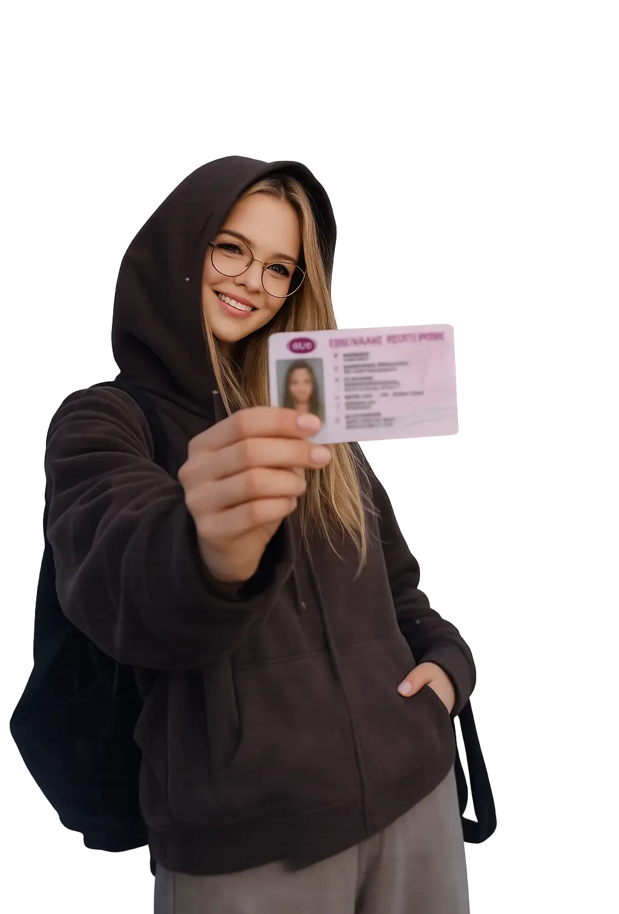
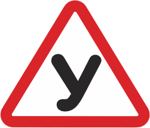

<!DOCTYPE html>
<html lang="ru">
<head>
  <meta name="robots" content="noindex, nofollow">
  <meta charset="UTF-8" />
  <meta name="viewport" content="width=device-width, initial-scale=1.0" />
  <title>Центральные курсы водителей — автошкола в Томске</title>
  <meta name="description" content="Автошкола «Центральные курсы водителей» в Томске. Категории А, А1, В (механика и автомат). Собственный автодром 7000 м². Более 20 000 выпускников." />
  <!-- TODO(domain): реального домена ещё нет — REPLACE-ME.example проставлен
       намеренно во всех местах ниже (canonical, og:url, og:image, twitter:image,
       JSON-LD url/image, robots.txt, sitemap.xml). Заменить одним поиском по
       "REPLACE-ME.example", когда домен появится. -->
  <link rel="canonical" href="https://REPLACE-ME.example/" />

  <meta property="og:title" content="Центральные курсы водителей — автошкола в Томске" />
  <meta property="og:description" content="Автошкола «Центральные курсы водителей» в Томске. Категории А, А1, В (механика и автомат). Собственный автодром 7000 м². Более 20 000 выпускников." />
  <meta property="og:type" content="website" />
  <meta property="og:url" content="https://REPLACE-ME.example/" />
  <meta property="og:image" content="https://REPLACE-ME.example/images/hero_poster.webp" />
  <meta property="og:locale" content="ru_RU" />

  <meta name="twitter:card" content="summary_large_image" />
  <meta name="twitter:title" content="Центральные курсы водителей — автошкола в Томске" />
  <meta name="twitter:description" content="Автошкола «Центральные курсы водителей» в Томске. Категории А, А1, В (механика и автомат). Собственный автодром 7000 м². Более 20 000 выпускников." />
  <meta name="twitter:image" content="https://REPLACE-ME.example/images/hero_poster.webp" />

  <script type="application/ld+json">
  {
    "@context": "https://schema.org",
    "@type": "EducationalOrganization",
    "name": "Центральные курсы водителей",
    "url": "https://REPLACE-ME.example/",
    "image": "https://REPLACE-ME.example/images/hero_poster.webp",
    "telephone": "+7-3822-55-44-55",
    "address": {
      "@type": "PostalAddress",
      "addressLocality": "Томск",
      "streetAddress": "ул. Красноармейская, 89а",
      "addressCountry": "RU"
    }
  }
  </script>

  <link rel="icon" href="assets/logo/favicon.png" type="image/png">
  <link rel="apple-touch-icon" sizes="180x180" href="assets/logo/apple-touch-icon.png">
  <link rel="preconnect" href="https://fonts.googleapis.com" crossorigin>
  <link rel="preconnect" href="https://fonts.gstatic.com" crossorigin>
  <link rel="preload" as="image" href="images/hero_poster.webp" fetchpriority="high">
  <link rel="preload" as="image" href="images/cabin_screen_bg.webp" fetchpriority="high">
  <!-- Дисплейный шрифт — Futura Round, самохостинг (fonts/FuturaRound.woff2,
       @font-face в css/base.css), одно начертание Bold. Manrope (текстовый)
       по-прежнему грузится с Google Fonts. -->
  <link rel="preload" as="font" href="fonts/FuturaRound.woff2" type="font/woff2" crossorigin>
  <link href="https://fonts.googleapis.com/css2?family=Manrope:wght@400;500;600;700;800&display=swap" rel="stylesheet">
  <link rel="stylesheet" href="styles.build.css">
  <!-- Чистый vanilla JS, без сборки — React/Babel/Framer Motion удалены после миграции. -->
  <script>
    /* ========================================================================
       VANILLA JS TOOLKIT
       Секции строятся функциями отсюда и монтируются напрямую в DOM из
       initApp() (см. основной скрипт ниже) — чистый vanilla JS, без сборки.
    ======================================================================== */
    (function () {
      "use strict";

      function prefersReducedMotion() {
        return window.matchMedia("(prefers-reduced-motion: reduce)").matches;
      }

      /* ---------- Общие переиспользуемые хелперы ---------- */

      // Аналог компонента Reveal: fade+translate при первом входе в viewport.
      function vanillaReveal(el, opts) {
        opts = opts || {};
        const delay = opts.delay || 0;
        const y = opts.y != null ? opts.y : 24;
        const x = opts.x != null ? opts.x : 0;
        const duration = opts.duration || 600;
        el.style.opacity = "0";
        el.style.translate = x + "px " + y + "px";
        el.style.transition =
          "opacity " + duration + "ms cubic-bezier(0.22,0.61,0.36,1) " + delay + "ms, " +
          "translate " + duration + "ms cubic-bezier(0.22,0.61,0.36,1) " + delay + "ms";
        const obs = new IntersectionObserver((entries) => {
          entries.forEach((entry) => {
            if (entry.isIntersecting) {
              el.style.opacity = "1";
              el.style.translate = "0px 0px";
              obs.unobserve(el);
            }
          });
        }, { threshold: 0, rootMargin: "0px 0px -80px 0px" });
        obs.observe(el);
      }

      // Единый бейдж-кикер над заголовком каждой секции начиная с экрана 3
      // (см. handoff/README.md, «Бейдж-кикер секции»). Точка внутри —
      // var(--red) / на тёмном var(--red-light); {dot:false} для мест без
      // индикатора (например, тег «Автошкола в Томске…» в подвале).
      function buildSectionBadge(text, opts) {
        opts = opts || {};
        const badge = document.createElement("div");
        badge.className = "section-badge" + (opts.dark ? " is-dark" : "");
        if (opts.dot !== false) {
          const dot = document.createElement("span");
          dot.className = "section-badge-dot";
          dot.setAttribute("aria-hidden", "true");
          badge.appendChild(dot);
        }
        badge.appendChild(document.createTextNode(text));
        return badge;
      }

      // Аналог компонента SectionEyebrowTitle. headingClass/wrapClass — точечные
      // переопределения для секций с собственной брейкпоинт-шкалой заголовка
      // (Программы/Почему выбирают нас, см. section-heading-lg в base.css),
      // остальные вызовы по умолчанию остаются на статичном .display-2.
      function buildSectionEyebrowTitle(props) {
        const wrap = document.createElement("div");
        wrap.className = "max-w-2xl mb-12" + (props.dark ? " on-dark" : "") + (props.wrapClass ? " " + props.wrapClass : "");
        const badge = buildSectionBadge(props.eyebrow, { dark: props.dark });
        badge.classList.add("mb-3");
        wrap.appendChild(badge);
        const rest = document.createElement("div");
        rest.innerHTML =
          '<h2 class="' + (props.headingClass || "display-2") + " " + (props.dark ? "text-paper" : "text-navy") + '">' + props.title + "</h2>" +
          '<div class="w-16 h-1 bg-red mt-5 mb-5"></div>' +
          (props.lead ? '<p class="body-lg">' + props.lead + "</p>" : "");
        while (rest.firstChild) wrap.appendChild(rest.firstChild);
        return wrap;
      }

      function buildSectionDivider(color) {
        const divider = document.createElement("div");
        divider.setAttribute("aria-hidden", "true");
        divider.className = "section-divider-mobile absolute bottom-0 left-0 w-full h-[26px] sm:h-[44px] pointer-events-none z-20";
        divider.style.background = color;
        divider.style.clipPath = "polygon(0 100%, 100% 0, 100% 100%)";
        return divider;
      }

      /* ---------- WhyUsSection ---------- */

      // Иконки — фиксированный набор из макета «Экраны 4–5», см. brief:
      // часы · карта с полосой · геопин · календарь · документ с буквой ·
      // «дорога» · лист с печатью · круг с диагональю. Одинаковых быть не
      // должно — иконка единственный визуальный различитель плиток.
      function whyItemsData() {
        return [
          { title: "Автошкола в Томске работает с 1994 года", featured: true,
            icon: '<path d="M12 7v5l3.5 2M12 21a9 9 0 1 0 0-18 9 9 0 0 0 0 18Z" stroke="currentColor" stroke-width="1.8" stroke-linecap="round" fill="none" />' },
          { title: "Обучение на права с оплатой в рассрочку до конца обучения",
            icon: '<rect x="3" y="6" width="18" height="13" rx="2" stroke="currentColor" stroke-width="1.8" fill="none" /><path d="M3 10h18" stroke="currentColor" stroke-width="1.8" fill="none" />' },
          { title: "Оборудованные учебные классы в центре города",
            icon: '<path d="M12 22s7-6.6 7-12a7 7 0 1 0-14 0c0 5.4 7 12 7 12z" stroke="currentColor" stroke-width="1.8" fill="none" /><circle cx="12" cy="10" r="2.5" stroke="currentColor" stroke-width="1.8" fill="none" />' },
          { title: "Курсы вождения в удобное время, включая выходные",
            icon: '<rect x="4" y="5" width="16" height="15" rx="2" stroke="currentColor" stroke-width="1.8" fill="none" /><path d="M4 9.5h16M8 3v4M16 3v4" stroke="currentColor" stroke-width="1.8" stroke-linecap="round" />' },
          { title: "Собственный парк автомобилей и мотоциклов",
            icon: '<rect x="4" y="3" width="16" height="18" rx="2" stroke="currentColor" stroke-width="1.8" fill="none" /><path d="M9.5 17V7h3a2.8 2.8 0 1 1 0 5.6h-3" stroke="currentColor" stroke-width="1.8" fill="none" />' },
          { title: "Собственный автодром с освещением", featured: true,
            icon: '<path d="M7 15a4 4 0 1 1 0-8c2.5 0 3.5 2 5 4s2.5 4 5 4a4 4 0 1 0 0-8c-2.5 0-3.5 2-5 4s-2.5 4-5 4z" stroke="currentColor" stroke-width="1.8" fill="none" />' },
          { title: "Преподаватели с опытом более 15 лет",
            icon: '<path d="M6 3h9l3 3v15H6V3Z" stroke="currentColor" stroke-width="1.8" fill="none" /><circle cx="12" cy="14" r="2.6" stroke="currentColor" stroke-width="1.8" fill="none" />' },
          { title: "Возврат 13% стоимости обучения — налоговый вычет ИФНС",
            icon: '<circle cx="12" cy="12" r="9" stroke="currentColor" stroke-width="1.8" fill="none" /><path d="M9 15 15 9" stroke="currentColor" stroke-width="1.8" stroke-linecap="round" />' },
        ];
      }

      // Плитка меняет раскладку, а не только масштаб: <1024 иконка слева,
      // текст справа (row); ≥1024 иконка сверху (column) — на узкой колонке
      // ~268px горизонтальная плитка оставляла бы пустоту под текстом.
      function buildWhyItemCard(item) {
        const reducedMotion = prefersReducedMotion();
        const card = document.createElement("div");
        card.className = "why-tile" + (item.featured ? " why-tile--priority why-card-priority" : "");
        card.style.transformStyle = "preserve-3d";
        card.style.transitionProperty = "transform";
        card.style.transitionDuration = "150ms";
        card.style.transitionTimingFunction = "ease-out";

        card.innerHTML =
          '<span class="why-tile-icon"><svg viewBox="0 0 24 24" style="width:52%;height:52%;">' + item.icon + "</svg></span>" +
          '<span class="why-tile-text">' + item.title + "</span>";

        card.addEventListener("mousemove", (e) => {
          if (reducedMotion) return;
          const rect = card.getBoundingClientRect();
          const px = (e.clientX - rect.left) / rect.width;
          const py = (e.clientY - rect.top) / rect.height;
          const ry = (px - 0.5) * 12;
          const rx = -(py - 0.5) * 12;
          card.style.transform = "perspective(800px) rotateX(" + rx + "deg) rotateY(" + ry + "deg)";
        });
        card.addEventListener("mouseleave", () => {
          card.style.transform = reducedMotion ? "none" : "perspective(800px) rotateX(0deg) rotateY(0deg)";
        });

        return card;
      }

      function buildWhyUsSection(root) {
        const section = document.createElement("section");
        section.id = "why";
        section.dataset.headerTheme = "dark";
        section.className = "why-section bg-navy relative z-10 border-y border-red/10 overflow-hidden";
        section.innerHTML =
          '<div class="absolute inset-0 opacity-[0.04]" aria-hidden="true">' +
            '<svg class="absolute inset-0 w-full h-full" preserveAspectRatio="none">' +
              '<defs><pattern id="whyDiagonalLines" width="44" height="44" patternTransform="rotate(45)" patternUnits="userSpaceOnUse">' +
                '<line x1="0" y1="0" x2="0" y2="44" stroke="#ffffff" stroke-width="1.5" stroke-dasharray="6 10" />' +
              "</pattern></defs>" +
              '<rect width="100%" height="100%" fill="url(#whyDiagonalLines)" />' +
            "</svg>" +
          "</div>" +
          '<div class="absolute inset-0" aria-hidden="true" style="background: radial-gradient(circle at 15% 20%, rgba(227,30,36,0.12), transparent 55%);"></div>';

        const shell = document.createElement("div");
        shell.className = "shell relative z-10";

        const titleWrap = buildSectionEyebrowTitle({
          eyebrow: "Наши преимущества",
          title: "Почему выбирают нас",
          dark: true,
          headingClass: "section-heading-lg",
          wrapClass: "section-eyebrow-compact",
        });
        shell.appendChild(titleWrap);
        vanillaReveal(titleWrap);

        const grid = document.createElement("div");
        grid.className = "why-grid";
        const cards = whyItemsData().map((item, i) => {
          const card = buildWhyItemCard(item);
          card.style.opacity = "0";
          card.style.translate = "0 16px";
          card.style.transitionProperty = "transform, opacity, translate";
          card.style.transitionDuration = "150ms, 500ms, 500ms";
          card.style.transitionTimingFunction = "ease-out, ease-out, ease-out";
          card.style.transitionDelay = "0ms, " + (i * 80) + "ms, " + (i * 80) + "ms";
          grid.appendChild(card);
          return card;
        });
        shell.appendChild(grid);
        section.appendChild(shell);
        section.appendChild(buildSectionDivider("#ffffff"));
        root.appendChild(section);

        const obs = new IntersectionObserver((entries) => {
          entries.forEach((entry) => {
            if (entry.isIntersecting) {
              cards.forEach((card) => {
                card.style.opacity = "1";
                card.style.translate = "0 0";
              });
              obs.unobserve(grid);
            }
          });
        }, { threshold: 0.4 });
        obs.observe(grid);
      }

      /* ---------- FleetSection ---------- */
      // Full-bleed лента с обрезкой справа (см. «Автопарк · брейкпоинты»):
      // одна раскладка на всех ширинах, меняется только масштаб шести
      // кадров. Ритм ширин КРУПНЫЙ·средний·КРУПНЫЙ·мелкий·КРУПНЫЙ·средний
      // не переставлять — этим лента и держит характер. object-position
      // индивидуален по кадрам: 1/2/5 — «полтела» (55%), 6 — почти у низа
      // (68%), 3/4 — машина у самой нижней кромки источника (100%).
      const FLEET_CARS = [
        { img: "images/fleet-1.webp", pos: "50% 55%" },
        { img: "images/fleet-2.webp", pos: "50% 55%" },
        { img: "images/fleet-3.webp", pos: "50% 100%" },
        { img: "images/fleet-4.webp", pos: "50% 100%" },
        { img: "images/fleet-5.webp", pos: "50% 55%" },
        { img: "images/fleet-6.webp", pos: "50% 68%" },
      ];

      function buildFleetPlaceholder() {
        const ph = document.createElement("div");
        ph.className = "w-full h-full bg-navy/5 flex items-center justify-center text-[var(--text-muted)]";
        ph.innerHTML =
          '<svg viewBox="0 0 24 24" width="32" height="32" class="opacity-50"><path d="M4 16l1.5-5.5A2 2 0 0 1 7.4 9h9.2a2 2 0 0 1 1.9 1.5L20 16" stroke="currentColor" stroke-width="1.8" stroke-linecap="round" stroke-linejoin="round" fill="none" /><rect x="3" y="16" width="18" height="4" rx="1" stroke="currentColor" stroke-width="1.8" fill="none" /><circle cx="7" cy="12.5" r=".9" fill="currentColor" /><circle cx="17" cy="12.5" r=".9" fill="currentColor" /></svg>';
        return ph;
      }

      function buildFleetFrame(car, index) {
        const frame = document.createElement("span");
        frame.className = "fleet-frame fleet-frame--" + (index + 1);

        const img = document.createElement("img");
        img.src = car.img;
        img.alt = "";
        img.loading = "lazy";
        img.style.objectPosition = car.pos;
        img.addEventListener("error", () => { img.replaceWith(buildFleetPlaceholder()); }, { once: true });
        frame.appendChild(img);

        return frame;
      }

      // Drag мышью с инерцией (десктоп) + shift-колесо вместо тач-скролла
      // (тач и так свайпает нативно — pointerType "touch" не перехватываем).
      // Snap отключается в CSS под prefers-reduced-motion; инерцию гасим
      // здесь же, не давая velocity накопиться, чтобы after-drag не было
      // доката.
      function attachFleetDrag(track) {
        const reducedMotion = prefersReducedMotion();
        let dragging = false;
        let startX = 0;
        let startScroll = 0;
        let lastX = 0;
        let lastT = 0;
        let velocity = 0;
        let momentumId = null;

        function stopMomentum() {
          if (momentumId) { cancelAnimationFrame(momentumId); momentumId = null; }
        }
        function momentumStep() {
          track.scrollLeft -= velocity;
          velocity *= 0.95;
          momentumId = Math.abs(velocity) > 0.5 ? requestAnimationFrame(momentumStep) : null;
        }

        track.addEventListener("pointerdown", (e) => {
          if (e.pointerType === "touch") return;
          dragging = true;
          stopMomentum();
          track.classList.add("is-dragging");
          startX = lastX = e.clientX;
          startScroll = track.scrollLeft;
          lastT = performance.now();
          velocity = 0;
          track.setPointerCapture(e.pointerId);
        });
        track.addEventListener("pointermove", (e) => {
          if (!dragging) return;
          track.scrollLeft = startScroll - (e.clientX - startX);
          if (!reducedMotion) {
            const now = performance.now();
            const dt = now - lastT || 16;
            velocity = (e.clientX - lastX) / dt * 16;
            lastX = e.clientX;
            lastT = now;
          }
        });
        function endDrag() {
          if (!dragging) return;
          dragging = false;
          track.classList.remove("is-dragging");
          if (!reducedMotion && Math.abs(velocity) > 1) momentumStep();
        }
        track.addEventListener("pointerup", endDrag);
        track.addEventListener("pointerleave", endDrag);
        track.addEventListener("pointercancel", endDrag);

        track.addEventListener("wheel", (e) => {
          if (!e.shiftKey) return;
          e.preventDefault();
          track.scrollLeft += e.deltaY;
        }, { passive: false });
      }

      function buildFleetSection(root) {
        const section = document.createElement("section");
        section.id = "fleet";
        section.dataset.headerTheme = "light";
        section.className = "fleet-section bg-paper relative z-10";

        const head = document.createElement("div");
        head.className = "fleet-head";

        const headText = document.createElement("div");
        headText.className = "fleet-head-text";
        headText.innerHTML =
          '<span class="fleet-badge"><span class="fleet-badge-dot" aria-hidden="true"></span>Учебная техника</span>' +
          '<h2 class="fleet-heading">Наш автопарк</h2>' +
          '<span class="fleet-heading-rule" aria-hidden="true"></span>' +
          '<p class="fleet-lead">Техника допущена к экзамену в ГИБДД</p>';
        head.appendChild(headText);
        vanillaReveal(headText);

        const hint = document.createElement("span");
        hint.className = "fleet-hint";
        hint.innerHTML =
          "Листайте" +
          '<svg viewBox="0 0 24 24" aria-hidden="true"><path d="M4 12h15M14 6l6 6-6 6" stroke="currentColor" stroke-width="1.9" fill="none" stroke-linecap="round" stroke-linejoin="round" /></svg>';
        head.appendChild(hint);

        section.appendChild(head);

        const track = document.createElement("div");
        track.className = "fleet-track";
        FLEET_CARS.forEach((car, index) => {
          const frame = buildFleetFrame(car, index);
          track.appendChild(frame);
          vanillaReveal(frame, { delay: index * 80, y: 20 });
        });
        const spacer = document.createElement("span");
        spacer.className = "fleet-track-spacer";
        spacer.setAttribute("aria-hidden", "true");
        track.appendChild(spacer);
        attachFleetDrag(track);
        section.appendChild(track);

        section.appendChild(buildSectionDivider("#0c1740"));
        root.appendChild(section);
      }

      /* ---------- SiteFooter ---------- */

      function buildSiteFooter(root, opts) {
        opts = opts || {};
        const onOpenLead = opts.onOpenLead;
        const footer = document.createElement("footer");
        footer.dataset.headerTheme = "dark";
        footer.className = "bg-navy2 relative z-10 border-t border-red/20 overflow-hidden";
        footer.innerHTML =
          '<div class="absolute top-0 inset-x-0 h-px" aria-hidden="true" style="background: linear-gradient(90deg, transparent, rgba(227,30,36,0.5), transparent);"></div>' +
          '<div class="absolute inset-0 opacity-[0.04]" aria-hidden="true">' +
            '<svg class="absolute inset-0 w-full h-full" preserveAspectRatio="none">' +
              '<defs><pattern id="footerDiagonalLines" width="44" height="44" patternTransform="rotate(45)" patternUnits="userSpaceOnUse">' +
                '<line x1="0" y1="0" x2="0" y2="44" stroke="#ffffff" stroke-width="1.5" stroke-dasharray="6 10" />' +
              "</pattern></defs>" +
              '<rect width="100%" height="100%" fill="url(#footerDiagonalLines)" />' +
            "</svg>" +
          "</div>" +
          '<div class="absolute inset-0" aria-hidden="true" style="background: radial-gradient(circle at 90% 100%, rgba(227,30,36,0.14), transparent 55%);"></div>';

        // Колонки 1/2/5 (390/768/1280+) — геометрия по handoff «Шапка и
        // подвал», содержимое (иконки соцсетей, бейдж, рейтинг 2ГИС) — из
        // прежней реализации. Пять смысловых блоков: about, links, contacts,
        // legal, cta — на 768 CTA-карточка растягивается на 2 колонки
        // (.site-footer-cta-card), на 1280+ занимает ровно одну.
        const cols = document.createElement("div");
        cols.className = "shell site-footer-inner site-footer-cols relative z-10";

        const colAbout = document.createElement("div");
        colAbout.className = "flex flex-col items-start gap-4";
        colAbout.innerHTML =
          '<a href="#top" class="shrink-0 self-start relative footer-logo-compact">' +
            '' +
          "</a>" +
          '<a href="#top" class="shrink-0 self-start relative footer-logo-full">' +
            '' +
          "</a>" +
          '<div data-footer-badge></div>' +
          '<a href="' + REVIEWS_2GIS_URL + '" target="_blank" rel="noopener noreferrer" class="inline-flex items-center gap-2 rounded-full bg-paper/[0.06] border border-paper/10 px-3 py-1.5 text-[var(--text-on-dark)] text-xs font-semibold hover:border-red/30 hover:text-paper transition">' +
            buildStarIcon(true) +
            "<span>4.8 · 170+ отзывов на 2ГИС</span>" +
          "</a>" +
          '<div class="flex items-center gap-3" data-footer-social></div>';
        colAbout.querySelector("[data-footer-badge]").replaceWith(
          buildSectionBadge("Автошкола в Томске с 1994 года", { dark: true, dot: false })
        );

        // Соцсети 44×44, фон rgba(255,255,255,.1), иконка 18×18 currentColor —
        // те же SVG, что и в mobileSocialRow (см. ниже), не перерисовывать.
        const socialWrap = colAbout.querySelector("[data-footer-social]");
        socialWrap.innerHTML =
          '<a href="https://vk.ru/ckv.tomsk" target="_blank" rel="noopener" aria-label="ВКонтакте" class="inline-flex w-11 h-11 items-center justify-center rounded-full bg-paper/10 text-paper hover:bg-red transition">' +
            '<svg viewBox="0 0 24 24" width="18" height="18" fill="currentColor"><path d="M13.9 17.4c-5.6 0-8.9-3.9-9-10.3h2.8c.1 4.7 2.1 6.6 3.7 7V7.1h2.7v4.1c1.6-.2 3.2-2 3.8-4.1h2.7c-.4 2.6-2.3 4.4-3.6 5.1 1.3.6 3.5 2.1 4.3 5.2h-3c-.6-2-2.2-3.5-4.2-3.7v3.7h-.2z" /></svg>' +
          "</a>" +
          '<a href="#" target="_blank" rel="noopener" aria-label="MAX" data-todo="max-profile-link-missing" title="TODO: указать реальную ссылку на профиль MAX" class="inline-flex w-11 h-11 items-center justify-center rounded-full bg-paper/10 text-paper hover:bg-red transition">' +
            '<svg viewBox="0 0 24 24" width="18" height="18" fill="currentColor"><g transform="scale(0.0333333)"><path d="M350.4,9.6C141.8,20.5,4.1,184.1,12.8,390.4c3.8,90.3,40.1,168,48.7,253.7,2.2,22.2-4.2,49.6,21.4,59.3,31.5,11.9,79.8-8.1,106.2-26.4,9-6.1,17.6-13.2,24.2-22,27.3,18.1,53.2,35.6,85.7,43.4,143.1,34.3,299.9-44.2,369.6-170.3C799.6,291.2,622.5-4.6,350.4,9.6h0ZM269.4,504c-11.3,8.8-22.2,20.8-34.7,27.7-18.1,9.7-23.7-.4-30.5-16.4-21.4-50.9-24-137.6-11.5-190.9,16.8-72.5,72.9-136.3,150-143.1,78-6.9,150.4,32.7,183.1,104.2,72.4,159.1-112.9,316.2-256.4,218.6h0Z" /></g></svg>' +
          "</a>" +
          '<a href="https://t.me/CKVTOMSK" target="_blank" rel="noopener" aria-label="Telegram" class="inline-flex w-11 h-11 items-center justify-center rounded-full bg-paper/10 text-paper hover:bg-red transition">' +
            '<svg viewBox="0 0 24 24" width="18" height="18"><path d="M21 4L2.5 11.2c-.6.2-.6 1 0 1.3l4.6 1.6 1.7 5.2c.2.6 1 .7 1.3.2l2.5-3.2 4.6 3.4c.5.4 1.2.1 1.4-.5L23 5.1c.2-.7-.5-1.3-2-1.1zM8.5 13.5L18 7.2l-8.1 7.6-.2 3.2-1.2-4.5z" stroke="currentColor" stroke-width="1.2" stroke-linejoin="round" stroke-linecap="round" fill="none" /></svg>' +
          "</a>";
        Array.from(socialWrap.children).forEach((icon) => attachMagneticBehavior(icon));

        const colLinks = document.createElement("div");
        const linksList = document.createElement("ul");
        linksList.className = "flex flex-col text-[var(--text-on-dark)] site-footer-links-text";
        NAV_LINKS.forEach((link) => {
          const li = document.createElement("li");
          li.innerHTML =
            '<a href="' + link.href + '" class="min-h-11 group inline-flex items-center gap-2 hover:text-[var(--red-light)] transition-colors duration-300">' +
              '<span class="w-1 h-1 rounded-full bg-red opacity-0 -translate-x-1 group-hover:opacity-100 group-hover:translate-x-0 transition-all duration-300"></span>' +
              link.label +
            "</a>";
          linksList.appendChild(li);
        });
        colLinks.appendChild(linksList);

        // Контакты — телефон, почта, два адреса, без иконок (см. handoff
        // «Шапка и подвал» §4): «Красноармейская, 89а» — класс, «Мелиоративная,
        // 2/3» — автодром (те же адреса, что и в WORKING_HOURS_SCHEDULE).
        const colContacts = document.createElement("div");
        colContacts.className = "flex flex-col gap-2";
        colContacts.innerHTML =
          '<a href="tel:+73822554455" class="min-h-11 inline-flex items-center font-bold text-paper site-footer-phone-text hover:text-[var(--red-light)] transition">55-44-55</a>' +
          '<a href="mailto:ckvtomsk@mail.ru" class="min-h-11 inline-flex items-center text-[var(--text-on-dark)] site-footer-fine-text hover:text-[var(--red-light)] transition">ckvtomsk@mail.ru</a>' +
          '<p class="text-[var(--text-on-dark)] site-footer-fine-text leading-relaxed">Красноармейская, 89а<br />Мелиоративная, 2/3</p>';

        const colLegal = document.createElement("div");
        colLegal.className = "flex flex-col";
        colLegal.innerHTML =
          '<a href="http://www.ckvtomsk.ru/" target="_blank" rel="noopener noreferrer" class="min-h-11 inline-flex items-center underline underline-offset-2 text-[var(--text-on-dark)] site-footer-fine-text hover:text-[var(--red-light)] transition">' +
            "Сведения об образовательной организации" +
          "</a>" +
          '<a href="privacy.html" class="min-h-11 inline-flex items-center underline underline-offset-2 text-[var(--text-on-dark)] site-footer-fine-text hover:text-[var(--red-light)] transition">Политика конфиденциальности</a>';

        const colCta = document.createElement("div");
        colCta.className = "site-footer-cta-card";
        const ctaCard = document.createElement("div");
        ctaCard.className = "rounded-2xl border border-red/20 bg-paper/[0.04] p-6 flex flex-col";
        ctaCard.innerHTML =
          '<h4 class="display-3 text-paper mb-2">Остались вопросы?</h4>' +
          '<p class="text-[var(--text-on-dark)] text-sm leading-relaxed mb-5">Запишитесь на бесплатную консультацию</p>';
        const ctaBtn = buildMagneticButton({
          text: "Задать вопрос",
          className: "w-full min-h-[46px] flex items-center justify-center bg-red text-paper font-bold rounded-full text-sm hover:brightness-110 transition",
          onClick: () => { if (onOpenLead) onOpenLead(); },
        });
        ctaCard.appendChild(ctaBtn);
        colCta.appendChild(ctaCard);

        cols.appendChild(colAbout);
        cols.appendChild(colLinks);
        cols.appendChild(colContacts);
        cols.appendChild(colLegal);
        cols.appendChild(colCta);
        footer.appendChild(cols);
        vanillaReveal(colAbout, { delay: 0 });
        vanillaReveal(colLinks, { delay: 60 });
        vanillaReveal(colContacts, { delay: 120 });
        vanillaReveal(colLegal, { delay: 180 });
        vanillaReveal(colCta, { delay: 240 });

        // Оферта — отдельным ярусом под границей white/8, вне колоночной
        // сетки, всегда последняя (правило 4 handoff «Шапка и подвал»).
        const bottomBar = document.createElement("div");
        bottomBar.className = "shell site-footer-offer relative z-10 text-[var(--text-on-dark)]";
        bottomBar.innerHTML = "<p>© 2026 Центральные курсы водителей. Не является публичной офертой</p>";
        footer.appendChild(bottomBar);

        root.appendChild(footer);
      }

      /* ---------- Универсальная модалка (аналог ModalShell) ---------- */

      function buildModalShell(opts) {
        opts = opts || {};
        const overlay = document.createElement("div");
        overlay.className = "fixed inset-0 z-[100] flex items-center justify-center p-4";
        overlay.style.opacity = "0";
        overlay.style.pointerEvents = "none";
        overlay.style.transition = "opacity 250ms ease";
        overlay.setAttribute("role", "dialog");
        overlay.setAttribute("aria-modal", "true");
        if (opts.labelledBy) overlay.setAttribute("aria-labelledby", opts.labelledBy);

        const backdrop = document.createElement("div");
        backdrop.className = "absolute inset-0 bg-navy2/80 backdrop-blur-sm";

        // Скроллится не сама рамка, а внутренняя обёртка (scroller): кнопка
        // закрытия лежит рядом с ней, а не внутри, поэтому не уплывает вместе
        // с текстом. Раньше overflow-y-auto и p-8 висели на content, крестик
        // был absolute внутри скролл-контейнера и на длинном тексте уезжал за
        // верхнюю кромку (на 390 — уже на текущих текстах).
        const content = document.createElement("div");
        content.className = "relative bg-paper rounded-2xl w-full max-h-[90vh] overflow-hidden flex flex-col " + (opts.wide ? "max-w-2xl" : "max-w-md");
        content.style.transition = "opacity 250ms ease, translate 250ms ease, scale 250ms ease";
        content.style.opacity = "0";
        content.style.translate = "0 24px";
        content.style.scale = "0.97";

        const closeBtn = document.createElement("button");
        closeBtn.type = "button";
        closeBtn.setAttribute("aria-label", "Закрыть");
        closeBtn.dataset.modalClose = "";
        closeBtn.className = "absolute top-4 right-4 z-10 w-11 h-11 rounded-full flex items-center justify-center text-[var(--text-muted)] hover:text-red hover:bg-navy/5 transition text-xl leading-none";
        closeBtn.innerHTML = "&times;";

        const scroller = document.createElement("div");
        // min-h-0 обязателен: без него флекс-ребёнок не сжимается и max-h-[90vh]
        // на рамке перестаёт ограничивать высоту
        scroller.className = "overflow-y-auto min-h-0 p-8";

        const body = document.createElement("div");
        body.className = "modal-body";

        scroller.appendChild(body);
        content.appendChild(closeBtn);
        content.appendChild(scroller);
        overlay.appendChild(backdrop);
        overlay.appendChild(content);

        let isOpen = false;
        let onCloseCb = null;
        let lastFocused = null;      // элемент-инициатор, туда возвращаем фокус
        let prevHtmlOverflow = "";
        let prevBodyPaddingRight = "";
        let prevHtmlScrollBehavior = "";
        let prevScrollY = 0;

        // Блокировка скролла страницы под модалкой. Вешаем overflow на
        // documentElement, а не на body: скролл-контейнер страницы — именно html
        // (`html { scroll-behavior: smooth; overscroll-behavior-y: none }` в
        // base.css), и `body { overflow: hidden }` его не останавливает —
        // проверено, страница прокручивалась под открытой модалкой.
        function lockPageScroll() {
          const root = document.documentElement;
          prevScrollY = window.scrollY;
          prevHtmlOverflow = root.style.overflow;
          prevBodyPaddingRight = document.body.style.paddingRight;
          // overflow: hidden не останавливает уже запущенную плавную прокрутку
          // (клик по пункту меню, а сразу за ним «Подробнее»): страница
          // продолжала ехать под открытой модалкой на 28–49px. Прервать саму
          // анимацию нечем — проверено, что скролл в ТУ ЖЕ позицию её не гасит
          // ни как window.scrollTo(x, y), ни как behavior: "instant"; Chrome
          // такой вызов просто игнорирует. Поэтому не гасим, а переспрашиваем
          // позицию на следующем кадре: один шаг анимации успевает примениться,
          // и мы возвращаем страницу обратно. Коллбэк rAF выполняется после
          // шага прокрутки, но до отрисовки кадра, поэтому сдвиг не виден.
          //
          // scroll-behavior на время снимаем — иначе этот возврат сам поедет
          // плавно и сдвиг как раз станет заметным. Возвращаем при закрытии.
          prevHtmlScrollBehavior = root.style.scrollBehavior;
          root.style.scrollBehavior = "auto";
          // Ширина полосы прокрутки: 0 при overlay-скроллбарах (macOS), ~15px в
          // Windows. Компенсируем, иначе контент дёрнется при её исчезновении.
          const gap = window.innerWidth - root.clientWidth;
          root.style.overflow = "hidden";
          if (gap > 0) document.body.style.paddingRight = gap + "px";
          window.scrollTo(0, prevScrollY);
          requestAnimationFrame(() => { if (isOpen) window.scrollTo(0, prevScrollY); });
        }

        function unlockPageScroll() {
          const root = document.documentElement;
          root.style.overflow = prevHtmlOverflow;
          document.body.style.paddingRight = prevBodyPaddingRight;
          if (Math.abs(window.scrollY - prevScrollY) > 1) window.scrollTo(0, prevScrollY);
          root.style.scrollBehavior = prevHtmlScrollBehavior;
        }

        // Тот же приём, что у мобильного меню (см. handleMobileMenuKeydown):
        // Tab и Shift+Tab не должны уводить фокус на страницу под модалкой.
        function getFocusable() {
          return Array.from(content.querySelectorAll(
            'a[href], button:not([disabled]), input:not([disabled]), textarea:not([disabled]), select:not([disabled]), [tabindex]:not([tabindex="-1"])'
          )).filter((el) => el.offsetWidth > 0 || el.offsetHeight > 0);
        }

        function handleKeydown(e) {
          if (e.key === "Escape") {
            close();
            return;
          }
          if (e.key !== "Tab") return;
          const focusable = getFocusable();
          if (!focusable.length) return;
          const first = focusable[0];
          const last = focusable[focusable.length - 1];
          const within = content.contains(document.activeElement);
          if (e.shiftKey) {
            if (!within || document.activeElement === first) {
              e.preventDefault();
              last.focus();
            }
          } else if (!within || document.activeElement === last) {
            e.preventDefault();
            first.focus();
          }
        }

        function open(onClose) {
          onCloseCb = onClose || null;
          isOpen = true;
          lastFocused = document.activeElement instanceof HTMLElement ? document.activeElement : null;
          lockPageScroll();
          overlay.style.pointerEvents = "auto";
          overlay.style.opacity = "1";
          scroller.scrollTop = 0;
          requestAnimationFrame(() => {
            content.style.opacity = "1";
            content.style.translate = "0 0";
            content.style.scale = "1";
          });
          document.addEventListener("keydown", handleKeydown);
          setTimeout(() => {
            const focusable = content.querySelector("input, textarea, select, button:not([data-modal-close])");
            // preventScroll: в модалке программы первая такая кнопка — «Записаться
            // на курс» в самом низу, и обычный focus() открывал бы модалку сразу
            // прокрученной к ней
            if (focusable) focusable.focus({ preventScroll: true });
            else closeBtn.focus({ preventScroll: true });
            scroller.scrollTop = 0;
          }, 0);
        }

        function close() {
          if (!isOpen) return;
          isOpen = false;
          overlay.style.opacity = "0";
          overlay.style.pointerEvents = "none";
          content.style.opacity = "0";
          content.style.translate = "0 24px";
          content.style.scale = "0.97";
          document.removeEventListener("keydown", handleKeydown);
          unlockPageScroll();
          // Возврат фокуса на инициатора — по любому пути закрытия: Esc, клик по
          // подложке, крестик. Проверяем, что элемент ещё в документе.
          if (lastFocused && document.contains(lastFocused)) lastFocused.focus({ preventScroll: true });
          lastFocused = null;
          if (onCloseCb) onCloseCb();
        }

        backdrop.addEventListener("click", close);
        closeBtn.addEventListener("click", close);

        return { overlay, body, open, close };
      }

      /* ---------- AboutHeroSection / LicensesSection ---------- */

      // Значения переиспользуются и в цифрах на состоянии 2 первого экрана
      // (см. buildHeroStatTilesContent) — единый источник, не дублировать.
      const KEY_FACTS = [
        { value: "30+", label: "лет работы на рынке" },
        { value: "20 000+", label: "выпускников" },
        { value: "95%", label: "сдача с 1 раза" },
        { value: "7 000 м²", label: "автодром" },
      ];

      const ABOUT_TABS = [
        { key: "teachers", label: "Преподаватели", text: "Обучение в автошколе ведут преподаватели теории с высшим техническим образованием и опытом преподавания более 15 лет. Инструкторы — профессиональные водители с опытом обучения более 3 лет, внимательные и вежливые наставники." },
        { key: "track", label: "Автодром", text: "Собственный автодром автошколы площадью 7000 м², аттестованный ГИБДД. Есть освещение для вечерних занятий, туалет и всё необходимое для отработки упражнений на автомобилях и мотоциклах." },
        { key: "fleet", label: "Автопарк", text: "Учебные автомобили и мотоциклы, механика и автомат. Все машины оборудованы дублирующими педалями и допущены к сдаче экзамена в ГИБДД." },
        { key: "classes", label: "Классы", text: "Оборудованные учебные классы в центре города — всё необходимое для комфортного обучения в автошколе: тренажёры, презентационное оборудование и удобные условия для занятий теорией." },
      ];

      const LICENSES = [
        { title: "Лицензия на образовательную деятельность", thumb: "images/license-1-thumb.webp", full: "images/license-1-full.webp" },
        { title: "Лицензия на профессиональное обучение", thumb: "images/license-2-thumb.webp", full: "images/license-2-full.webp" },
        { title: "Заключение ГИБДД о соответствии материально-технической базы", thumb: "images/license-3-thumb.webp", full: "images/license-3-full.webp" },
        { title: "Заключение ГИБДД о соответствии автодрома и автопарка", thumb: "images/license-4-thumb.webp", full: "images/license-4-full.webp" },
      ];

      // Модалка с полным сканом лицензии — открывается из полосы-«пика»
      // документов в ProgramsSection, см. handoff/README.md, «14 · Модалка
      // лицензии»: ряд миниатюр всех документов (переход без закрытия),
      // счётчик, «Скачать PDF», стрелки ← →.
      function buildLicenseModal() {
        // Ленивая инициализация: этот код выполняется в <head>, до того как
        // <body> существует — document.body.appendChild() тут упал бы.
        let modal = null;
        let index = 0;

        function go(delta) {
          index = (index + delta + LICENSES.length) % LICENSES.length;
          render();
        }

        function render() {
          const license = LICENSES[index];
          const thumbsHtml = LICENSES.map((l, i) =>
            '<button type="button" data-license-thumb="' + i + '" aria-label="' + l.title + '" class="license-modal-thumb' + (i === index ? " is-active" : "") + '"></button>'
          ).join("");

          modal.body.innerHTML =
            '<h3 id="license-modal-title" class="display-3 text-navy mb-4 pr-8">' + license.title + "</h3>" +
            '<div class="relative flex items-center justify-center">' +
              '<button type="button" data-license-prev aria-label="Предыдущий документ" class="license-modal-arrow license-modal-arrow--prev">‹</button>' +
              '' +
              '<button type="button" data-license-next aria-label="Следующий документ" class="license-modal-arrow license-modal-arrow--next">›</button>' +
            "</div>" +
            '<div class="flex items-center justify-center gap-2.5 mt-5">' + thumbsHtml + "</div>" +
            '<div class="flex items-center justify-between mt-4 text-sm">' +
              '<span class="text-[var(--text-muted)]">' + (index + 1) + " / " + LICENSES.length + "</span>" +
              '<a href="' + license.full + '" download class="text-red font-semibold hover:underline">Скачать PDF</a>' +
            "</div>";

          modal.body.querySelector("[data-license-prev]").addEventListener("click", () => go(-1));
          modal.body.querySelector("[data-license-next]").addEventListener("click", () => go(1));
          modal.body.querySelectorAll("[data-license-thumb]").forEach((btn) => {
            btn.addEventListener("click", () => { index = Number(btn.dataset.licenseThumb); render(); });
          });
        }

        return {
          open(license) {
            if (!modal) {
              modal = buildModalShell({ wide: true, labelledBy: "license-modal-title" });
              document.body.appendChild(modal.overlay);
            }
            index = Math.max(0, LICENSES.indexOf(license));
            render();
            modal.open();
          },
        };
      }
      const licenseModalInstance = buildLicenseModal();
      function showLicense(license) { licenseModalInstance.open(license); }

      // Полоса-«пик» документов под тарифами в ProgramsSection — единственное
      // место лицензий на странице; клик ведёт в модалку с полным сканом
      // (см. showLicense выше).
      function buildLicensesPeekTile(license, onOpen) {
        const btn = document.createElement("button");
        btn.type = "button";
        btn.className = "licenses-peek-tile";
        btn.innerHTML =
          '<span class="licenses-peek-scan" aria-hidden="true"></span>' +
          '<span class="licenses-peek-caption">' + license.title + "</span>";
        btn.addEventListener("click", onOpen);
        return btn;
      }

      function buildAboutPlate() {
        const badge = document.createElement("div");
        badge.className = "about-plate";
        badge.setAttribute("aria-hidden", "true");
        badge.innerHTML =
          '<span class="about-plate-poehali">ПОЕХАЛИ</span>' +
          '<span class="about-plate-region">' +
            '<span class="about-plate-region-number">70</span>' +
            '<span class="about-plate-region-bottom">' +
              '<span class="about-plate-rus">RUS</span>' +
              '<span class="about-plate-flag"><span style="background:#ffffff"></span><span style="background:#0039a6"></span><span style="background:#d52b1e"></span></span>' +
            "</span>" +
          "</span>";
        return badge;
      }

      function buildAboutHeroCarPlaceholder() {
        const ph = document.createElement("div");
        ph.className = "w-full h-full rounded-none bg-navy2 border border-white/10 flex items-center justify-center text-[var(--text-on-dark)]";
        ph.innerHTML =
          '<svg viewBox="0 0 24 24" width="48" height="48" class="opacity-40"><path d="M4 16l1.5-5.5A2 2 0 0 1 7.4 9h9.2a2 2 0 0 1 1.9 1.5L20 16" stroke="currentColor" stroke-width="1.8" stroke-linecap="round" stroke-linejoin="round" fill="none" /><rect x="3" y="16" width="18" height="4" rx="1" stroke="currentColor" stroke-width="1.8" fill="none" /><circle cx="7" cy="12.5" r=".9" fill="currentColor" /><circle cx="17" cy="12.5" r=".9" fill="currentColor" /></svg>';
        return ph;
      }

      function buildAboutTabs() {
        const reducedMotion = prefersReducedMotion();
        const TAB_FADE_MS = 350;
        const wrap = document.createElement("div");
        wrap.className = "about-tabs-block";

        const tabBar = document.createElement("div");
        tabBar.setAttribute("role", "tablist");
        tabBar.className = "about-tabs-bar";

        const textEl = document.createElement("p");
        textEl.className = "about-tabs-copy";
        // Высота анимируется вместе с fade: тексты вкладок разной длины, а прямо
        // под полем — кнопки «Записаться» / «Категории и цены». Без этого они
        // прыгали бы на 47–71px (замер на 320–414, где кнопки видны вместе с
        // вкладками). В reduced-motion-ветке высота не анимируется — там вместо
        // этого резерв по самой длинной вкладке, см. reserveCopyHeight ниже.
        textEl.style.transition = reducedMotion
          ? "none"
          : "opacity " + TAB_FADE_MS + "ms ease-out, translate " + TAB_FADE_MS + "ms ease-out, height " + TAB_FADE_MS + "ms ease-out";

        const buttons = [];

        // Анимация высоты (только обычная ветка). Целевую высоту не предвычисляем:
        // снимаем её с самого элемента в момент подмены текста, поэтому она всегда
        // соответствует текущей ширине колонки и уже загруженному шрифту —
        // инвалидировать по ресайзу и document.fonts.ready нечего.
        let swapTimer = null;    // отложенная подмена текста после fade-out
        let releaseTimer = null; // страховка на возврат height в auto
        let switchId = 0;        // отсекает хвосты прерванных переключений

        function releaseHeight(id) {
          if (id !== switchId) return;
          textEl.style.height = "";
          if (releaseTimer) { clearTimeout(releaseTimer); releaseTimer = null; }
        }

        // transitionend не приходит, если высота не изменилась (на 768 все четыре
        // вкладки по 82px, на 1440 три из четырёх по 87), и теряется на прерванных
        // переходах. Полагаться только на него нельзя: поле залипло бы в пикселях
        // и перестало пересчитываться при ресайзе. Поэтому три пути возврата в
        // auto: событие, таймер-страховка и ранний выход при from === to.
        textEl.addEventListener("transitionend", (e) => {
          if (e.propertyName === "height") releaseHeight(switchId);
        });

        function swapTextAnimated(tab, id) {
          // Берём фактическую высоту: на прерванном переходе это промежуточное
          // значение, от него и продолжаем — иначе был бы рывок к «плановой».
          const from = textEl.getBoundingClientRect().height;
          textEl.style.height = "auto";
          textEl.textContent = tab.text;
          const to = textEl.getBoundingClientRect().height;
          if (Math.abs(to - from) < 0.5) {
            textEl.style.height = "";
            return;
          }
          textEl.style.height = from + "px";
          void textEl.offsetHeight; // рефлоу, иначе from и to схлопнутся в один стиль
          requestAnimationFrame(() => {
            if (id !== switchId) return;
            textEl.style.height = to + "px";
          });
          if (releaseTimer) clearTimeout(releaseTimer);
          releaseTimer = setTimeout(() => releaseHeight(id), TAB_FADE_MS + 120);
        }

        function setActive(key, focusBtn) {
          const tab = ABOUT_TABS.find((t) => t.key === key);
          buttons.forEach((btn) => {
            const isActive = btn.dataset.tabKey === key;
            btn.className = "about-tabs-tab" + (isActive ? " is-active" : "");
            btn.setAttribute("aria-selected", isActive ? "true" : "false");
            btn.tabIndex = isActive ? 0 : -1;
            if (isActive && focusBtn) btn.focus();
          });
          if (reducedMotion) {
            textEl.textContent = tab.text;
            return;
          }
          const id = ++switchId;
          // Клик до конца перехода отменяет прежнюю подмену — иначе очередь
          // setTimeout'ов допоказывала бы промежуточные тексты.
          if (swapTimer) clearTimeout(swapTimer);
          textEl.style.opacity = "0";
          textEl.style.translate = "0 -8px";
          swapTimer = setTimeout(() => {
            swapTimer = null;
            if (id !== switchId) return;
            swapTextAnimated(tab, id);
            textEl.style.translate = "0 8px";
            requestAnimationFrame(() => {
              if (id !== switchId) return;
              textEl.style.opacity = "1";
              textEl.style.translate = "0 0";
            });
          }, TAB_FADE_MS);
        }

        ABOUT_TABS.forEach((t, index) => {
          const btn = document.createElement("button");
          btn.type = "button";
          btn.setAttribute("role", "tab");
          btn.dataset.tabKey = t.key;
          btn.textContent = t.label;
          btn.addEventListener("click", () => setActive(t.key));
          btn.addEventListener("keydown", (e) => {
            if (e.key !== "ArrowLeft" && e.key !== "ArrowRight") return;
            e.preventDefault();
            const dir = e.key === "ArrowRight" ? 1 : -1;
            const nextIndex = (index + dir + ABOUT_TABS.length) % ABOUT_TABS.length;
            setActive(ABOUT_TABS[nextIndex].key, true);
          });
          buttons.push(btn);
          tabBar.appendChild(btn);
        });

        wrap.appendChild(tabBar);
        wrap.appendChild(textEl);

        // Резерв высоты — только для prefers-reduced-motion. В обычной ветке
        // высота анимируется (см. swapTextAnimated), и предвычислять максимум
        // незачем. А при отключённом движении анимации нет, и без резерва
        // вернулся бы тот самый прыжок кнопок на 47–71px — здесь резерв
        // единственный способ не двигать вообще ничего. Плата — воздух под
        // короткой вкладкой (до 72px на 320), и его видят только те, кто сам
        // попросил убрать движение.
        //
        // Меряем офскрин-клоном с теми же классами/стилями, а не жёстким числом,
        // — чтобы не рассинхронизироваться с реальной типографикой при правках
        // .about-tabs-copy. Клон, а не живой узел: пересчёт может совпасть с
        // переключением вкладки, и прогон четырёх текстов через видимый элемент
        // засветил бы чужой текст. Живёт клон внутри блока (то есть в колонке
        // .about-text), а не в <body>: в body он растягивался по ширине вьюпорта,
        // укладывался в меньшее число строк и давал заниженный резерв.
        let measuredWidth = 0;
        function reserveCopyHeight(force) {
          // Ширину берём у самого textEl — это и есть реальная ширина колонки
          // с учётом полей .about-text; пока блок не в DOM, она нулевая.
          const width = textEl.clientWidth;
          if (!width || (!force && width === measuredWidth)) return;
          measuredWidth = width;
          const measurer = textEl.cloneNode(false);
          measurer.setAttribute("aria-hidden", "true");
          measurer.style.position = "absolute";
          measurer.style.visibility = "hidden";
          measurer.style.pointerEvents = "none";
          measurer.style.width = width + "px";
          measurer.style.height = "auto";
          // клон наследует инлайновый min-height от textEl — иначе резерв,
          // однажды посчитанный на узкой раскладке, не смог бы уменьшиться
          measurer.style.minHeight = "0";
          measurer.style.transition = "none";
          wrap.appendChild(measurer);
          let maxHeight = 0;
          ABOUT_TABS.forEach((t) => {
            measurer.textContent = t.text;
            maxHeight = Math.max(maxHeight, measurer.offsetHeight);
          });
          wrap.removeChild(measurer);
          textEl.style.minHeight = maxHeight + "px";
        }
        if (reducedMotion) {
          // Блок ещё не смонтирован (его вернёт функция, вставит вызывающий код),
          // поэтому первый замер откладываем до ближайшего кадра.
          requestAnimationFrame(() => reserveCopyHeight());
          // Первый замер попадает на фолбэк-шрифт: Manrope грузится с Google Fonts,
          // его метрики уже, и по фолбэку текст укладывается в лишнюю строку —
          // резерв выходил больше реальной высоты (163px против 136 на 1024).
          // Ширина колонки при подмене шрифта не меняется, ResizeObserver молчит,
          // поэтому пересчитываем принудительно.
          if (document.fonts && document.fonts.ready) {
            document.fonts.ready.then(() => reserveCopyHeight(true));
          }
          // Ширина колонки меняется при ресайзе/повороте экрана — пересчитываем,
          // иначе резерв остаётся от прежней раскладки. Замер идёт только когда
          // ширина реально изменилась, поэтому смены min-height не зациклятся.
          if (typeof ResizeObserver === "function") {
            new ResizeObserver(() => reserveCopyHeight()).observe(wrap);
          }
        }

        setActive("teachers");
        // первое отображение — без fade-задержки, чтобы текст не появлялся с опозданием
        textEl.style.transition = "none";
        textEl.textContent = ABOUT_TABS[0].text;
        textEl.style.opacity = "1";
        textEl.style.translate = "0 0";
        // ...и оно же отменяет отложенную подмену, которую запланировал setActive
        // выше: без этого через 350ms текст переставился бы ещё раз и уехал на 8px
        switchId++;
        if (!reducedMotion) {
          requestAnimationFrame(() => { textEl.style.transition = "opacity " + TAB_FADE_MS + "ms ease-out, translate " + TAB_FADE_MS + "ms ease-out, height " + TAB_FADE_MS + "ms ease-out"; });
        }

        return wrap;
      }

      function buildAboutHeroSection(root, opts) {
        opts = opts || {};
        const onOpenLead = opts.onOpenLead || function () {};

        // Единственная full-bleed секция сайта (см. CLAUDE.md/handoff): общий
        // .shell (контейнер + боковые поля) сюда намеренно не заводится —
        // ниже 1024 диптих схлопывается в стек (фото на всю ширину сверху,
        // текст под ним), с 1024 расходится в grid 1fr 1fr на всю ширину
        // вьюпорта. Боковое поле живёт только внутри .about-text.
        const section = document.createElement("section");
        section.id = "about";
        section.dataset.headerTheme = "dark";
        section.className = "about-section bg-navy relative overflow-hidden";

        const grid = document.createElement("div");
        grid.className = "about-grid";

        // Фото-обёртка: фрейм (overflow:hidden, задаёт кроп) и госномер —
        // соседи внутри неё, у неё самой overflow не выставлен, поэтому
        // номер не срезается ни свисающей нижней половиной на стеке, ни
        // правой половиной на шве диптиха (см. .about-photo-shell в base.css).
        const photoShell = document.createElement("div");
        photoShell.className = "about-photo-shell";

        const photoFrame = document.createElement("div");
        photoFrame.className = "about-photo-frame";
        const img = document.createElement("img");
        img.src = "images/about-car.webp";
        img.alt = "Учебный автомобиль ЦКВ у мозаичного панно в Томске";
        img.loading = "lazy";
        // Кроп — только через CSS (.about-photo, base.css): на стеке (<1024)
        // фиксированная высота фрейма и object-position ближе к центру кадра
        // (машина целиком в кадре), на диптихе (≥1024) фото выведено из
        // потока (absolute; inset:0) и прижато к нижней кромке источника —
        // под госномер остаётся полоса асфальта.
        img.className = "about-photo";
        img.addEventListener("error", () => { img.replaceWith(buildAboutHeroCarPlaceholder()); }, { once: true });
        photoFrame.appendChild(img);
        photoShell.appendChild(photoFrame);
        photoShell.appendChild(buildAboutPlate());
        grid.appendChild(photoShell);
        vanillaReveal(photoShell, { delay: 0 });

        const textCol = document.createElement("div");
        textCol.className = "about-text";

        textCol.appendChild(buildSectionBadge("Автошкола в Томске с 1994 года", { dark: true, dot: false }));

        // H1 на странице один — в шильдике первого экрана; здесь H2.
        const heading = document.createElement("h2");
        heading.className = "about-heading text-paper";
        heading.innerHTML = 'Учим уверенно водить <span class="text-red-light">и сдать ГИБДД</span> с первого раза';
        textCol.appendChild(heading);

        textCol.appendChild(buildAboutTabs());

        const btnRow = document.createElement("div");
        btnRow.className = "about-buttons";
        const btnPrimary = document.createElement("button");
        btnPrimary.type = "button";
        btnPrimary.className = "btn-primary whitespace-nowrap";
        btnPrimary.textContent = "Записаться на обучение";
        btnPrimary.addEventListener("click", () => onOpenLead());
        const btnOutline = document.createElement("a");
        btnOutline.href = "#programs";
        btnOutline.className = "about-btn-outline whitespace-nowrap";
        btnOutline.textContent = "Категории и цены";
        btnOutline.addEventListener("click", (e) => {
          e.preventDefault();
          const target = document.getElementById("programs");
          if (target) target.scrollIntoView({ behavior: prefersReducedMotion() ? "auto" : "smooth" });
        });
        btnRow.appendChild(btnPrimary);
        btnRow.appendChild(btnOutline);
        textCol.appendChild(btnRow);

        grid.appendChild(textCol);
        vanillaReveal(textCol, { delay: 120 });

        section.appendChild(grid);
        root.appendChild(section);
      }

      /* ---------- Общая "магнитная" кнопка (аналог MagneticButton) ---------- */

      function attachMagneticBehavior(btn) {
        const reducedMotion = prefersReducedMotion();
        let mx = 0, my = 0, ms = 1;
        function applyTransform() {
          btn.style.transform = "translate(" + mx + "px, " + my + "px) scale(" + ms + ")";
        }
        applyTransform();
        btn.style.transition = "transform 150ms ease-out";
        if (reducedMotion) return;
        btn.addEventListener("mousemove", (e) => {
          const rect = btn.getBoundingClientRect();
          mx = (e.clientX - rect.left - rect.width / 2) * 0.25;
          my = (e.clientY - rect.top - rect.height / 2) * 0.25;
          applyTransform();
        });
        btn.addEventListener("mouseleave", () => { mx = 0; my = 0; applyTransform(); });
        btn.addEventListener("mousedown", () => { ms = 0.94; applyTransform(); });
        ["mouseup", "mouseleave"].forEach((evt) => btn.addEventListener(evt, () => { ms = 1; applyTransform(); }));
      }

      // idPrefix различает экземпляры формы (лид-модалка/промо-форма), которые
      // могут одновременно жить в DOM — без префикса id чекбоксов совпали бы
      // (см. buildField ниже, там та же причина).
      function buildCheckboxAgree(idPrefix) {
        const id = idPrefix + "-consent";
        const label = document.createElement("label");
        label.htmlFor = id;
        label.className = "checkbox-agree flex items-start gap-2 text-xs text-[var(--text-muted)] select-none py-1";
        label.innerHTML =
          '<input type="checkbox" required id="' + id + '" name="consent" class="mt-0.5 accent-red w-4 h-4 shrink-0" data-field="agree" />' +
          '<span>Согласен на <a href="privacy.html" target="_blank" rel="noopener" class="underline hover:text-[var(--text-strong)] transition">обработку персональных данных</a></span>';
        return label;
      }

      /* ---------- Формы: маска телефона, валидация, состояния полей ----------
         Общая логика для LeadModal и формы #promo — единый источник правды
         для пяти состояний поля (default/focus/error/success/disabled),
         loading-кнопки и маски телефона (см. tokens.css .field/.field-error). */

      const PHONE_MASK = "+7 (___) ___-__-__";

      function attachPhoneMask(input) {
        function digitsOf(value) {
          return value.replace(/\D/g, "").replace(/^7/, "").slice(0, 10);
        }
        function render(digits) {
          let out = "";
          let di = 0;
          for (const ch of PHONE_MASK) {
            out += ch === "_" ? (di < digits.length ? digits[di++] : "_") : ch;
          }
          return out;
        }
        input.addEventListener("focus", () => {
          if (!input.value) input.value = render("");
        });
        input.addEventListener("input", () => {
          const digits = digitsOf(input.value);
          input.value = render(digits);
          input.dataset.phoneDigits = String(digits.length);
        });
        input.addEventListener("blur", () => {
          if (input.value === render("")) input.value = "";
        });
      }

      function getPhoneDigitCount(input) {
        return Number(input.dataset.phoneDigits || "0");
      }

      function fieldErrorEl(input) {
        return input.parentElement ? input.parentElement.querySelector(".field-error") : null;
      }

      function setFieldError(input, message) {
        const err = fieldErrorEl(input);
        input.setAttribute("aria-invalid", "true");
        delete input.dataset.state;
        if (err) { err.textContent = message; err.hidden = false; }
      }
      function setFieldSuccess(input) {
        const err = fieldErrorEl(input);
        input.removeAttribute("aria-invalid");
        input.dataset.state = "success";
        if (err) { err.hidden = true; err.textContent = ""; }
      }
      function clearFieldState(input) {
        const err = fieldErrorEl(input);
        input.removeAttribute("aria-invalid");
        delete input.dataset.state;
        if (err) { err.hidden = true; err.textContent = ""; }
      }

      // idPrefix ("lead"/"promo") делает id полей уникальным для каждого
      // экземпляра формы — лид-модалка и промо-форма #promo могут быть в DOM
      // одновременно (модалка открыта поверх страницы), общий id задвоился бы.
      // Видимой подписи по макету нет (только placeholder), поэтому label
      // визуально скрыт (.sr-only) — placeholder не заменяет label для
      // доступности и автозаполнения.
      function buildField(opts) {
        const id = opts.idPrefix + "-" + opts.fieldKey;
        const wrap = document.createElement("div");
        const label = document.createElement("label");
        label.htmlFor = id;
        label.className = "sr-only";
        label.textContent = opts.label;
        wrap.appendChild(label);
        const input = document.createElement("input");
        input.type = opts.type;
        input.id = id;
        input.name = opts.fieldKey;
        if (opts.autocomplete) input.autocomplete = opts.autocomplete;
        if (opts.type === "tel") input.inputMode = "tel";
        input.className = "field input-glow w-full";
        input.dataset.field = opts.fieldKey;
        if (opts.required) input.required = true;
        if (opts.type === "tel") {
          input.placeholder = PHONE_MASK;
          attachPhoneMask(input);
        } else {
          input.placeholder = opts.placeholder;
        }
        wrap.appendChild(input);
        const err = document.createElement("p");
        err.className = "field-error mt-1";
        err.hidden = true;
        wrap.appendChild(err);
        return wrap;
      }

      function setButtonLoading(btn, loading, idleLabel) {
        // Намеренно НЕ используем btn.disabled: tokens.css .btn-primary:disabled
        // красит кнопку в серый (состояние "недоступно"), а loading — активное
        // состояние "идёт отправка", просто блокируем повторный клик флагом.
        if (loading) {
          btn.dataset.idleLabel = idleLabel || btn.dataset.idleLabel || btn.textContent;
          btn.dataset.loading = "1";
          btn.setAttribute("aria-busy", "true");
          btn.style.opacity = ".85";
          btn.style.cursor = "progress";
          btn.style.pointerEvents = "none";
          btn.innerHTML = '<span class="btn-spinner" aria-hidden="true"></span><span>Отправляем…</span>';
        } else {
          delete btn.dataset.loading;
          btn.removeAttribute("aria-busy");
          btn.style.opacity = "";
          btn.style.cursor = "";
          btn.style.pointerEvents = "";
          btn.textContent = btn.dataset.idleLabel || idleLabel || btn.textContent;
        }
      }

      // TODO(form-endpoint): подключить реальный CRM/бэкенд-эндпоинт вместо
      // заглушки — сейчас заявка нигде не сохраняется, только имитируется задержка.
      function submitLeadStub(payload) {
        return new Promise((resolve) => { setTimeout(() => resolve({ ok: true }), 700); });
      }

      function wireLeadForm(form, submitBtn, opts) {
        opts = opts || {};
        const nameInput = form.querySelector('[data-field="name"]');
        const phoneInput = form.querySelector('[data-field="phone"]');
        const emailInput = form.querySelector('[data-field="email"]');
        const agreeInput = form.querySelector('[data-field="agree"]');
        const agreeLabel = agreeInput ? agreeInput.closest("label") : null;

        function validateName(showError) {
          const ok = nameInput.value.trim().length > 0;
          if (!ok) { if (showError) setFieldError(nameInput, "Введите имя"); else clearFieldState(nameInput); }
          else setFieldSuccess(nameInput);
          return ok;
        }
        function validatePhone(showError) {
          const ok = getPhoneDigitCount(phoneInput) === 10;
          if (!ok) { if (showError) setFieldError(phoneInput, "Введите номер полностью — 10 цифр после +7"); else clearFieldState(phoneInput); }
          else setFieldSuccess(phoneInput);
          return ok;
        }
        function validateEmail(showError) {
          if (!emailInput) return true;
          const v = emailInput.value.trim();
          if (!v) { clearFieldState(emailInput); return true; }
          const ok = /^[^\s@]+@[^\s@]+\.[^\s@]+$/.test(v);
          if (!ok) { if (showError) setFieldError(emailInput, "Проверьте адрес почты"); }
          else setFieldSuccess(emailInput);
          return ok;
        }

        nameInput.addEventListener("blur", () => validateName(true));
        phoneInput.addEventListener("blur", () => validatePhone(true));
        nameInput.addEventListener("input", () => { if (nameInput.hasAttribute("aria-invalid")) validateName(true); });
        phoneInput.addEventListener("input", () => { if (phoneInput.hasAttribute("aria-invalid")) validatePhone(true); });
        if (emailInput) {
          emailInput.addEventListener("blur", () => validateEmail(true));
          emailInput.addEventListener("input", () => { if (emailInput.hasAttribute("aria-invalid")) validateEmail(true); });
        }

        form.addEventListener("submit", (e) => {
          e.preventDefault();
          if (submitBtn.dataset.loading === "1") return;
          const nameOk = validateName(true);
          const phoneOk = validatePhone(true);
          const emailOk = validateEmail(true);
          const agreeOk = !agreeInput || agreeInput.checked;
          if (agreeLabel) agreeLabel.classList.toggle("is-error", !agreeOk);
          if (!nameOk || !phoneOk || !emailOk || !agreeOk) return;

          setButtonLoading(submitBtn, true);
          submitLeadStub({
            name: nameInput.value.trim(),
            phone: phoneInput.value,
            email: emailInput ? emailInput.value.trim() : "",
            program: opts.getProgram ? opts.getProgram() : "",
          }).then(() => {
            setButtonLoading(submitBtn, false);
            // Экран благодарности (см. handoff/README.md, «10 · Благодарность»)
            // заменяет форму внутри лид-модалки — тогда тост об успехе не
            // дублируется. У остальных форм (например #promo) onSuccess не
            // задан — там всё как раньше: тост + onDone.
            if (opts.onSuccess) {
              opts.onSuccess();
            } else {
              if (opts.onToast) opts.onToast("Спасибо! Мы свяжемся с вами в ближайшее время.", "success");
              if (opts.onDone) opts.onDone();
            }
          }).catch(() => {
            setButtonLoading(submitBtn, false);
            if (opts.onToast) opts.onToast("Не удалось отправить заявку. Попробуйте ещё раз или позвоните нам.", "error");
          });
        });
      }

      /* ---------- LeadModal ---------- */

      // Экран благодарности (handoff/README.md, «10 · Благодарность»):
      // внутри лид-модалки заменяет форму (тост об успехе тогда не
      // показывается — см. wireLeadForm/opts.onSuccess). Тот же контент
      // почти дословно продублирован в thanks.html для рекламных кампаний,
      // куда этот JS не подключён (отдельный статический документ).
      function buildThanksMarkup(titleId) {
        return (
          '<div class="flex flex-col items-center text-center gap-4">' +
            '<div class="w-16 h-16 rounded-full bg-red flex items-center justify-center shrink-0" aria-hidden="true">' +
              '<svg viewBox="0 0 24 24" width="30" height="30" fill="none" stroke="#fff" stroke-width="2.4" stroke-linecap="round" stroke-linejoin="round"><path d="M5 13l4 4L19 7" /></svg>' +
            "</div>" +
            '<div class="section-badge">Заявка принята</div>' +
            '<h3 id="' + titleId + '" class="display-3 text-navy">Спасибо! Мы вам перезвоним</h3>' +
            '<p class="text-sm text-[var(--text-body)] max-w-sm">Перезвоним в течение 15 минут в рабочее время (Пн–Пт 10:00 – 18:00).</p>' +
            '<div class="w-full text-left bg-[var(--surface)] rounded-2xl p-5 flex flex-col gap-3">' +
              '<p class="text-xs font-bold uppercase tracking-wide text-[var(--text-muted)]">Что дальше</p>' +
              '<ol class="flex flex-col gap-2 text-sm text-[var(--text-body)]">' +
                '<li class="flex gap-2"><span class="text-red font-bold">1</span> Звонок администратора</li>' +
                '<li class="flex gap-2"><span class="text-red font-bold">2</span> Договор и рассрочка</li>' +
                '<li class="flex gap-2"><span class="text-red font-bold">3</span> Первое занятие</li>' +
              "</ol>" +
              '<p class="text-sm text-[var(--text-muted)] pt-2 border-t border-navy/10">Если не дождались звонка — <a href="tel:+73822554455" class="text-red font-semibold">55-44-55</a></p>' +
            "</div>" +
            '<div class="flex flex-col sm:flex-row gap-2.5 w-full">' +
              '<a href="#programs" data-thanks-programs class="btn-primary flex-1 text-center whitespace-nowrap">Программы и цены</a>' +
              '<button type="button" data-thanks-back class="btn-outline flex-1">Вернуться на сайт</button>' +
            "</div>" +
          "</div>"
        );
      }

      function buildLeadModal(opts) {
        opts = opts || {};
        const onToast = opts.onToast;
        const modal = buildModalShell({ labelledBy: "lead-modal-title" });
        document.body.appendChild(modal.overlay);

        function renderThanks() {
          modal.body.innerHTML = buildThanksMarkup("lead-modal-title");
          modal.body.querySelector("[data-thanks-back]").addEventListener("click", () => modal.close());
          modal.body.querySelector("[data-thanks-programs]").addEventListener("click", () => modal.close());
        }

        function render(program) {
          modal.body.innerHTML =
            '<h3 id="lead-modal-title" class="display-3 text-navy mb-1">Оставить заявку</h3>' +
            (program ? '<p class="text-red text-sm font-semibold mb-4">Программа: ' + program + "</p>" : "") +
            '<form class="flex flex-col gap-3 mt-4" novalidate></form>';

          const form = modal.body.querySelector("form");
          form.appendChild(buildField({ type: "text", placeholder: "Ваше имя", fieldKey: "name", required: true, idPrefix: "lead", label: "Ваше имя", autocomplete: "name" }));
          form.appendChild(buildField({ type: "tel", fieldKey: "phone", required: true, idPrefix: "lead", label: "Телефон", autocomplete: "tel" }));
          form.appendChild(buildField({ type: "email", placeholder: "Email (необязательно)", fieldKey: "email", idPrefix: "lead", label: "Email", autocomplete: "email" }));
          form.appendChild(buildCheckboxAgree("lead"));

          const submitBtn = document.createElement("button");
          submitBtn.type = "submit";
          submitBtn.className = "btn-primary";
          submitBtn.textContent = "Отправить заявку";
          attachMagneticBehavior(submitBtn);
          form.appendChild(submitBtn);

          wireLeadForm(form, submitBtn, {
            getProgram: () => program,
            onToast,
            onSuccess: renderThanks,
          });
        }

        return {
          open(program) { render(program || ""); modal.open(); },
          close() { modal.close(); },
        };
      }

      /* ---------- ProgramDetailModal ---------- */

      function buildProgramDetailModal(opts) {
        opts = opts || {};
        const onOpenLead = opts.onOpenLead;
        const modal = buildModalShell({ wide: true, labelledBy: "program-detail-modal-title" });
        document.body.appendChild(modal.overlay);

        // Разделы приходят из PROGRAM_DETAILS готовой структурой: заголовок +
        // абзацы и/или группы «подзаголовок + список». Заголовки разделов и
        // маркированные списки раньше были прошиты в коде тремя фиксированными
        // подписями — теперь их задаёт сама программа, см. PROGRAM_DETAILS.
        // Маркер списка — красная точка, тем же паттерном, что в privacy.html.
        function renderSection(section) {
          const paragraphs = (section.paragraphs || []).map((p, i, all) =>
            '<p class="text-sm leading-relaxed text-[var(--text-body)]' + (i < all.length - 1 ? " mb-2" : "") + '">' + p + "</p>"
          ).join("");
          const groups = (section.groups || []).map((group, i, all) =>
            '<div' + (i < all.length - 1 ? ' class="mb-4"' : "") + ">" +
              '<p class="text-sm font-semibold text-navy mb-2">' + group.subheading + "</p>" +
              '<ul class="flex flex-col gap-2">' +
                group.items.map((item) =>
                  '<li class="flex items-start gap-3 text-sm leading-relaxed text-[var(--text-body)]">' +
                    '<span class="w-1.5 h-1.5 rounded-full bg-red flex-none mt-2" aria-hidden="true"></span>' + item +
                  "</li>"
                ).join("") +
              "</ul>" +
            "</div>"
          ).join("");
          return '<div class="mb-6">' +
            '<h4 class="font-bold text-navy text-base mb-2">' + section.heading + "</h4>" +
            paragraphs + groups +
          "</div>";
        }

        function render(program) {
          const sectionsHtml = program.sections.map(renderSection).join("");
          const factsHtml = program.facts.map((f) =>
            '<span class="bg-navy/5 border border-navy/10 text-[var(--text-muted)] text-xs font-medium px-3 py-1.5 rounded-full">' + f + "</span>"
          ).join("");

          modal.body.innerHTML =
            '<h3 id="program-detail-modal-title" class="display-3 text-navy mb-6">' + program.title + "</h3>" +
            sectionsHtml +
            '<div class="flex flex-wrap gap-2 mb-8">' + factsHtml + "</div>";

          const btn = document.createElement("button");
          btn.type = "button";
          btn.className = "w-full bg-red text-paper font-bold rounded-full py-3 hover:brightness-110 transition";
          btn.textContent = "Записаться на курс";
          attachMagneticBehavior(btn);
          btn.addEventListener("click", () => {
            modal.close();
            if (onOpenLead) onOpenLead(program.title);
          });
          modal.body.appendChild(btn);
        }

        return {
          open(program) { render(program); modal.open(); },
          close() { modal.close(); },
        };
      }

      /* ---------- ProgramsSection ---------- */

      const PROGRAMS = [
        { name: "Категория А", desc: "Мотоциклы и мопеды", age: "от 18 лет", hours: "20 часов", priceOld: "7 500 ₽", priceNew: "2 990 ₽", badge: "Акция", detailKey: "a" },
        { name: "Подкатегория А1", desc: "Мотоциклы и мопеды", age: "от 16 лет", hours: "20 часов", priceOld: "7 500 ₽", priceNew: "2 990 ₽", badge: "Акция", detailKey: "a1" },
        { name: "Категория В Механика", desc: "Легковой автомобиль, МКПП", age: "от 16 лет", hours: "58 часов", priceOld: "10 000 ₽", priceNew: "3 990 ₽", badge: "Хит продаж", featured: true, detailKey: "b-mechanic" },
        { name: "Категория В Автомат", desc: "Легковой автомобиль, АКПП", age: "от 16 лет", hours: "56 часов", priceOld: "10 000 ₽", priceNew: "3 990 ₽", badge: "Акция", detailKey: "b-automatic" },
      ];

      function buildMagneticButton(opts) {
        opts = opts || {};
        const btn = document.createElement("button");
        btn.type = opts.type || "button";
        btn.className = opts.className || "";
        btn.textContent = opts.text || "";
        attachMagneticBehavior(btn);
        if (opts.onClick) btn.addEventListener("click", opts.onClick);
        return btn;
      }

      function buildProgramCard(p, onOpenLead, onOpenDetail) {
        const card = document.createElement("article");
        card.className = "program-card" + (p.featured ? " program-card--featured" : "");
        card.style.transitionProperty = "translate";
        card.style.transitionDuration = "300ms";
        card.style.transitionTimingFunction = "ease-out";

        const header = document.createElement("div");
        header.className = "program-card-header";
        header.innerHTML =
          '<h3 class="program-card-title">' + p.name + "</h3>" +
          '<span class="program-badge flex-none">' + p.badge + "</span>";
        card.appendChild(header);

        const desc = document.createElement("p");
        desc.className = "program-card-desc";
        desc.textContent = p.desc + " · " + p.age + " · " + p.hours;
        card.appendChild(desc);

        const priceRow = document.createElement("div");
        priceRow.className = "program-card-price-row";
        priceRow.innerHTML =
          '<span class="program-card-price">' + p.priceNew + "</span>" +
          '<span class="program-card-price-old">' + p.priceOld + "</span>";
        card.appendChild(priceRow);

        const btnWrap = document.createElement("div");
        btnWrap.className = "program-card-buttons";
        btnWrap.appendChild(buildMagneticButton({
          text: "Записаться",
          className: "program-card-btn program-card-btn--primary",
          onClick: () => onOpenLead(p.name),
        }));
        btnWrap.appendChild(buildMagneticButton({
          text: "Подробнее",
          className: "program-card-btn program-card-btn--outline",
          onClick: () => onOpenDetail(p.detailKey),
        }));
        card.appendChild(btnWrap);

        card.addEventListener("mouseenter", () => {
          card.style.translate = "0 -8px";
        });
        card.addEventListener("mouseleave", () => {
          card.style.translate = "0 0";
        });

        return card;
      }

      function buildProgramsSection(root, opts) {
        opts = opts || {};
        const onOpenLead = opts.onOpenLead || function () {};
        const onOpenDetail = opts.onOpenDetail || function () {};

        const section = document.createElement("section");
        section.id = "programs";
        section.dataset.headerTheme = "light";
        section.className = "programs-section bg-paper relative z-10";

        const shell = document.createElement("div");
        shell.className = "shell";

        const titleWrap = buildSectionEyebrowTitle({
          eyebrow: "Программы обучения",
          title: "Выберите свою категорию вождения",
          lead: "Успейте записаться в ближайшую группу автошколы",
          headingClass: "section-heading-lg",
          wrapClass: "section-eyebrow-compact",
        });
        shell.appendChild(titleWrap);
        vanillaReveal(titleWrap);

        const grid = document.createElement("div");
        grid.className = "programs-grid";
        PROGRAMS.forEach((p, index) => {
          const card = buildProgramCard(p, onOpenLead, onOpenDetail);
          grid.appendChild(card);
          vanillaReveal(card, { delay: index * 80 });
        });
        shell.appendChild(grid);

        const peekWrap = document.createElement("div");
        peekWrap.className = "programs-licenses";
        const peekHead = document.createElement("div");
        peekHead.className = "programs-licenses-head";
        const peekBadge = document.createElement("span");
        peekBadge.className = "programs-licenses-kicker";
        peekBadge.textContent = "Документы школы";
        const peekCaption = document.createElement("span");
        peekCaption.className = "programs-licenses-hint";
        peekCaption.textContent = "Нажмите, чтобы увеличить";
        peekHead.appendChild(peekBadge);
        peekHead.appendChild(peekCaption);
        peekWrap.appendChild(peekHead);

        const peekGrid = document.createElement("div");
        peekGrid.className = "licenses-grid";
        LICENSES.forEach((license, index) => {
          const tile = buildLicensesPeekTile(license, () => showLicense(license));
          peekGrid.appendChild(tile);
          vanillaReveal(tile, { delay: index * 80, y: 20 });
        });
        peekWrap.appendChild(peekGrid);
        shell.appendChild(peekWrap);

        section.appendChild(shell);
        section.appendChild(buildSectionDivider("#16215e"));
        root.appendChild(section);
      }

      /* ---------- PromoSection «Акция и форма записи» ----------
         Единственная встроенная в поток форма и единственный обратный
         отсчёт на странице (см. «Акция и форма · брейкпоинты», «Четыре
         правила»). Остальные кнопки «Записаться» на сайте открывают
         LeadModal — это НЕ дублирует её, wireLeadForm/buildField/
         buildCheckboxAgree общие для обеих и не меняются здесь. */

      // Акция месяца: дедлайн — конец календарного месяца по Томску (UTC+7),
      // не по поясу браузера и не по UTC. Иначе клиент из Москвы и из
      // Владивостока увидели бы разное время до конца одной и той же акции.
      // Раньше здесь лежала строка-константа с ручным обновлением; теперь
      // дедлайн считается от текущей даты и сам перекатывается на следующий
      // месяц, поэтому и правка руками, и «просроченная акция» невозможны.
      const TOMSK_UTC_OFFSET_MS = 7 * 3600000;

      // Конец месяца берём переходом к первому числу следующего (Date.UTC сам
      // нормализует декабрь → январь и число дней). Никаких «+30 дней»:
      // февраль, в том числе високосный, и месяцы на 30/31 день получаются
      // автоматически.
      //
      // Возвращаем саму границу (00:00:00 первого числа), а не «23:59:59
      // последнего дня». С вычетом секунды последняя секунда месяца рисовалась
      // нулями: в 23:59:59 дедлайн уже прошёл, а пересчёт по этой же дате
      // возвращал его же — до полуночи по Томску дата ещё вчерашняя.
      // Отображаемый остаток при этом тот же: в 23:59:59 счётчик показывает 1
      // секунду, ровно как и требует «до 23:59:59 последнего дня».
      function promoDeadlineFrom(nowMs) {
        const tomsk = new Date(nowMs + TOMSK_UTC_OFFSET_MS);
        const firstOfNextMonthUtc = Date.UTC(tomsk.getUTCFullYear(), tomsk.getUTCMonth() + 1, 1, 0, 0, 0, 0);
        return firstOfNextMonthUtc - TOMSK_UTC_OFFSET_MS;
      }

      // Страховка от сбоя расчёта: дедлайн обязан быть конечным числом в
      // будущем и не дальше 32 суток (самый длинный месяц — 31 день). Если
      // условие нарушено, секция не рисуется совсем: отсутствие блока честнее,
      // чем счётчик с неверными цифрами на видном месте.
      function isSanePromoDeadline(deadline, nowMs) {
        return Number.isFinite(deadline) && deadline > nowMs && deadline - nowMs <= 32 * 86400000;
      }

      // 1 день / 2 дня / 5 дней — обычное русское правило, без исключений для 11–14
      function pluralRu(n, one, few, many) {
        const mod100 = n % 100;
        if (mod100 >= 11 && mod100 <= 14) return many;
        const mod10 = n % 10;
        if (mod10 === 1) return one;
        if (mod10 >= 2 && mod10 <= 4) return few;
        return many;
      }

      // Делители в секундах: раскладываем не миллисекунды, а округлённый вверх
      // остаток (см. render), поэтому нули не показываются ни на одном тике.
      const PROMO_TIMER_UNITS = [
        { sec: 86400, forms: ["день", "дня", "дней"] },
        { sec: 3600, forms: ["час", "часа", "часов"] },
        { sec: 60, forms: ["минута", "минуты", "минут"] },
        { sec: 1, forms: ["секунда", "секунды", "секунд"] },
      ];

      function buildPromoTimer() {
        const reducedMotion = prefersReducedMotion();
        const wrap = document.createElement("div");
        wrap.className = "promo-timer";
        // Ячейки с цифрами скринридеру не отдаём: он зачитывал бы каждую
        // секунду. Вместо них — скрытый текстовый дубль ниже, раз в минуту.
        wrap.setAttribute("aria-hidden", "true");
        let deadline = promoDeadlineFrom(Date.now());
        function pad(n) { return String(n).padStart(2, "0"); }

        // Текстовый дубль для скринридера: обновляется раз в минуту, поэтому
        // aria-live не превращается в поток секунд.
        const srStatus = document.createElement("p");
        srStatus.className = "sr-only";
        srStatus.setAttribute("aria-live", "polite");
        let lastSrMinute = null;

        function render() {
          const now = Date.now();
          // Дедлайн истёк — значит наступил новый месяц: пересчитываем и идём
          // дальше тем же тиком, без кадра на нулях и без отрицательных значений.
          if (now >= deadline) deadline = promoDeadlineFrom(now);
          const diff = Math.max(0, deadline - now);
          // Округляем вверх: пока остаётся хоть доля секунды, счётчик показывает
          // 01, а не 00. Иначе последняя неполная секунда рисовалась бы нулями —
          // это выглядело бы как зависание перед перекатом на новый месяц.
          const totalSeconds = Math.ceil(diff / 1000);
          const values = PROMO_TIMER_UNITS.map((unit, i) => {
            const rest = i === 0 ? totalSeconds : totalSeconds % PROMO_TIMER_UNITS[i - 1].sec;
            return Math.floor(rest / unit.sec);
          });

          if (!wrap.dataset.built) {
            wrap.innerHTML = "";
            PROMO_TIMER_UNITS.forEach(() => {
              const box = document.createElement("div");
              box.className = "promo-timer-cell";
              box.innerHTML =
                '<span class="promo-timer-figure block relative tabular-nums">' +
                  '<span class="promo-timer-value inline-block"' +
                    (reducedMotion ? "" : ' style="transition: opacity 200ms ease, translate 200ms ease;"') +
                  "></span>" +
                "</span>" +
                '<small class="promo-timer-label"></small>';
              wrap.appendChild(box);
            });
            wrap.dataset.built = "1";
          }

          const boxEls = wrap.children;
          // Последний час акции — лёгкий pulse на блоках "часов"/"минут", чтобы усилить ощущение срочности
          const isLastHour = diff <= 3600000;
          [1, 2].forEach((i) => {
            if (boxEls[i]) boxEls[i].classList.toggle("promo-timer-pulse", isLastHour);
          });

          const valueEls = wrap.querySelectorAll(".promo-timer-value");
          const labelEls = wrap.querySelectorAll(".promo-timer-label");
          values.forEach((val, i) => {
            const el = valueEls[i];
            const text = pad(val);
            const label = pluralRu(val, PROMO_TIMER_UNITS[i].forms[0], PROMO_TIMER_UNITS[i].forms[1], PROMO_TIMER_UNITS[i].forms[2]);
            if (labelEls[i].textContent !== label) labelEls[i].textContent = label;
            if (el.textContent === text) return;
            // reduced-motion: значение просто подменяется, без перелистывания
            if (reducedMotion || !el.textContent) {
              el.textContent = text;
              el.style.opacity = "1";
              return;
            }
            el.style.opacity = "0";
            el.style.translate = "0 -8px";
            setTimeout(() => {
              el.textContent = text;
              el.style.translate = "0 8px";
              requestAnimationFrame(() => {
                el.style.opacity = "1";
                el.style.translate = "0 0";
              });
            }, 200);
          });

          const totalMinutes = Math.floor(diff / 60000);
          if (totalMinutes !== lastSrMinute) {
            lastSrMinute = totalMinutes;
            srStatus.textContent =
              "До конца акции осталось " +
              values[0] + " " + pluralRu(values[0], "день", "дня", "дней") + " и " +
              values[1] + " " + pluralRu(values[1], "час", "часа", "часов") + ".";
          }
        }

        render();
        // Отдельный интервал, не общий rAF-цикл скролла: таймеру не нужен кадр,
        // а hero не должен зависеть от него. Значения считаются от Date.now()
        // на каждом тике, поэтому задушенный в фоне интервал не «отстаёт» —
        // после возврата вкладки пересчитываем сразу, не дожидаясь тика.
        let interval = setInterval(render, 1000);
        function onVisibility() {
          if (document.visibilityState === "visible") render();
        }
        document.addEventListener("visibilitychange", onVisibility);
        // Уборка при уходе со страницы: bfcache возвращает документ живым, так
        // что на pageshow заводим интервал заново и пересчитываем.
        window.addEventListener("pagehide", () => {
          clearInterval(interval);
          interval = null;
        });
        window.addEventListener("pageshow", () => {
          if (interval === null) interval = setInterval(render, 1000);
          render();
        });

        // Возвращаем фрагмент, а не обёртку: .promo-timer должен остаться прямым
        // ребёнком .promo-offer (там flex-колонка с gap и align-self: stretch у
        // сетки ячеек). Скрытый абзац позиционирован абсолютно классом sr-only,
        // поэтому из потока выпадает и в gap не участвует.
        const fragment = document.createDocumentFragment();
        fragment.appendChild(wrap);
        fragment.appendChild(srStatus);
        return fragment;
      }

      function buildPromoSection(root, opts) {
        opts = opts || {};
        const onToast = opts.onToast || function () {};

        const nowMs = Date.now();
        if (!isSanePromoDeadline(promoDeadlineFrom(nowMs), nowMs)) return;

        const section = document.createElement("section");
        section.id = "promo";
        section.dataset.headerTheme = "dark";
        section.className = "promo-section relative overflow-hidden";

        // Отрывает белый край карточки формы от плоского navy-2.
        const accent = document.createElement("div");
        accent.className = "promo-accent";
        accent.setAttribute("aria-hidden", "true");
        section.appendChild(accent);

        const inner = document.createElement("div");
        inner.className = "promo-inner";

        const offer = document.createElement("div");
        offer.className = "promo-offer";
        offer.innerHTML =
          '<span class="promo-badge"><span class="promo-badge-dot" aria-hidden="true"></span>Акция месяца</span>' +
          '<h2 class="promo-heading">Запишитесь сейчас и получите теорию со скидкой 60%</h2>' +
          '<span class="promo-heading-rule" aria-hidden="true"></span>' +
          '<p class="promo-lead">Поторопитесь, предложение ограничено</p>';
        offer.appendChild(buildPromoTimer());
        inner.appendChild(offer);
        vanillaReveal(offer);

        const form = document.createElement("form");
        form.noValidate = true;
        form.className = "promo-form";
        form.innerHTML = '<h3 class="promo-form-title">Записаться на курс</h3>';
        form.appendChild(buildField({ type: "text", placeholder: "Ваше имя", fieldKey: "name", required: true, idPrefix: "promo", label: "Ваше имя", autocomplete: "name" }));
        form.appendChild(buildField({ type: "tel", fieldKey: "phone", required: true, idPrefix: "promo", label: "Телефон", autocomplete: "tel" }));
        form.appendChild(buildCheckboxAgree("promo"));
        const promoSubmitBtn = buildMagneticButton({
          text: "Записаться",
          type: "submit",
          className: "btn-primary promo-form-submit",
        });
        form.appendChild(promoSubmitBtn);
        wireLeadForm(form, promoSubmitBtn, {
          getProgram: () => "",
          onToast,
          onDone: () => form.reset(),
        });
        inner.appendChild(form);
        vanillaReveal(form, { delay: 150 });

        section.appendChild(inner);

        // Фирменный срез принадлежит этой секции (не «Отзывам» ниже) —
        // нижний padding .promo-inner увеличен на его высоту в CSS.
        const cut = document.createElement("div");
        cut.className = "promo-cut";
        cut.setAttribute("aria-hidden", "true");
        section.appendChild(cut);

        root.appendChild(section);
      }

      /* ---------- ReviewsSection ---------- */

      const REVIEWS_2GIS_URL = "https://2gis.ru/tomsk/geo/422740746055984";

      const REVIEWS_FALLBACK = {
        meta: { rating: 4.8, count: 170 },
        reviews: [
          { id: 1, author: "Соня Сафронова", initials: "СС", color: "blue", date: "2026", rating: 5, source: "2ГИС", category: "Категория В (автомат)", instructor: "Влад", verified: true,
            text: "Долго выбирала школу — важно было, чтобы к каждому ученику относились внимательно. Здесь так и есть: на все вопросы отвечают, всё объясняют. Инструктор Влад по автомату даёт крепкую базу. Сдала все экзамены с первого раза!" },
          { id: 2, author: "Анастасия Коченова", initials: "АК", color: "green", date: "2026", rating: 5, source: "2ГИС", category: "Категория А", instructor: "Александр", verified: false,
            text: "Училась на категорию А, сдала с первого раза. У школы свой ухоженный автодром — очень удобно. Инструктор Александр — спокойный и по делу, все советы всегда в точку. Если пойду на категорию В, то только сюда." },
          { id: 3, author: "Виктория Раскевич", initials: "ВР", color: "orange", date: "2024", rating: 5, source: "2ГИС", category: "Категория А", instructor: "Александр Базаджи", verified: false,
            text: "Училась на категорию А ещё в 2024 году — это была моя мечта! Инструктор Александр Базаджи всё понятно объяснял, очень терпеливый. В день экзамена мне нездоровилось, но команда школы позаботилась и поддержала. Сдала всё с первого раза." },
          { id: 4, author: "Марина Альбрехт", initials: "МА", color: "red", date: "2025", rating: 5, source: "2ГИС", category: "Категория В", instructor: "Артём Середа", verified: false,
            text: "Огромная благодарность всей команде школы! Отдельное спасибо инструктору Артёму Середе — он научил меня по-настоящему уверенно водить и был рядом на каждом этапе. Знания, поддержка и тёплое отношение — рекомендую от всей души." },
          { id: 5, author: "Антон Тараненко", initials: "АТ", color: "green", date: "2025", rating: 5, source: "2ГИС", category: "Категория А", instructor: null, verified: false,
            text: "Первый раз учился в этой школе на категорию В ещё в 2006 году. Спустя годы вернулся за категорией А — и не прогадал: снова всему научили, сдал с первого раза, да ещё и скидку как постоянному клиенту сделали." },
          { id: 6, author: "Виталий Карапотин", initials: "ВК", color: "orange", date: "2025", rating: 5, source: "2ГИС", category: null, instructor: null, verified: false,
            text: "Инструкторы грамотные и отзывчивые, всё по-честному — никто не пытается взять с тебя лишнего. Главное — не лениться самому, а остальное школа обеспечит." },
          { id: 7, author: "Алина Симиренко", initials: "АС", color: "green", date: "2025", rating: 5, source: "2ГИС", category: "Категория В", instructor: "Артём", verified: false,
            text: "Инструктор Артём поддерживал меня от первого занятия и до самого экзамена, верил в меня, когда я сама сомневалась. Огромная благодарность за этот путь — эмоции после сдачи не забуду никогда." },
        ],
      };

      const REVIEW_AVATAR_COLORS = {
        red: "#e31e24",
        blue: "#16215e",
        green: "#1f6b45",
        orange: "#b45309",
      };

      function buildStarIcon(filled) {
        return '<svg viewBox="0 0 24 24" width="15" height="15" fill="' + (filled ? "#e31e24" : "none") +
          '" stroke="' + (filled ? "#e31e24" : "#16215e33") + '" stroke-width="1.5">' +
          '<path d="M12 2.5l2.9 6.1 6.6.7-4.9 4.6 1.3 6.6-5.9-3.3-5.9 3.3 1.3-6.6-4.9-4.6 6.6-.7z" stroke-linejoin="round" /></svg>';
      }

      function buildStarRatingHtml(rating) {
        let html = '<div class="flex items-center gap-0.5">';
        for (let n = 1; n <= 5; n++) html += buildStarIcon(n <= Math.round(rating));
        html += "</div>";
        return html;
      }

      // Карточка отзыва — общая для стека (≥1024) и одиночного режима
      // (<1024): позиционирование и переходы целиком в CSS через
      // data-pos="active|left|right" (см. .review-card в base.css),
      // здесь только разметка содержимого. Инструктор и «проверено 2ГИС»
      // в новой раскладке не показываются — только автор/дата/категория.
      function buildReviewCard(review) {
        const card = document.createElement("div");
        card.className = "review-card";
        const avatarBg = REVIEW_AVATAR_COLORS[review.color] || REVIEW_AVATAR_COLORS.blue;
        const metaText = ["2ГИС", review.date, review.category].filter(Boolean).join(" · ");

        card.innerHTML =
          '<span class="review-card-stars">' + buildStarRatingHtml(review.rating) + "</span>" +
          '<p class="review-card-text"></p>' +
          '<span class="review-card-author">' +
            '<span class="review-avatar" style="background:' + avatarBg + '">' + review.initials + "</span>" +
            '<span class="review-author-meta">' +
              '<span class="review-author-name">' + review.author + "</span>" +
              '<span class="review-author-sub">' + metaText + "</span>" +
            "</span>" +
          "</span>";

        return { card, textEl: card.querySelector(".review-card-text"), review };
      }

      function buildReviewsSection(root) {
        const reducedMotion = prefersReducedMotion();

        const section = document.createElement("section");
        section.id = "reviews";
        section.dataset.headerTheme = "light";
        section.className = "reviews-section bg-paper relative z-10";

        const layout = document.createElement("div");
        layout.className = "reviews-layout";

        const main = document.createElement("div");
        main.className = "reviews-main";

        const head = document.createElement("div");
        head.className = "reviews-head";
        head.innerHTML =
          '<span class="reviews-badge"><span class="reviews-badge-dot" aria-hidden="true"></span>Отзывы</span>' +
          '<h2 class="reviews-heading">Что говорят наши выпускники</h2>' +
          '<span class="reviews-heading-rule" aria-hidden="true"></span>';
        const ratingRow = document.createElement("div");
        ratingRow.className = "reviews-rating-row";
        head.appendChild(ratingRow);
        main.appendChild(head);
        vanillaReveal(head);

        // Сцена: одна раскладка DOM, режим (одиночная карточка / 3D-стопка)
        // переключается CSS-медиа-запросом на .review-card, см. positionCards().
        const scene = document.createElement("div");
        scene.className = "reviews-scene";
        scene.tabIndex = 0;
        main.appendChild(scene);

        const nav = document.createElement("div");
        nav.className = "reviews-nav";
        const dots = document.createElement("div");
        dots.className = "reviews-dots";
        const arrows = document.createElement("div");
        arrows.className = "reviews-arrows";
        arrows.innerHTML =
          '<button type="button" data-action="prev" aria-label="Предыдущий отзыв" class="reviews-arrow reviews-arrow--prev">' +
            '<svg viewBox="0 0 24 24"><path d="M15 6l-6 6 6 6" stroke="currentColor" stroke-width="2" fill="none" stroke-linecap="round" stroke-linejoin="round" /></svg>' +
          "</button>" +
          '<button type="button" data-action="next" aria-label="Следующий отзыв" class="reviews-arrow reviews-arrow--next">' +
            '<svg viewBox="0 0 24 24"><path d="M9 6l6 6-6 6" stroke="currentColor" stroke-width="2" fill="none" stroke-linecap="round" stroke-linejoin="round" /></svg>' +
          "</button>";
        nav.appendChild(dots);
        nav.appendChild(arrows);
        main.appendChild(nav);

        layout.appendChild(main);

        // Панель с фигурой — только ≥1024 (см. .reviews-panel, display:none ниже).
        const panel = document.createElement("div");
        panel.className = "reviews-panel";
        panel.setAttribute("aria-hidden", "true");
        panel.innerHTML =
          '<span class="reviews-panel-glow" aria-hidden="true"></span>' +
          '';
        layout.appendChild(panel);
        vanillaReveal(panel, { delay: 150 });

        section.appendChild(layout);
        section.appendChild(buildSectionDivider("#16215e"));
        root.appendChild(section);

        const stackMq = window.matchMedia("(min-width: 1024px)");
        const state = { reviews: REVIEWS_FALLBACK.reviews, meta: REVIEWS_FALLBACK.meta, currentIndex: 0, cards: null };

        function truncate(text, n) {
          if (text.length <= n) return text;
          return text.slice(0, n).trimEnd() + "…";
        }

        let metaCountObserver = null;
        function renderMeta() {
          const total = state.reviews.length;
          const avgRating = state.meta && state.meta.rating != null ? state.meta.rating : state.reviews.reduce((s, r) => s + r.rating, 0) / total;
          const reviewsCount = state.meta && state.meta.count != null ? state.meta.count : total;

          ratingRow.innerHTML =
            '<span class="reviews-rating-figure">' + avgRating.toFixed(1).replace(".", ",") + "</span>" +
            '<span class="reviews-rating-stars">' + buildStarRatingHtml(avgRating) + "</span>" +
            '<span class="reviews-rating-count"><span class="reviews-rating-count-value">0</span> отзывов в 2ГИС</span>';

          const countEl = ratingRow.querySelector(".reviews-rating-count-value");
          let countUpStarted = false;

          function startCountUp() {
            if (countUpStarted) return;
            countUpStarted = true;
            if (metaCountObserver) metaCountObserver.disconnect();
            if (reducedMotion) { countEl.textContent = reviewsCount.toLocaleString("ru-RU"); return; }
            const duration = 1200;
            const start = performance.now();
            function tick(now) {
              const progress = Math.min((now - start) / duration, 1);
              const eased = 1 - Math.pow(1 - progress, 3);
              countEl.textContent = Math.floor(eased * reviewsCount).toLocaleString("ru-RU");
              if (progress < 1) requestAnimationFrame(tick);
              else countEl.textContent = reviewsCount.toLocaleString("ru-RU");
            }
            requestAnimationFrame(tick);
            // Страховка на случай, если rAF-цикл будет заморожен (фон вкладки и т.п.)
            setTimeout(() => { countEl.textContent = reviewsCount.toLocaleString("ru-RU"); }, duration + 200);
          }

          if (metaCountObserver) metaCountObserver.disconnect();
          metaCountObserver = new IntersectionObserver((entries) => {
            entries.forEach((entry) => { if (entry.isIntersecting) startCountUp(); });
          }, { threshold: 0.4 });
          metaCountObserver.observe(head);

          // IntersectionObserver не всегда шлёт колбэк, если элемент уже виден
          // в момент observe() — подстраховываемся вручную.
          const rect = head.getBoundingClientRect();
          if (rect.top < window.innerHeight && rect.bottom > 0) startCountUp();
        }

        function buildCards() {
          scene.innerHTML = "";
          dots.innerHTML = "";
          state.cards = state.reviews.map((r, i) => {
            const built = buildReviewCard(r);
            scene.appendChild(built.card);
            const dot = document.createElement("button");
            dot.type = "button";
            dot.className = "reviews-dot";
            dot.setAttribute("aria-label", "Перейти к отзыву " + (i + 1));
            dot.addEventListener("click", () => goTo(i));
            dots.appendChild(dot);
            return built;
          });
        }

        // Активная карточка — всегда полный текст; сосед в 3D-стопке — обрезан
        // до 96 знаков (см. правило 2), в одиночном режиме соседей не видно.
        function positionCards() {
          const total = state.reviews.length;
          const stack = stackMq.matches;
          state.cards.forEach((c, i) => {
            let diff = i - state.currentIndex;
            if (diff > total / 2) diff -= total;
            if (diff < -total / 2) diff += total;
            const isActive = diff === 0;
            const isNeighbor = stack && !reducedMotion && Math.abs(diff) === 1;
            const visible = isActive || isNeighbor;

            c.card.style.display = visible ? "" : "none";
            c.card.setAttribute("aria-hidden", isActive ? "false" : "true");
            if (!visible) return;

            c.card.dataset.pos = isActive ? "active" : (diff < 0 ? "left" : "right");
            c.textEl.textContent = isActive ? c.review.text : truncate(c.review.text, 96);
          });

          dots.querySelectorAll(".reviews-dot").forEach((dot, i) => {
            dot.classList.toggle("is-active", i === state.currentIndex);
          });
        }

        function goTo(nextIndex) {
          const total = state.reviews.length;
          state.currentIndex = ((nextIndex % total) + total) % total;
          positionCards();
        }
        function goNext() { goTo(state.currentIndex + 1); }
        function goPrev() { goTo(state.currentIndex - 1); }

        // Drag с порогом 40px — на всей сцене, а не только на активной карточке.
        let dragState = null;
        function handleDragStart(startX) {
          dragState = { startX, lastX: startX };
          function handleMove(e) {
            const x = e.touches ? e.touches[0].clientX : e.clientX;
            if (dragState) dragState.lastX = x;
          }
          function handleEnd() {
            if (dragState) {
              const delta = dragState.lastX - dragState.startX;
              if (delta > 40) goPrev();
              else if (delta < -40) goNext();
            }
            dragState = null;
            window.removeEventListener("mousemove", handleMove);
            window.removeEventListener("mouseup", handleEnd);
            window.removeEventListener("touchmove", handleMove);
            window.removeEventListener("touchend", handleEnd);
          }
          window.addEventListener("mousemove", handleMove);
          window.addEventListener("mouseup", handleEnd);
          window.addEventListener("touchmove", handleMove);
          window.addEventListener("touchend", handleEnd);
        }
        scene.addEventListener("mousedown", (e) => handleDragStart(e.clientX));
        scene.addEventListener("touchstart", (e) => handleDragStart(e.touches[0].clientX), { passive: true });

        let wheelLock = false;
        scene.addEventListener("wheel", (e) => {
          if (Math.abs(e.deltaX) <= Math.abs(e.deltaY)) return;
          e.preventDefault();
          if (wheelLock) return;
          if (Math.abs(e.deltaX) < 10) return;
          wheelLock = true;
          if (e.deltaX > 0) goNext(); else goPrev();
          setTimeout(() => { wheelLock = false; }, 400);
        }, { passive: false });

        scene.addEventListener("keydown", (e) => {
          if (e.key === "ArrowLeft") goPrev();
          else if (e.key === "ArrowRight") goNext();
        });

        arrows.querySelector('[data-action="prev"]').addEventListener("click", goPrev);
        arrows.querySelector('[data-action="next"]').addEventListener("click", goNext);

        stackMq.addEventListener("change", positionCards);

        renderMeta();
        buildCards();
        positionCards();

        fetch("reviews.json")
          .then((res) => { if (!res.ok) throw new Error("bad response"); return res.json(); })
          .then((json) => {
            if (json && json.reviews && json.reviews.length) {
              state.reviews = json.reviews;
              state.meta = json.meta || null;
              state.currentIndex = 0;
              renderMeta();
              buildCards();
              positionCards();
            }
          })
          .catch(() => { /* остаёмся на REVIEWS_FALLBACK, уже отрисован */ });
      }

      /* ---------- ContactsSection (карта + плитки контактов) ---------- */

      const CONTACTS_ADDRESS_KRASNOARMEYSKAYA = "г. Томск, ул. Красноармейская, 89а";
      const CONTACTS_ADDRESS_AUTODROM = "г. Томск, п. Предтеченск, ул. Мелиоративная, 2/3";

      // Ссылки «Открыть на Яндекс Картах» — поиск по адресу.
      const YMAP_LINK_KRASNOARMEYSKAYA = "https://yandex.ru/maps/?text=" + encodeURIComponent(CONTACTS_ADDRESS_KRASNOARMEYSKAYA);
      const YMAP_LINK_AUTODROM = "https://yandex.ru/maps/?text=" + encodeURIComponent(CONTACTS_ADDRESS_AUTODROM);

      // Кнопки-маршруты: origin пустой (~) — Яндекс Карты подставят геолокацию
      // пользователя как точку отправления.
      const YMAP_ROUTE_KRASNOARMEYSKAYA = "https://yandex.ru/maps/?rtext=~" + encodeURIComponent(CONTACTS_ADDRESS_KRASNOARMEYSKAYA) + "&rtt=auto";
      const YMAP_ROUTE_AUTODROM = "https://yandex.ru/maps/?rtext=~" + encodeURIComponent(CONTACTS_ADDRESS_AUTODROM) + "&rtt=auto";

      // Координаты — с yandex.ru/maps (поиск по адресу, блок «Coordinates» на
      // карточке точки).
      const MAP_POINTS = [
        {
          id: "krasnoarmeyskaya",
          title: "Учебный класс на Красноармейской",
          address: CONTACTS_ADDRESS_KRASNOARMEYSKAYA,
          lon: 84.964286,
          lat: 56.464595,
          link: YMAP_LINK_KRASNOARMEYSKAYA,
        },
        {
          id: "autodrom",
          title: "Автодром",
          address: CONTACTS_ADDRESS_AUTODROM,
          lon: 85.03801,
          lat: 56.417919,
          link: YMAP_LINK_AUTODROM,
        },
      ];

      // Встроенная карта — виджет Яндекс.Карт, ключ API не нужен. Центр —
      // среднее между двумя точками, обе отмечены метками (pm2rdm). Если
      // появится готовый embed из Яндекс.Конструктора карт с фирменными
      // метками организации — заменить src на него.
      const YANDEX_MAP_EMBED_SRC =
        "https://yandex.ru/map-widget/v1/?ll=85.001148,56.441257&z=12&l=map&pt=" +
        MAP_POINTS.map((p) => p.lon + "," + p.lat + ",pm2rdm").join("~");

      const WORKING_HOURS_SCHEDULE = [
        {
          id: "class",
          title: "Класс ул. Красноармейская, 89а",
          rows: [
            { days: "Понедельник-пятница", hours: "10:00 – 18:00" },
            // Перерыв — отдельной строкой в той же двухколоночной сетке, что и
            // дни: приписка к часам ломала бы выравнивание правой колонки, а на
            // 390 уводила бы строку в перенос. Мобильный виджет быстрых
            // контактов берёт первую строку с часами, поэтому его не задевает.
            { days: "Перерыв", hours: "14:00 – 14:30" },
            { days: "Суббота", hours: null },
            { days: "Воскресенье", hours: null },
          ],
        },
        {
          id: "autodrom",
          title: "Автодром ул. Мелиоративная, 2/3",
          rows: [
            { days: "Понедельник-пятница", hours: "8:00-21:00" },
            { days: "Суббота", hours: "8:00-21:00" },
            { days: "Воскресенье", hours: null },
          ],
        },
      ];

      const QUICK_CONTACT_TILES = [
        {
          id: "call",
          label: "Позвонить",
          sub: "55-44-55",
          href: "tel:+73822554455",
          glow: "green",
          icon: '<path d="M6.6 10.8c1.4 2.8 3.8 5.2 6.6 6.6l2.2-2.2c.3-.3.7-.4 1.1-.2 1.2.4 2.4.6 3.6.6.6 0 1 .4 1 1v3.5c0 .6-.4 1-1 1C10.4 21.1 3 13.7 3 4.9c0-.6.4-1 1-1H7.5c.6 0 1 .4 1 1 0 1.2.2 2.4.6 3.6.1.4 0 .8-.2 1.1L6.6 10.8z" stroke="currentColor" stroke-width="1.8" stroke-linejoin="round" fill="none" />',
        },
        {
          id: "max",
          label: "MAX",
          sub: "Написать в мессенджере",
          href: "#", // TODO: добавить реальную ссылку на MAX
          glow: "purple",
          icon: '<g fill="currentColor" transform="scale(0.0333333)"><path d="M350.4,9.6C141.8,20.5,4.1,184.1,12.8,390.4c3.8,90.3,40.1,168,48.7,253.7,2.2,22.2-4.2,49.6,21.4,59.3,31.5,11.9,79.8-8.1,106.2-26.4,9-6.1,17.6-13.2,24.2-22,27.3,18.1,53.2,35.6,85.7,43.4,143.1,34.3,299.9-44.2,369.6-170.3C799.6,291.2,622.5-4.6,350.4,9.6h0ZM269.4,504c-11.3,8.8-22.2,20.8-34.7,27.7-18.1,9.7-23.7-.4-30.5-16.4-21.4-50.9-24-137.6-11.5-190.9,16.8-72.5,72.9-136.3,150-143.1,78-6.9,150.4,32.7,183.1,104.2,72.4,159.1-112.9,316.2-256.4,218.6h0Z" /></g>',
        },
        {
          id: "telegram",
          label: "Telegram",
          sub: "Написать в чат",
          href: "https://t.me/CKVTOMSK",
          glow: "blue",
          icon: '<path d="M21 4L2.5 11.2c-.6.2-.6 1 0 1.3l4.6 1.6 1.7 5.2c.2.6 1 .7 1.3.2l2.5-3.2 4.6 3.4c.5.4 1.2.1 1.4-.5L23 5.1c.2-.7-.5-1.3-2-1.1zM8.5 13.5L18 7.2l-8.1 7.6-.2 3.2-1.2-4.5z" stroke="currentColor" stroke-width="1.2" stroke-linejoin="round" stroke-linecap="round" fill="none" />',
        },
      ];

      function buildMapFallback() {
        const wrap = document.createElement("div");
        wrap.className = "relative rounded-2xl overflow-hidden border border-paper/10 h-72 lg:h-auto lg:flex-1 lg:min-h-[280px] bg-paper/[0.03]";
        const pointsHtml = MAP_POINTS.map((point) =>
          '<p class="text-sm font-medium text-[var(--text-on-dark)]">' + point.title + " · " + point.address + "</p>"
        ).join("");
        wrap.innerHTML =
          '<svg class="absolute inset-0 w-full h-full opacity-[0.05]" preserveAspectRatio="none" aria-hidden="true">' +
            '<defs><pattern id="contactsMapPattern" width="44" height="44" patternTransform="rotate(45)" patternUnits="userSpaceOnUse">' +
              '<line x1="0" y1="0" x2="0" y2="44" stroke="#ffffff" stroke-width="1.5" stroke-dasharray="6 10" />' +
            "</pattern></defs>" +
            '<rect width="100%" height="100%" fill="url(#contactsMapPattern)" />' +
          "</svg>" +
          '<div class="relative h-full flex flex-col items-center justify-center text-center px-6 gap-4">' +
            '<div class="w-12 h-12 rounded-full bg-red/90 flex items-center justify-center shadow-sm">' +
              '<svg viewBox="0 0 24 24" width="22" height="22" aria-hidden="true"><path d="M12 22s7-6.6 7-12a7 7 0 1 0-14 0c0 5.4 7 12 7 12z" stroke="#fff" stroke-width="1.8" fill="none" /><circle cx="12" cy="10" r="2.5" stroke="#fff" stroke-width="1.8" fill="none" /></svg>' +
            "</div>" +
            '<div class="space-y-1.5">' + pointsHtml + "</div>" +
            '<a href="' + YMAP_LINK_KRASNOARMEYSKAYA + '" target="_blank" rel="noopener noreferrer" class="text-xs font-semibold text-red underline underline-offset-2 hover:brightness-110 transition -my-2 py-2 inline-block">Открыть в Яндекс Картах</a>' +
          "</div>";
        return wrap;
      }

      function buildYandexMap(container) {
        const wrap = document.createElement("div");
        wrap.className = "relative rounded-2xl overflow-hidden border border-paper/10 h-72 lg:h-auto lg:flex-1 lg:min-h-[280px]";
        const iframe = document.createElement("iframe");
        iframe.className = "absolute inset-0 w-full h-full";
        iframe.src = YANDEX_MAP_EMBED_SRC;
        iframe.style.border = "0";
        iframe.loading = "lazy";
        iframe.title = "Карта проезда: учебный класс и автодром «Центральные курсы водителей»";
        iframe.addEventListener("error", () => {
          wrap.remove();
          container.appendChild(buildMapFallback());
        });
        wrap.appendChild(iframe);
        container.appendChild(wrap);
      }

      function buildWorkingHoursRows(rows) {
        return rows.map((row, i) => {
          const borderClass = i < rows.length - 1 ? "border-b border-dashed border-paper/10" : "";
          const hoursHtml = row.hours
            ? '<span class="text-paper text-sm font-semibold">' + row.hours + "</span>"
            : '<span class="contact-hours-badge-off bg-red text-paper text-xs font-bold px-3 py-1 rounded-full">Выходной</span>';
          return '<div class="contact-hours-row flex justify-between items-center py-1.5 px-1.5 -mx-1.5 ' + borderClass + '"><span class="text-[var(--text-on-dark)] text-sm">' + row.days + "</span>" + hoursHtml + "</div>";
        }).join("");
      }

      function buildQuickContactTile(tile) {
        const a = document.createElement("a");
        a.href = tile.href;
        if (!tile.href.startsWith("#")) {
          a.target = "_blank";
          a.rel = "noopener noreferrer";
        }
        a.className = "contact-tile-glow contact-tile-glow--" + tile.glow + " rounded-xl p-5 flex flex-col items-center text-center gap-2 hover:bg-paper/[0.06] transition";
        a.innerHTML =
          '<div class="quick-tile-icon-wrap w-10 h-10 rounded-full bg-red/10 text-[var(--red-light)] flex items-center justify-center shrink-0" style="transition: transform 250ms ease-out;">' +
            '<svg viewBox="0 0 24 24" width="20" height="20">' + tile.icon + "</svg>" +
          "</div>" +
          '<span class="text-sm font-bold text-paper">' + tile.label + "</span>" +
          '<span class="text-xs text-[var(--text-on-dark)]">' + tile.sub + "</span>";

        const iconWrap = a.querySelector(".quick-tile-icon-wrap");
        a.addEventListener("mousemove", (e) => {
          const rect = a.getBoundingClientRect();
          a.style.setProperty("--x", (e.clientX - rect.left) + "px");
          a.style.setProperty("--y", (e.clientY - rect.top) + "px");
        });
        a.addEventListener("mouseenter", () => { iconWrap.style.transform = "scale(1.12)"; });
        a.addEventListener("mouseleave", () => { iconWrap.style.transform = "scale(1)"; });

        return a;
      }

      function buildContactsSection(root) {
        const section = document.createElement("section");
        section.id = "contacts";
        section.dataset.headerTheme = "dark";
        section.className = "bg-navy py-16 md:py-24 relative z-10 overflow-hidden";
        section.innerHTML =
          '<div class="absolute inset-0 opacity-[0.04]" aria-hidden="true">' +
            '<svg class="absolute inset-0 w-full h-full" preserveAspectRatio="none">' +
              '<defs><pattern id="contactsDiagonalLines" width="44" height="44" patternTransform="rotate(45)" patternUnits="userSpaceOnUse">' +
                '<line x1="0" y1="0" x2="0" y2="44" stroke="#ffffff" stroke-width="1.5" stroke-dasharray="6 10" />' +
              "</pattern></defs>" +
              '<rect width="100%" height="100%" fill="url(#contactsDiagonalLines)" />' +
            "</svg>" +
          "</div>" +
          '<div class="absolute inset-0" aria-hidden="true" style="background: radial-gradient(circle at 85% 80%, rgba(227,30,36,0.12), transparent 55%);"></div>';

        const shell = document.createElement("div");
        shell.className = "shell relative z-10";

        const titleWrap = buildSectionEyebrowTitle({ eyebrow: "Контакты", title: "Как нас найти", dark: true });
        shell.appendChild(titleWrap);
        vanillaReveal(titleWrap);

        const grid = document.createElement("div");
        grid.className = "grid grid-cols-1 lg:grid-cols-2 gap-12 pt-4";

        const leftCol = document.createElement("div");
        leftCol.className = "flex flex-col gap-5";
        leftCol.innerHTML =
          '<div class="contact-card-premium rounded-2xl border border-paper/10 bg-paper/[0.04] backdrop-blur-sm hover:bg-paper/[0.07] hover:border-red/30 p-6">' +
            '<div class="contact-card-glow-spot" aria-hidden="true"></div>' +
            '<div class="flex items-center gap-3 mb-4">' +
              '<div class="contact-card-icon w-11 h-11 rounded-xl bg-red/10 text-[var(--red-light)] flex items-center justify-center shrink-0"><svg viewBox="0 0 24 24" width="20" height="20"><rect x="4" y="4" width="16" height="12" rx="1.5" stroke="currentColor" stroke-width="1.8" fill="none" /><path d="M9 20h6M12 16v4" stroke="currentColor" stroke-width="1.8" stroke-linecap="round" fill="none" /></svg></div>' +
              '<h3 class="display-3 text-paper">Учебный класс</h3>' +
            "</div>" +
            '<p class="text-[var(--text-on-dark)] text-sm">г. Томск, ул. Красноармейская, 89а</p>' +
            '<a href="' + YMAP_LINK_KRASNOARMEYSKAYA + '" target="_blank" rel="noopener noreferrer" class="inline-flex items-center gap-1 text-[var(--red-light)] text-xs font-bold hover:underline mt-1 py-2 -my-2">Открыть на Яндекс Картах<svg viewBox="0 0 24 24" width="12" height="12" fill="none" stroke="currentColor" stroke-width="1.8"><path d="M7 17L17 7M7 7h10v10" stroke-linecap="round" stroke-linejoin="round" /></svg></a>' +
            '<p class="text-[var(--text-on-dark)] text-sm mt-1"><a href="tel:+73822554455" class="hover:text-[var(--red-light)]">55-44-55</a></p>' +
            '<p class="text-[var(--text-on-dark)] text-sm"><a href="mailto:ckvtomsk@mail.ru" class="hover:text-[var(--red-light)]">ckvtomsk@mail.ru</a></p>' +
            '<div class="contact-card-divider mt-4 pt-4">' + buildWorkingHoursRows(WORKING_HOURS_SCHEDULE[0].rows) + "</div>" +
          "</div>" +
          '<div class="contact-card-premium rounded-2xl border border-paper/10 bg-paper/[0.04] backdrop-blur-sm hover:bg-paper/[0.07] hover:border-red/30 p-6">' +
            '<div class="contact-card-glow-spot" aria-hidden="true"></div>' +
            '<div class="flex items-center gap-3 mb-4">' +
              '<div class="contact-card-icon w-11 h-11 rounded-xl bg-red/10 text-[var(--red-light)] flex items-center justify-center shrink-0"><svg viewBox="0 0 24 24" width="20" height="20"><path d="M3 17l3-8h12l3 8M5 17h14M7 17v2M17 17v2M7 12h10" stroke="currentColor" stroke-width="1.8" stroke-linecap="round" stroke-linejoin="round" fill="none" /></svg></div>' +
              '<h3 class="display-3 text-paper">Автодром</h3>' +
            "</div>" +
            '<p class="text-[var(--text-on-dark)] text-sm">г. Томск, п. Предтеченск, ул. Мелиоративная, 2/3</p>' +
            '<a href="' + YMAP_LINK_AUTODROM + '" target="_blank" rel="noopener noreferrer" class="inline-flex items-center gap-1 text-[var(--red-light)] text-xs font-bold hover:underline mt-1 py-2 -my-2">Открыть на Яндекс Картах<svg viewBox="0 0 24 24" width="12" height="12" fill="none" stroke="currentColor" stroke-width="1.8"><path d="M7 17L17 7M7 7h10v10" stroke-linecap="round" stroke-linejoin="round" /></svg></a>' +
            '<div class="contact-card-divider mt-4 pt-4">' + buildWorkingHoursRows(WORKING_HOURS_SCHEDULE[1].rows) + "</div>" +
          "</div>";
        grid.appendChild(leftCol);
        vanillaReveal(leftCol);

        const rightCol = document.createElement("div");
        rightCol.className = "flex flex-col gap-6 h-full";

        const mapBlock = document.createElement("div");
        mapBlock.className = "flex-1 min-h-0 flex flex-col";
        buildYandexMap(mapBlock);
        const routesRow = document.createElement("div");
        routesRow.className = "flex gap-3 flex-wrap mt-3";
        routesRow.innerHTML =
          '<a href="' + YMAP_ROUTE_KRASNOARMEYSKAYA + '" target="_blank" rel="noopener noreferrer" class="border border-paper/20 rounded-full px-4 py-3 text-xs font-semibold text-paper hover:border-red hover:text-[var(--red-light)] transition">Маршрут до класса</a>' +
          '<a href="' + YMAP_ROUTE_AUTODROM + '" target="_blank" rel="noopener noreferrer" class="border border-paper/20 rounded-full px-4 py-3 text-xs font-semibold text-paper hover:border-red hover:text-[var(--red-light)] transition">Маршрут до автодрома</a>';
        mapBlock.appendChild(routesRow);
        rightCol.appendChild(mapBlock);

        const tilesCard = document.createElement("div");
        tilesCard.className = "rounded-2xl border border-paper/10 bg-paper/[0.04] backdrop-blur-sm hover:bg-paper/[0.07] hover:border-red/30 transition-all duration-300 p-6 flex flex-col gap-4";
        tilesCard.innerHTML = '<h3 class="display-3 text-paper">Свяжитесь с нами удобным способом</h3>';
        const tilesGrid = document.createElement("div");
        tilesGrid.className = "grid grid-cols-1 sm:grid-cols-3 sm:divide-x sm:divide-paper/10";
        QUICK_CONTACT_TILES.forEach((tile) => tilesGrid.appendChild(buildQuickContactTile(tile)));
        tilesCard.appendChild(tilesGrid);
        rightCol.appendChild(tilesCard);
        vanillaReveal(tilesCard, { delay: 200 });

        grid.appendChild(rightCol);
        vanillaReveal(rightCol, { delay: 150 });

        shell.appendChild(grid);
        section.appendChild(shell);
        root.appendChild(section);
      }

      /* ---------- Тост-уведомление (аналог Toast) ---------- */

      // Тост — единственный слой уведомлений (см. handoff/CLAUDE-CODE-PROMPT.md,
      // «7 · Служебные экраны», п.6). Успех и ошибка живут на одном --navy-2
      // и отличаются ТОЛЬКО рамкой/цветом кружка: успех — role="status",
      // автоскрытие 3.2s; ошибка — role="alert", НЕ скрывается сама, всегда
      // с кнопкой «Повторить» и телефоном.
      function buildToast() {
        const el = document.createElement("div");
        el.className = "fixed bottom-6 left-1/2 -translate-x-1/2 z-[200] bg-navy2 text-paper text-sm font-medium rounded-full shadow-xl w-[calc(100%-32px)] sm:w-auto text-center sm:text-left";
        el.style.display = "none";
        el.style.opacity = "0";
        // Не трогаем el.style.translate напрямую: класс -translate-x-1/2 в
        // Tailwind v4 центрирует тост через тот же CSS-свойство translate
        // (--tw-translate-x в шорткате translate: var(--tw-translate-x)
        // var(--tw-translate-y) ...), и присвоение el.style.translate целиком
        // стирало бы это центрирование. Двигаем только --tw-translate-y.
        el.style.setProperty("--tw-translate-y", "20px");
        if (!prefersReducedMotion()) {
          el.style.transition = "opacity 250ms ease, translate 250ms ease";
        }
        document.body.appendChild(el);

        let hideTimer = null;
        let removeTimer = null;

        function hide() {
          clearTimeout(hideTimer);
          clearTimeout(removeTimer);
          el.style.opacity = "0";
          el.style.setProperty("--tw-translate-y", "20px");
          removeTimer = setTimeout(() => { el.style.display = "none"; }, prefersReducedMotion() ? 0 : 250);
        }

        function show(message, type) {
          type = type === "error" ? "error" : "success";
          clearTimeout(hideTimer);
          clearTimeout(removeTimer);

          const isError = type === "error";
          el.setAttribute("role", isError ? "alert" : "status");
          el.style.border = "1px solid " + (isError ? "rgba(227,30,36,.45)" : "rgba(255,255,255,.16)");
          el.style.padding = isError ? "10px 10px 10px 18px" : "12px 24px";

          el.innerHTML =
            '<span class="inline-flex items-center gap-3' + (isError ? " flex-wrap sm:flex-nowrap" : "") + '">' +
              '<span class="inline-block w-2 h-2 rounded-full shrink-0" style="background: ' + (isError ? "var(--red)" : "#1f9254") + ';" aria-hidden="true"></span>' +
              "<span>" + message + "</span>" +
              (isError
                ? '<span class="inline-flex items-center gap-3 ml-1">' +
                    '<button type="button" data-toast-retry class="text-[var(--red-light)] font-bold underline underline-offset-2 min-h-[44px] px-1">Повторить</button>' +
                    '<a href="tel:+73822554455" class="text-[var(--text-on-dark)] hover:text-paper transition min-h-[44px] inline-flex items-center">55-44-55</a>' +
                  "</span>"
                : "") +
            "</span>";

          if (isError) {
            const retryBtn = el.querySelector("[data-toast-retry]");
            if (retryBtn) retryBtn.addEventListener("click", hide);
          }

          el.style.display = "";

          if (prefersReducedMotion()) {
            el.style.opacity = "1";
            el.style.setProperty("--tw-translate-y", "0px");
          } else {
            el.style.opacity = "0";
            el.style.setProperty("--tw-translate-y", "20px");
            requestAnimationFrame(() => {
              requestAnimationFrame(() => {
                el.style.opacity = "1";
                el.style.setProperty("--tw-translate-y", "0px");
              });
            });
          }

          if (!isError) {
            hideTimer = setTimeout(hide, 3200);
          }
        }

        return { show };
      }

      /* ---------- Боковой виджет быстрых контактов (аналог SideContactWidget) ---------- */

      const SIDE_CONTACT_ITEMS = [
        {
          id: "max",
          label: "MAX",
          href: "#", // TODO: вставить реальную ссылку на MAX, когда появится
          fullArt: true,
          viewBox: "0 0 1000 1000",
          icon:
            "<defs>" +
              '<linearGradient id="sideMaxStopsA">' +
                '<stop offset="0" stop-color="#4cf" />' +
                '<stop offset=".662" stop-color="#53e" />' +
                '<stop offset="1" stop-color="#93d" />' +
              "</linearGradient>" +
              '<linearGradient id="sideMaxStopsB">' +
                '<stop offset="0" stop-color="#00f" />' +
                '<stop offset="1" stop-opacity="0" />' +
              "</linearGradient>" +
              '<linearGradient id="sideMaxGradient" x1="117.847" x2="1000" y1="760.536" y2="500" gradientUnits="userSpaceOnUse" href="#sideMaxStopsA" />' +
              '<radialGradient id="sideMaxSheen" cx="-87.392" cy="1166.116" r="500" fx="-87.392" fy="1166.116" gradientTransform="rotate(51.356 1551.478 559.3) scale(2.42703433 1)" gradientUnits="userSpaceOnUse" href="#sideMaxStopsB" />' +
            "</defs>" +
            '<rect x="0" y="0" width="1000" height="1000" rx="249.681" ry="249.681" fill="url(#sideMaxGradient)" />' +
            '<rect x="0" y="0" width="1000" height="1000" rx="249.681" ry="249.681" fill="url(#sideMaxSheen)" />' +
            '<path fill="#fff" fill-rule="evenodd" clip-rule="evenodd" d="M508.211 878.328c-75.007 0-109.864-10.95-170.453-54.75-38.325 49.275-159.686 87.783-164.979 21.9 0-49.456-10.95-91.248-23.36-136.873-14.782-56.21-31.572-118.807-31.572-209.508 0-216.626 177.754-379.597 388.357-379.597 210.785 0 375.947 171.001 375.947 381.604.707 207.346-166.595 376.118-373.94 377.224m3.103-571.585c-102.564-5.292-182.499 65.7-200.201 177.024-14.6 92.162 11.315 204.398 33.397 210.238 10.585 2.555 37.23-18.98 53.837-35.587a189.8 189.8 0 0 0 92.71 33.032c106.273 5.112 197.08-75.794 204.215-181.95 4.154-106.382-77.67-196.486-183.958-202.574Z" />',
        },
        {
          id: "telegram",
          label: "Telegram",
          href: "https://t.me/CKVTOMSK",
          bg: "#0088cc",
          icon: '<path d="M21 4L2.5 11.2c-.6.2-.6 1 0 1.3l4.6 1.6 1.7 5.2c.2.6 1 .7 1.3.2l2.5-3.2 4.6 3.4c.5.4 1.2.1 1.4-.5L23 5.1c.2-.7-.5-1.3-2-1.1zM8.5 13.5L18 7.2l-8.1 7.6-.2 3.2-1.2-4.5z" fill="#fff" />',
        },
        {
          id: "call",
          label: "Позвонить",
          href: "tel:+73822554455",
          bg: "#0c1740",
          icon: '<path d="M6.6 10.8c1.4 2.8 3.8 5.2 6.6 6.6l2.2-2.2c.3-.3.7-.4 1.1-.2 1.2.4 2.4.6 3.6.6.6 0 1 .4 1 1v3.5c0 .6-.4 1-1 1C10.4 21.1 3 13.7 3 4.9c0-.6.4-1 1-1H7.5c.6 0 1 .4 1 1 0 1.2.2 2.4.6 3.6.1.4 0 .8-.2 1.1L6.6 10.8z" fill="#fff" />',
        },
        {
          id: "email",
          label: "Email",
          href: "mailto:ckvtomsk@mail.ru",
          bg: "#e31e24",
          icon:
            '<path d="M4 6.5A1.5 1.5 0 0 1 5.5 5h13A1.5 1.5 0 0 1 20 6.5v11a1.5 1.5 0 0 1-1.5 1.5h-13A1.5 1.5 0 0 1 4 17.5v-11z" stroke="#fff" stroke-width="1.8" fill="none" />' +
            '<path d="M5 7l7 5.5L19 7" stroke="#fff" stroke-width="1.8" fill="none" stroke-linecap="round" stroke-linejoin="round" />',
        },
      ];

      function buildSideContactWidget(root, opts) {
        opts = opts || {};
        const heroExitScroll = opts.heroExitScroll;
        const reduced = prefersReducedMotion();
        const isMobileQuery = window.matchMedia("(max-width: 767px)");

        const rootEl = document.createElement("div");
        rootEl.className = "fixed z-40";
        rootEl.style.right = "clamp(12px, 1.6vw, 24px)";
        rootEl.style.top = "50%";
        rootEl.style.transform = "translateY(-50%)";
        rootEl.style.opacity = "0";
        rootEl.style.pointerEvents = "none";

        const inner = document.createElement("div");
        inner.className = "relative flex flex-col items-center";
        rootEl.appendChild(inner);

        const toggleWrap = inner;

        const popupEl = document.createElement("ul");
        popupEl.className = "absolute bottom-full left-1/2 -translate-x-1/2 mb-3 flex flex-col items-center gap-2.5 list-none p-0 m-0";
        popupEl.style.display = "none";
        popupEl.style.pointerEvents = "none";
        toggleWrap.appendChild(popupEl);

        SIDE_CONTACT_ITEMS.forEach((item) => {
          const li = document.createElement("li");
          li.style.opacity = "0";
          li.style.transform = "translateY(10px) scale(0.8)";
          if (!reduced) {
            li.style.transition = "opacity 200ms cubic-bezier(0.34, 1.56, 0.64, 1), transform 200ms cubic-bezier(0.34, 1.56, 0.64, 1)";
          }

          const a = document.createElement("a");
          a.href = item.href;
          const isExternal = item.href.indexOf("http") === 0;
          if (isExternal) {
            a.target = "_blank";
            a.rel = "noopener noreferrer";
          }
          a.setAttribute("aria-label", item.label);
          a.className = "w-11 h-11 rounded-full flex items-center justify-center shadow-lg shadow-navy/25 hover:brightness-110 transition overflow-hidden";
          if (!item.fullArt) a.style.background = item.bg;
          const svgSize = item.fullArt ? "100%" : "20";
          a.innerHTML = '<svg viewBox="' + (item.viewBox || "0 0 24 24") + '" width="' + svgSize + '" height="' + svgSize + '">' + item.icon + "</svg>";

          li.appendChild(a);
          popupEl.appendChild(li);
        });

        // Знак кнопки — красная шайба с иконкой чата (не крестик/плюс), с
        // мягким ходом вверх-вниз и столбиком «оборотов» рядом, см.
        // handoff/README.md, «17 · Панель быстрых контактов».
        const revsWrap = document.createElement("span");
        revsWrap.setAttribute("aria-hidden", "true");
        revsWrap.className = "side-widget-revs" + (reduced ? " is-still" : "");
        [0, 0.2, 0.4].forEach((delay, i) => {
          const bar = document.createElement("span");
          bar.className = "side-widget-rev-bar" + (i === 2 ? " side-widget-rev-bar--accent" : "");
          bar.style.animationDelay = delay + "s";
          revsWrap.appendChild(bar);
        });
        toggleWrap.appendChild(revsWrap);

        const toggleBtn = document.createElement("button");
        toggleBtn.type = "button";
        toggleBtn.setAttribute("aria-label", "Быстрые контакты");
        toggleBtn.setAttribute("aria-expanded", "false");
        toggleBtn.className = "side-widget-puck-btn relative w-12 h-12 rounded-full bg-red text-paper flex items-center justify-center shadow-lg shadow-navy/30 hover:brightness-110 transition" + (reduced ? " is-still" : "");
        // attachMagneticBehavior не вешаем: она двигает transform через
        // инлайновый style на mousemove, а puckSmall анимирует то же
        // свойство через CSS-анимацию — они бы дрались друг с другом.

        const iconSpan = document.createElement("span");
        iconSpan.className = "flex items-center justify-center";
        iconSpan.innerHTML =
          '<svg viewBox="0 0 24 24" width="20" height="20" fill="none" stroke="currentColor" stroke-width="1.8" stroke-linecap="round" stroke-linejoin="round">' +
            '<path d="M4 5h16a1 1 0 0 1 1 1v10a1 1 0 0 1-1 1H9l-4 4v-4H4a1 1 0 0 1-1-1V6a1 1 0 0 1 1-1Z" />' +
          "</svg>";
        toggleBtn.appendChild(iconSpan);
        toggleWrap.appendChild(toggleBtn);

        const scrollTopRootEl = document.createElement("div");
        scrollTopRootEl.className = "fixed z-40";
        scrollTopRootEl.style.right = "clamp(12px, 1.6vw, 24px)";
        scrollTopRootEl.style.bottom = "clamp(16px, 3vw, 32px)";
        scrollTopRootEl.style.opacity = "0";
        scrollTopRootEl.style.pointerEvents = "none";
        if (!reduced) scrollTopRootEl.style.transition = "opacity 200ms ease-out";

        const scrollTopBtn = document.createElement("button");
        scrollTopBtn.type = "button";
        scrollTopBtn.setAttribute("aria-label", "Наверх");
        scrollTopBtn.className = "w-12 h-12 rounded-full bg-navy2/70 backdrop-blur-sm border border-red/30 text-paper flex items-center justify-center shadow-lg shadow-navy/30 hover:bg-navy transition";
        scrollTopBtn.innerHTML =
          '<svg viewBox="0 0 24 24" width="20" height="20" fill="none" stroke="currentColor" stroke-width="1.8" stroke-linecap="round" stroke-linejoin="round">' +
            '<line x1="12" y1="19" x2="12" y2="5" />' +
            '<polyline points="5 12 12 5 19 12" />' +
          "</svg>";
        scrollTopBtn.addEventListener("click", () => {
          window.scrollTo({ top: 0, behavior: reduced ? "auto" : "smooth" });
        });
        scrollTopRootEl.appendChild(scrollTopBtn);

        root.appendChild(rootEl);
        root.appendChild(scrollTopRootEl);

        let isOpen = false;

        function openPopup() {
          if (isOpen) return;
          isOpen = true;
          toggleBtn.setAttribute("aria-expanded", "true");
          toggleBtn.setAttribute("aria-label", "Закрыть быстрые контакты");
          // «При открытии ход и риски останавливаются» — puckSmall/puckRev.
          toggleBtn.classList.add("is-still");
          revsWrap.classList.add("is-still");
          popupEl.style.display = "flex";
          popupEl.style.pointerEvents = "auto";

          const items = popupEl.querySelectorAll("li");
          if (reduced) {
            items.forEach((li) => {
              li.style.opacity = "1";
              li.style.transform = "translateY(0) scale(1)";
            });
          } else {
            items.forEach((li) => {
              li.style.transitionDelay = "0ms";
              li.style.opacity = "0";
              li.style.transform = "translateY(10px) scale(0.8)";
            });
            requestAnimationFrame(() => {
              requestAnimationFrame(() => {
                items.forEach((li, i) => {
                  li.style.transitionDelay = (i * 60) + "ms";
                  li.style.opacity = "1";
                  li.style.transform = "translateY(0) scale(1)";
                });
              });
            });
          }
        }

        function closePopup() {
          if (!isOpen) return;
          isOpen = false;
          toggleBtn.setAttribute("aria-expanded", "false");
          toggleBtn.setAttribute("aria-label", "Быстрые контакты");
          if (!reduced) {
            toggleBtn.classList.remove("is-still");
            revsWrap.classList.remove("is-still");
          }
          popupEl.style.pointerEvents = "none";

          const items = popupEl.querySelectorAll("li");
          items.forEach((li) => {
            li.style.transitionDelay = "0ms";
            li.style.opacity = "0";
            li.style.transform = "translateY(10px) scale(0.8)";
          });

          const hideDelay = reduced ? 0 : 200;
          setTimeout(() => {
            if (!isOpen) popupEl.style.display = "none";
          }, hideDelay);
        }

        toggleBtn.addEventListener("click", () => {
          if (isOpen) closePopup();
          else openPopup();
        });

        document.addEventListener("mousedown", (e) => {
          if (isOpen && !rootEl.contains(e.target)) closePopup();
        });
        document.addEventListener("touchstart", (e) => {
          if (isOpen && !rootEl.contains(e.target)) closePopup();
        }, { passive: true });
        document.addEventListener("keydown", (e) => {
          if (e.key === "Escape" && isOpen) closePopup();
        });

        // Точка, после которой хиро можно считать пройденным.
        //
        // Ветка выбирается по data-hero-expands — флагу, который выставляет
        // сам хиро в единственной точке принятия решения (mount(), см.
        // buildSmoothScrollHero). Раньше здесь стояло сравнение пикселей
        // (remaining > 0), и оно оказывалось развилкой на лезвии ножа: у
        // хиро высотой ровно в экран remaining равен нулю, а лишний пиксель
        // от зума, дробного DPR или полосы прокрутки уводил в другую ветку
        // и ронял порог с ~1000 до ~120 — виджет всплывал поверх ещё
        // видимого кадра. Булев вопрос «идёт ли внутри хиро раскрытие»
        // нельзя решать измерением; на него отвечает тот, кто выбирает
        // ветку. Предикат шапки heroKabinaBranchActive() для этого не
        // годится: он завязан на innerWidth >= 1024, а sticky-ветка живёт
        // и на 768-1023, если слева от монитора хватает места.
        function heroExitPoint() {
          const heroEl = document.getElementById("hero");
          if (!heroEl) return heroExitScroll;
          const heroBottom = heroEl.offsetTop + heroEl.offsetHeight;
          // Есть раскрытие — хиро прокручивается внутри себя, и «пройден» он
          // тогда, когда его дно дошло до низа вьюпорта. Нет раскрытия —
          // кадр занимает ровно экран, и ориентир один: его нижняя кромка.
          return heroEl.hasAttribute("data-hero-expands")
            ? heroBottom - window.innerHeight
            : heroBottom;
        }

        const HERO_EXIT_BUFFER = 120;

        function revealPoint() {
          return isMobileQuery.matches ? window.innerHeight * 0.8 : heroExitPoint() + HERO_EXIT_BUFFER;
        }

        function scrollTopRevealPoint() {
          const docHeight = document.documentElement.scrollHeight - window.innerHeight;
          return docHeight / 3;
        }

        let ticking = false;

        function update() {
          ticking = false;
          const rp = revealPoint();
          const y = window.scrollY;
          const from = rp - 1;
          const to = rp + 80;
          let opacity = (y - from) / (to - from);
          opacity = Math.min(1, Math.max(0, opacity));
          rootEl.style.opacity = String(opacity);
          const visible = y >= rp;
          rootEl.style.pointerEvents = visible ? "auto" : "none";

          const rp2 = scrollTopRevealPoint();
          const from2 = rp2 - 1;
          const to2 = rp2 + 80;
          let opacity2 = (y - from2) / (to2 - from2);
          opacity2 = Math.min(1, Math.max(0, opacity2));
          scrollTopRootEl.style.opacity = String(opacity2);
          scrollTopRootEl.style.pointerEvents = y >= rp2 ? "auto" : "none";
        }

        function onScroll() {
          if (isOpen) closePopup();
          if (!ticking) {
            ticking = true;
            requestAnimationFrame(update);
          }
        }

        function onResize() {
          if (!ticking) {
            ticking = true;
            requestAnimationFrame(update);
          }
        }

        window.addEventListener("scroll", onScroll, { passive: true });
        window.addEventListener("resize", onResize);
        update();

        return { el: rootEl };
      }

      /* ---------- MessengerDock ---------- */

      // Боковой док мессенджеров у левого края, см. handoff/README.md,
      // «18 · Боковое меню мессенджеров». Видим только между #about и
      // #reviews (десктоп/планшет — на мобильном скрыт CSS-медиа-запросом,
      // сам виджет всё равно монтируется, это дешевле, чем городить свой
      // resize-listener). Иконки MAX/Telegram берём из QUICK_CONTACT_TILES —
      // не рисовать заново (см. «Открытый хвост» в README).
      function buildMessengerDock(root) {
        const reduced = prefersReducedMotion();

        const dockEl = document.createElement("div");
        dockEl.className = "messenger-dock";

        const toggleBtn = document.createElement("button");
        toggleBtn.type = "button";
        toggleBtn.className = "messenger-dock-toggle";
        toggleBtn.setAttribute("aria-expanded", "false");
        toggleBtn.setAttribute("aria-label", "Написать в мессенджер");
        toggleBtn.textContent = "Не любите звонить — напишите в мессенджер";
        dockEl.appendChild(toggleBtn);

        const iconsWrap = document.createElement("div");
        iconsWrap.className = "messenger-dock-icons";
        // Иконка MAX — та же самая «полноцветная» версия (градиент + фирменный
        // знак), что у виджета быстрых контактов справа (SIDE_CONTACT_ITEMS),
        // а не урезанная одноцветная из QUICK_CONTACT_TILES.
        ["max", "telegram"].forEach((id) => {
          const item = SIDE_CONTACT_ITEMS.find((t) => t.id === id);
          if (!item) return;
          const a = document.createElement("a");
          a.href = item.href;
          a.target = "_blank";
          a.rel = "noopener noreferrer";
          a.setAttribute("aria-label", item.label);
          a.className = "messenger-dock-icon messenger-dock-icon--" + id;
          if (!item.fullArt) a.style.background = item.bg;
          const svgSize = item.fullArt ? "100%" : "20";
          // item.icon (MAX) переиспользует SVG-градиенты с теми же id, что
          // уже отрисованы в SideContactWidget (sideMaxGradient и т.п.) —
          // при второй вставке в документ id дублируются, и url(#...) может
          // не срезолвиться (иконка выходит пустой/белой). Делаем id
          // уникальными для этой копии.
          const iconMarkup = item.icon.replace(/sideMax/g, "dockMax");
          a.innerHTML = '<svg viewBox="' + (item.viewBox || "0 0 24 24") + '" width="' + svgSize + '" height="' + svgSize + '">' + iconMarkup + "</svg>";
          iconsWrap.appendChild(a);
        });
        dockEl.appendChild(iconsWrap);

        root.appendChild(dockEl);

        let isOpen = false;

        function openDock() {
          if (isOpen) return;
          isOpen = true;
          dockEl.classList.add("is-open");
          toggleBtn.setAttribute("aria-expanded", "true");
          const icons = iconsWrap.querySelectorAll("a");
          icons.forEach((icon) => { icon.style.transitionDelay = "0ms"; icon.classList.remove("is-shown"); });
          if (reduced) {
            icons.forEach((icon) => icon.classList.add("is-shown"));
          } else {
            requestAnimationFrame(() => {
              requestAnimationFrame(() => {
                icons.forEach((icon, i) => {
                  icon.style.transitionDelay = (i * 60) + "ms";
                  icon.classList.add("is-shown");
                });
              });
            });
          }
        }

        function closeDock() {
          if (!isOpen) return;
          isOpen = false;
          dockEl.classList.remove("is-open");
          toggleBtn.setAttribute("aria-expanded", "false");
          iconsWrap.querySelectorAll("a").forEach((icon) => {
            icon.style.transitionDelay = "0ms";
            icon.classList.remove("is-shown");
          });
        }

        toggleBtn.addEventListener("click", () => { if (isOpen) closeDock(); else openDock(); });

        document.addEventListener("mousedown", (e) => { if (isOpen && !dockEl.contains(e.target)) closeDock(); });
        document.addEventListener("touchstart", (e) => { if (isOpen && !dockEl.contains(e.target)) closeDock(); }, { passive: true });
        document.addEventListener("keydown", (e) => { if (e.key === "Escape" && isOpen) closeDock(); });
        // "Схлопывается ... на первом же скролле" — любой scroll, пока
        // раскрыт, закрывает его.
        window.addEventListener("scroll", () => { if (isOpen) closeDock(); }, { passive: true });

        // Видимость: появляется на #about, держится до конца #reviews
        // включительно.
        //
        // ВАЖНО: entry.isIntersecting из IntersectionObserver тут НЕ годится
        // как признак «долистали до #about» — он становится true, как только
        // в вьюпорт снизу заезжает хотя бы 1px секции, а это происходит
        // ЗАДОЛГО до того, как экран 3 реально показан: пока хиро ещё
        // занимает весь вьюпорт (sticky, состояние 2 — видео на весь экран),
        // #about уже физически начинается сразу под ним и своим верхним
        // краем чуть-чуть входит в вьюпорт снизу. Из-за этого плашка
        // вылезала прямо поверх видео хиро. Единственный правильный признак
        // «мы уже на экране 3 или ниже» — верх #about пересёк верх вьюпорта
        // (top <= 0); симметрично для конца — низ #reviews пересёк верх
        // вьюпорта (bottom <= 0). Это меняется непрерывно по ходу скролла,
        // поэтому считаем на каждый кадр скролла, а не по редким событиям
        // пересечения threshold.
        const aboutEl = document.getElementById("about");
        // Конец окна видимости — не «пока хоть пиксель #reviews ещё в
        // кадре» (соседние секции всегда идут встык, поэтому неизбежно
        // будет момент, когда хвост #reviews и начало #contacts видны
        // одновременно на одном экране — визуально это уже читается как
        // «мы на Контактах», а не как «мы ещё на Отзывах»). Прячем док,
        // как только #contacts вообще показался в кадре снизу — без окна
        // пересечения.
        const contactsEl = document.getElementById("contacts");

        function updateVisibility() {
          const aboutTop = aboutEl ? aboutEl.getBoundingClientRect().top : Infinity;
          const contactsTop = contactsEl ? contactsEl.getBoundingClientRect().top : Infinity;
          const visible = aboutTop <= 0 && contactsTop >= window.innerHeight;
          dockEl.classList.toggle("is-visible", visible);
          if (!visible) closeDock();
        }

        let dockTicking = false;
        function onDockScroll() {
          if (dockTicking) return;
          dockTicking = true;
          requestAnimationFrame(() => { dockTicking = false; updateVisibility(); });
        }
        window.addEventListener("scroll", onDockScroll, { passive: true });
        window.addEventListener("resize", onDockScroll);
        updateVisibility();

        return { el: dockEl };
      }

      /* ---------- SiteHeader ---------- */

      const NAV_LINKS = [
        { href: "#about", label: "О школе" },
        { href: "#programs", label: "Программы обучения" },
        { href: "#why", label: "Почему выбирают нас" },
        { href: "#fleet", label: "Наш автопарк" },
        { href: "#reviews", label: "Отзывы" },
        { href: "#contacts", label: "Контакты" },
      ];

      function buildSiteHeader(opts) {
        opts = opts || {};
        const onOpenLead = opts.onOpenLead;
        const heroScrollHeight = opts.heroScrollHeight;
        const reduced = prefersReducedMotion();

        // Дистанция скролла (px) внутри секции, за которую фон шапки
        // нарастает от 0 (слияние на стыке секций) до максимума — см.
        // updateHeaderScrim() ниже. Одинаковая для тёмной и светлой темы.
        const HEADER_SCRIM_DISTANCE = 160;
        const HEADER_SCRIM_RGB_DARK = "12, 23, 64"; // var(--navy-2) #0c1740
        const HEADER_SCRIM_RGB_LIGHT = "255, 255, 255"; // паспорт "paper"
        const HEADER_SCRIM_SHADOW_RGB = "22, 33, 94"; // navy — для shadow-navy/5 / border-navy/5

        const NAV_DARK = "text-[var(--text-on-dark-strong)]";
        const NAV_LIGHT = "text-navy";
        const PHONE_DARK = "text-[var(--text-on-dark-strong)]";
        const PHONE_LIGHT = "text-navy";
        const BURGER_DARK = "bg-paper";
        const BURGER_LIGHT = "bg-navy";

        const header = document.createElement("header");
        header.className = "fixed top-0 left-0 w-full z-50 transition-colors duration-300";
        // Шапка видна и интерактивна сразу, в состоянии покоя хиро — по
        // макету логотип/меню/телефон/CTA стоят на кадре с первого кадра,
        // а не проявляются по мере скролла к раскрытию (см. handoff, §4/§7).
        header.style.pointerEvents = "auto";

        const bar = document.createElement("div");
        bar.className = "header-bar flex items-center justify-between gap-5";
        header.appendChild(bar);

        const logoLink = document.createElement("a");
        logoLink.href = "./";
        logoLink.className = "relative flex items-center shrink-0";
        bar.appendChild(logoLink);

        // Два наложенных  на брейкпоинт (full-горизонтальный на десктопе,
        // compact-сложенный на мобильном): цветная версия — базовый слой,
        // задающий размер блока; светлая наложена абсолютно поверх и
        // кроссфейдит через opacity/.header-logo-light-layer (см. base.css) —
        // переключение темы без смены src, без мигания.
        const logoFullWrap = document.createElement("span");
        logoFullWrap.className = "relative header-logo-full";
        logoLink.appendChild(logoFullWrap);

        const logoFullColor = document.createElement("img");
        logoFullColor.src = "assets/logo/logo-full.png";
        logoFullColor.alt = "Центральные курсы водителей";
        logoFullColor.width = 297;
        logoFullColor.height = 67;
        logoFullColor.loading = "eager";
        logoFullColor.setAttribute("fetchpriority", "high");
        logoFullColor.className = "block header-logo-full-img";
        logoFullWrap.appendChild(logoFullColor);

        const logoFullLight = document.createElement("img");
        logoFullLight.src = "assets/logo/logo-full-light.png";
        logoFullLight.alt = "";
        logoFullLight.setAttribute("aria-hidden", "true");
        logoFullLight.width = 297;
        logoFullLight.height = 67;
        logoFullLight.loading = "eager";
        logoFullLight.className = "absolute inset-0 header-logo-full-img header-logo-light-layer opacity-0";
        logoFullWrap.appendChild(logoFullLight);

        const logoCompactWrap = document.createElement("span");
        logoCompactWrap.className = "relative header-logo-compact";
        logoLink.appendChild(logoCompactWrap);

        const logoCompactColor = document.createElement("img");
        logoCompactColor.src = "assets/logo/logo-compact.png";
        logoCompactColor.alt = "Центральные курсы водителей";
        logoCompactColor.width = 78;
        logoCompactColor.height = 49;
        logoCompactColor.loading = "eager";
        logoCompactColor.setAttribute("fetchpriority", "high");
        logoCompactColor.className = "block header-logo-compact-img";
        logoCompactWrap.appendChild(logoCompactColor);

        const logoCompactLight = document.createElement("img");
        logoCompactLight.src = "assets/logo/logo-compact-light.png";
        logoCompactLight.alt = "";
        logoCompactLight.setAttribute("aria-hidden", "true");
        logoCompactLight.width = 78;
        logoCompactLight.height = 49;
        logoCompactLight.loading = "eager";
        logoCompactLight.className = "absolute inset-0 header-logo-compact-img header-logo-light-layer opacity-0";
        logoCompactWrap.appendChild(logoCompactLight);

        const logoLightLayers = [logoFullLight, logoCompactLight];

        const NAV_HOVER_DARK = "hover:text-[var(--red-light)]";
        const NAV_HOVER_LIGHT = "hover:text-red";
        const BURGER_BG_DARK = "bg-paper/10";
        const BURGER_BG_LIGHT = "bg-navy/[0.06]";

        // Горизонтальное меню — только ≥1280px (порог совпадает с xl,
        // см. handoff «Шапка и подвал», правило 1: до 1280 шесть пунктов +
        // телефон + кнопка физически не влезают в поле шапки). Ниже 1280
        // меню скрыто целиком, его заменяет бургер.
        const nav = document.createElement("nav");
        nav.className = "hidden xl:flex items-center header-nav font-medium transition-colors duration-300 " + NAV_DARK;
        const navLinkEls = NAV_LINKS.map((l) => {
          const a = document.createElement("a");
          a.href = l.href;
          a.className = "whitespace-nowrap transition-colors " + NAV_HOVER_DARK;
          a.textContent = l.label;
          nav.appendChild(a);
          return a;
        });
        bar.appendChild(nav);

        // Телефон + CTA видны на всех брейкпоинтах (390–1920) — по макету
        // «Шапка и подвал» это не часть десктопной ветки, а общий блок
        // действий; бургер добавляется к нему только <1280 (xl:hidden ниже).
        const actionsGroup = document.createElement("div");
        actionsGroup.className = "flex items-center gap-3.5 flex-none";
        bar.appendChild(actionsGroup);

        const phone = document.createElement("a");
        phone.href = "tel:+73822554455";
        phone.className = "font-bold whitespace-nowrap transition-colors duration-300 header-phone " + NAV_HOVER_DARK + " " + PHONE_DARK;
        phone.textContent = "55-44-55";
        actionsGroup.appendChild(phone);

        // CTA-слот ветки B хиро (кабина, ≥1024px) — один элемент, переключается
        // между «Поехали» (покой, скроллит к раскрытию хиро) и «Записаться»
        // (после раскрытия, открывает лид-форму), см. updateCtaMode() ниже
        // и .header-cta* в base.css. Это состояние самого хиро — не трогать,
        // кнопка всегда видна в шапке на всех брейкпоинтах.
        const ctaDesktop = document.createElement("button");
        ctaDesktop.type = "button";
        attachMagneticBehavior(ctaDesktop);
        actionsGroup.appendChild(ctaDesktop);

        let ctaMode = null;
        function renderCta(mode) {
          ctaMode = mode;
          ctaDesktop.className = "header-cta " + (mode === "go" ? "header-cta-go" : "header-cta-signup");
          ctaDesktop.innerHTML = mode === "go"
            ? 'Поехали<svg width="18" height="18" viewBox="0 0 24 24" class="header-cta-arrow-down"><path d="M12 5v14M6 13l6 6 6-6" stroke="currentColor" stroke-width="1.9" fill="none" stroke-linecap="round" stroke-linejoin="round" /></svg>'
            : "Записаться";
        }
        ctaDesktop.addEventListener("click", () => {
          if (ctaMode === "go") {
            window.scrollTo({ top: heroScrollHeight, behavior: reduced ? "auto" : "smooth" });
          } else if (onOpenLead) {
            onOpenLead();
          }
        });

        // Ветка B активна только у ≥1024px без reduced-motion (та же
        // граница, что и у самого хиро, см. handoff §1/§7 «Три правила
        // состояния 2»/«Четыре правила хиро»): на статичной ветке A и при
        // prefers-reduced-motion раскрытия не существует, скроллить «Поехали»
        // некуда — CTA там всегда «Записаться» (см. updateCtaMode ниже).
        function heroKabinaBranchActive() {
          return !!heroScrollHeight && !reduced && window.innerWidth >= 1024;
        }
        function updateCtaMode() {
          const shouldGo = heroKabinaBranchActive() && window.scrollY < heroScrollHeight;
          const nextMode = shouldGo ? "go" : "signup";
          if (nextMode !== ctaMode) renderCta(nextMode);
        }
        updateCtaMode();

        // Бургер — только <1280px (xl:hidden), квадрат 46×46 со скруглённым
        // фоном-«чипом», меняющим оттенок по теме шапки (см. applyBurgerColorForTheme).
        const burgerBtn = document.createElement("button");
        burgerBtn.type = "button";
        burgerBtn.className = "xl:hidden flex flex-col justify-center items-center gap-1 w-[46px] h-[46px] rounded-xl flex-none transition-colors duration-300";
        burgerBtn.setAttribute("aria-label", "Меню");
        actionsGroup.appendChild(burgerBtn);

        // Первые два бруска — цвет темы (18px), нижний короче и всегда
        // красный (12px) — фирменный акцент бургера по макету.
        const burgerBars = [0, 1, 2].map((i) => {
          const span = document.createElement("span");
          const widthClass = i === 2 ? "w-3" : "w-[18px]";
          span.className = "block h-0.5 transition-all duration-300 " + widthClass + " " + (i === 2 ? "bg-red" : BURGER_DARK);
          burgerBtn.appendChild(span);
          return span;
        });

        // Панель — полноэкранный оверлей (не дропдаун под строкой шапки),
        // перекрывает саму строку шапки целиком: у панели своя шапка
        // (лого + ×), телефон/«Записаться» из десктопной строки внутрь не
        // попадают — см. handoff «Мобильное меню» (экран 16).
        const mobileMenu = document.createElement("div");
        mobileMenu.className = "xl:hidden fixed inset-0 z-[60] mobile-nav-panel flex flex-col";
        mobileMenu.style.opacity = "0";
        mobileMenu.style.pointerEvents = "none";
        if (!reduced) mobileMenu.style.transition = "opacity 250ms ease";
        mobileMenu.setAttribute("role", "dialog");
        mobileMenu.setAttribute("aria-modal", "true");
        mobileMenu.setAttribute("aria-label", "Меню навигации");
        header.appendChild(mobileMenu);

        const mobilePanelHeader = document.createElement("div");
        mobilePanelHeader.className = "shrink-0 flex items-center justify-between px-5 md:px-6 py-4 border-b border-paper/10";
        mobileMenu.appendChild(mobilePanelHeader);

        const mobilePanelLogo = document.createElement("img");
        mobilePanelLogo.src = "assets/logo/logo-compact-light.png";
        mobilePanelLogo.alt = "Центральные курсы водителей";
        mobilePanelLogo.width = 78;
        mobilePanelLogo.height = 49;
        mobilePanelLogo.className = "header-logo-compact-img block";
        mobilePanelHeader.appendChild(mobilePanelLogo);

        const mobileCloseBtn = document.createElement("button");
        mobileCloseBtn.type = "button";
        mobileCloseBtn.setAttribute("aria-label", "Закрыть меню");
        mobileCloseBtn.className = "w-11 h-11 rounded-xl bg-paper/10 text-paper flex items-center justify-center text-2xl leading-none flex-none";
        mobileCloseBtn.innerHTML = "&times;";
        mobileCloseBtn.addEventListener("click", () => closeMobileMenu());
        mobilePanelHeader.appendChild(mobileCloseBtn);

        const mobileInner = document.createElement("div");
        mobileInner.className = "flex-1 min-h-0 overflow-y-auto flex flex-col px-5 md:px-6 pt-2 pb-5 md:pb-6";
        mobileMenu.appendChild(mobileInner);

        // Шесть пунктов строками по 52px, активный помечен точкой --red —
        // см. handoff/README.md, «16 · Мобильное меню». Точка есть у всех
        // пунктов, но включается через opacity (не display/появление
        // элемента) — иначе текст сдвигается на 18px при переключении.
        const mobileNavLinkEls = NAV_LINKS.map((l) => {
          const a = document.createElement("a");
          a.href = l.href;
          a.className = "mobile-nav-link flex items-center gap-2.5 text-[17px] border-b border-paper/[0.08]";
          a.style.height = "52px";
          a.innerHTML = '<span class="mobile-nav-link-dot" aria-hidden="true"></span><span>' + l.label + "</span>";
          a.addEventListener("click", () => closeMobileMenu());
          mobileInner.appendChild(a);
          return a;
        });

        const mobileBtnRow = document.createElement("div");
        mobileBtnRow.className = "flex flex-col gap-2.5 mt-[18px]";
        mobileInner.appendChild(mobileBtnRow);

        const ctaMobile = buildMagneticButton({
          text: "Записаться на обучение",
          className: "min-h-[52px] flex items-center justify-center bg-red text-paper font-bold text-sm rounded-full text-center",
        });
        ctaMobile.addEventListener("click", () => {
          closeMobileMenu();
          if (onOpenLead) onOpenLead();
        });
        mobileBtnRow.appendChild(ctaMobile);

        const callMobile = document.createElement("a");
        callMobile.href = "tel:+73822554455";
        callMobile.className = "min-h-[52px] flex items-center justify-center border border-paper/45 text-paper font-bold text-sm rounded-full text-center";
        callMobile.textContent = "Позвонить 55-44-55";
        callMobile.addEventListener("click", () => closeMobileMenu());
        mobileBtnRow.appendChild(callMobile);

        // Низ панели — один ряд: соцсети слева, часы+почта справа (не три
        // отдельных блока, как раньше) — см. handoff «Мобильное меню» §2.
        const mobileBottomRow = document.createElement("div");
        mobileBottomRow.className = "flex items-center gap-4 mt-[18px] pt-4 border-t border-paper/10";
        mobileInner.appendChild(mobileBottomRow);

        const mobileSocialRow = document.createElement("div");
        mobileSocialRow.className = "flex items-center gap-3";
        mobileSocialRow.innerHTML =
          '<a href="https://vk.ru/ckv.tomsk" target="_blank" rel="noopener" aria-label="ВКонтакте" class="w-11 h-11 rounded-full bg-paper/10 text-paper flex items-center justify-center"><svg viewBox="0 0 24 24" width="18" height="18" fill="currentColor"><path d="M13.9 17.4c-5.6 0-8.9-3.9-9-10.3h2.8c.1 4.7 2.1 6.6 3.7 7V7.1h2.7v4.1c1.6-.2 3.2-2 3.8-4.1h2.7c-.4 2.6-2.3 4.4-3.6 5.1 1.3.6 3.5 2.1 4.3 5.2h-3c-.6-2-2.2-3.5-4.2-3.7v3.7h-.2z" /></svg></a>' +
          '<a href="#" target="_blank" rel="noopener" aria-label="MAX" class="w-11 h-11 rounded-full bg-paper/10 text-paper flex items-center justify-center"><svg viewBox="0 0 24 24" width="18" height="18" fill="currentColor"><g transform="scale(0.0333333)"><path d="M350.4,9.6C141.8,20.5,4.1,184.1,12.8,390.4c3.8,90.3,40.1,168,48.7,253.7,2.2,22.2-4.2,49.6,21.4,59.3,31.5,11.9,79.8-8.1,106.2-26.4,9-6.1,17.6-13.2,24.2-22,27.3,18.1,53.2,35.6,85.7,43.4,143.1,34.3,299.9-44.2,369.6-170.3C799.6,291.2,622.5-4.6,350.4,9.6h0ZM269.4,504c-11.3,8.8-22.2,20.8-34.7,27.7-18.1,9.7-23.7-.4-30.5-16.4-21.4-50.9-24-137.6-11.5-190.9,16.8-72.5,72.9-136.3,150-143.1,78-6.9,150.4,32.7,183.1,104.2,72.4,159.1-112.9,316.2-256.4,218.6h0Z" /></g></svg></a>' +
          '<a href="https://t.me/CKVTOMSK" target="_blank" rel="noopener" aria-label="Telegram" class="w-11 h-11 rounded-full bg-paper/10 text-paper flex items-center justify-center"><svg viewBox="0 0 24 24" width="18" height="18"><path d="M21 4L2.5 11.2c-.6.2-.6 1 0 1.3l4.6 1.6 1.7 5.2c.2.6 1 .7 1.3.2l2.5-3.2 4.6 3.4c.5.4 1.2.1 1.4-.5L23 5.1c.2-.7-.5-1.3-2-1.1zM8.5 13.5L18 7.2l-8.1 7.6-.2 3.2-1.2-4.5z" stroke="currentColor" stroke-width="1.2" stroke-linejoin="round" stroke-linecap="round" fill="none" /></svg></a>';
        mobileBottomRow.appendChild(mobileSocialRow);

        const mobileHoursCol = document.createElement("div");
        mobileHoursCol.className = "flex flex-col justify-center gap-0.5";
        const mobileClassHours = WORKING_HOURS_SCHEDULE[0].rows.find((row) => row.hours);
        mobileHoursCol.innerHTML =
          '<span class="text-xs text-[rgba(255,255,255,.6)]">Пн–Пт ' + (mobileClassHours ? mobileClassHours.hours : "") + "</span>" +
          '<a href="mailto:ckvtomsk@mail.ru" class="min-h-11 inline-flex items-center font-bold text-[13px] text-red-light">ckvtomsk@mail.ru</a>';
        mobileBottomRow.appendChild(mobileHoursCol);

        function updateMobileNavActive() {
          const activeHref = activeSection ? "#" + activeSection.id : null;
          mobileNavLinkEls.forEach((a) => {
            a.classList.toggle("is-active", !!activeHref && a.getAttribute("href") === activeHref);
          });
        }

        document.body.appendChild(header);

        let mobileOpen = false;
        let prevBodyOverflow = "";

        function applyBurgerColorForTheme() {
          // Нижний брусок (индекс 2) всегда красный — цвет темы затрагивает
          // только первые два.
          burgerBars.slice(0, 2).forEach((span) => {
            span.classList.remove(BURGER_DARK, BURGER_LIGHT);
            span.classList.add(isDark ? BURGER_DARK : BURGER_LIGHT);
          });
          burgerBtn.classList.remove(BURGER_BG_DARK, BURGER_BG_LIGHT);
          burgerBtn.classList.add(isDark ? BURGER_BG_DARK : BURGER_BG_LIGHT);
        }

        // Фокус-трап: Tab/Shift+Tab циклятся внутри панели, пока она
        // открыта (крестик → пункты → кнопки → соцсети → почта → снова
        // крестик), см. handoff «Мобильное меню» §6.
        function getMobileFocusable() {
          return Array.from(mobileMenu.querySelectorAll('a[href], button:not([disabled])'));
        }
        function handleMobileMenuKeydown(e) {
          if (e.key === "Escape") {
            closeMobileMenu();
            return;
          }
          if (e.key !== "Tab") return;
          const focusable = getMobileFocusable();
          if (!focusable.length) return;
          const first = focusable[0];
          const last = focusable[focusable.length - 1];
          const withinPanel = mobileMenu.contains(document.activeElement);
          if (e.shiftKey) {
            if (!withinPanel || document.activeElement === first) {
              e.preventDefault();
              last.focus();
            }
          } else if (!withinPanel || document.activeElement === last) {
            e.preventDefault();
            first.focus();
          }
        }

        function openMobileMenu() {
          mobileOpen = true;
          burgerBtn.setAttribute("aria-expanded", "true");
          burgerBars[0].classList.add("translate-y-2", "rotate-45");
          burgerBars[1].classList.add("opacity-0");
          burgerBars[2].classList.add("-translate-y-2", "-rotate-45");
          burgerBars.slice(0, 2).forEach((span) => {
            span.classList.remove(BURGER_LIGHT);
            span.classList.add(BURGER_DARK);
          });
          burgerBtn.classList.remove(BURGER_BG_DARK, BURGER_BG_LIGHT);
          burgerBtn.classList.add(BURGER_BG_DARK);
          header.style.backgroundColor = "rgba(" + HEADER_SCRIM_SHADOW_RGB + ", 0.98)";
          header.style.backdropFilter = "none";
          header.style.webkitBackdropFilter = "none";
          header.style.boxShadow = "none";
          header.style.borderBottom = "none";
          mobileMenu.style.opacity = "1";
          mobileMenu.style.pointerEvents = "auto";
          prevBodyOverflow = document.body.style.overflow;
          document.body.style.overflow = "hidden";
          document.addEventListener("keydown", handleMobileMenuKeydown);
          setTimeout(() => mobileCloseBtn.focus(), 0);
        }

        function closeMobileMenu() {
          if (!mobileOpen) return;
          mobileOpen = false;
          burgerBtn.setAttribute("aria-expanded", "false");
          burgerBars[0].classList.remove("translate-y-2", "rotate-45");
          burgerBars[1].classList.remove("opacity-0");
          burgerBars[2].classList.remove("-translate-y-2", "-rotate-45");
          applyBurgerColorForTheme();
          updateHeaderScrim();
          mobileMenu.style.opacity = "0";
          mobileMenu.style.pointerEvents = "none";
          document.body.style.overflow = prevBodyOverflow;
          document.removeEventListener("keydown", handleMobileMenuKeydown);
          burgerBtn.focus();
        }

        burgerBtn.addEventListener("click", () => {
          if (mobileOpen) closeMobileMenu();
          else openMobileMenu();
        });

        // Активная секция для темы шапки (последний entry.target из
        // themeObserver, для которого isIntersecting === true) — используется
        // updateHeaderScrim() ниже, чтобы плавно наращивать фон шапки по мере
        // скролла вглубь тёмной секции, а не переключать его бинарно.
        let activeSection = null;

        let isDark = true;
        function applyTheme(nextIsDark) {
          if (nextIsDark === isDark && header.dataset.themeApplied === "1") {
            updateHeaderScrim();
            return;
          }
          isDark = nextIsDark;
          header.dataset.themeApplied = "1";

          logoLightLayers.forEach((img) => {
            img.classList.toggle("opacity-100", isDark);
            img.classList.toggle("opacity-0", !isDark);
          });

          nav.classList.remove(NAV_DARK, NAV_LIGHT);
          nav.classList.add(isDark ? NAV_DARK : NAV_LIGHT);

          navLinkEls.forEach((a) => {
            a.classList.remove(NAV_HOVER_DARK, NAV_HOVER_LIGHT);
            a.classList.add(isDark ? NAV_HOVER_DARK : NAV_HOVER_LIGHT);
          });

          phone.classList.remove(PHONE_DARK, PHONE_LIGHT, NAV_HOVER_DARK, NAV_HOVER_LIGHT);
          phone.classList.add(isDark ? PHONE_DARK : PHONE_LIGHT, isDark ? NAV_HOVER_DARK : NAV_HOVER_LIGHT);

          if (!mobileOpen) applyBurgerColorForTheme();

          updateHeaderScrim();
        }
        applyTheme(true);

        // Фон/blur шапки нарастают плавно по мере скролла вглубь activeSection
        // (0 у самого верхнего края секции — эффект слияния со стыком секций —
        // до полупрозрачного фона на дистанции HEADER_SCRIM_DISTANCE), одинаково
        // для тёмной и светлой темы. Секции с data-header-scrim="none" (хиро)
        // из этого правила исключены — шапка всегда сливается с хиро, единым
        // визуальным целым, без нарастающей подложки.
        // Высота шапки задана паддингами .header-bar и меняется по брейкпоинтам,
        // отдельной константы для неё нет — читаем с элемента. Но только по
        // событиям: offsetHeight в обработчике скролла заставлял браузер
        // синхронно пересчитывать раскладку на каждом кадре (forced reflow).
        let headerHeight = 0;
        function measureHeaderHeight() {
          headerHeight = header.offsetHeight;
        }

        function updateHeaderScrim() {
          if (mobileOpen) return;
          if (activeSection && activeSection.dataset.headerScrim !== "none") {
            const rect = activeSection.getBoundingClientRect();
            // Отсчёт ведём не от верха вьюпорта, а от нижней кромки шапки:
            // контент заезжает под неё уже при rect.top < высоты шапки, и при
            // отсчёте от нуля оставалось окно ~250px скролла, где под шапкой
            // лежал текст промо, а фона ещё почти не было (alpha 0…0.42) —
            // заголовок и бейдж просвечивали сквозь логотип и меню.
            const progress = Math.min(1, Math.max(0, (headerHeight - rect.top) / HEADER_SCRIM_DISTANCE));
            const blurPx = (10 * progress).toFixed(2);
            header.style.backdropFilter = "blur(" + blurPx + "px)";
            header.style.webkitBackdropFilter = "blur(" + blurPx + "px)";
            if (isDark) {
              header.style.backgroundColor = "rgba(" + HEADER_SCRIM_RGB_DARK + ", " + (0.85 * progress).toFixed(3) + ")";
              header.style.boxShadow = "none";
              header.style.borderBottom = "none";
            } else {
              const lightRgb = activeSection.dataset.headerBg || HEADER_SCRIM_RGB_LIGHT;
              header.style.backgroundColor = "rgba(" + lightRgb + ", " + (0.95 * progress).toFixed(3) + ")";
              header.style.boxShadow = "0 1px 2px 0 rgba(" + HEADER_SCRIM_SHADOW_RGB + ", " + (0.05 * progress).toFixed(3) + ")";
              header.style.borderBottom = "1px solid rgba(" + HEADER_SCRIM_SHADOW_RGB + ", " + (0.05 * progress).toFixed(3) + ")";
            }
          } else {
            header.style.backgroundColor = "";
            header.style.backdropFilter = "";
            header.style.webkitBackdropFilter = "";
            header.style.boxShadow = "";
            header.style.borderBottom = "";
          }
        }

        const themeElements = Array.from(document.querySelectorAll("[data-header-theme]"));
        let themeObserver;
        function setupThemeObserver() {
          if (themeObserver) themeObserver.disconnect();
          if (!themeElements.length) return;
          const bandBottom = Math.max(window.innerHeight - 90, 1);
          themeObserver = new IntersectionObserver(
            (entries) => {
              entries.forEach((entry) => {
                if (entry.isIntersecting) {
                  activeSection = entry.target;
                  applyTheme(entry.target.dataset.headerTheme !== "light");
                  updateMobileNavActive();
                }
              });
            },
            { rootMargin: "0px 0px -" + bandBottom + "px 0px", threshold: 0 }
          );
          themeElements.forEach((el) => themeObserver.observe(el));
        }
        setupThemeObserver();

        let ticking = false;
        function updateReveal() {
          ticking = false;
          updateCtaMode();
          updateHeaderScrim();
        }

        function onScroll() {
          if (!ticking) {
            ticking = true;
            requestAnimationFrame(updateReveal);
          }
        }

        function onResize() {
          measureHeaderHeight();
          setupThemeObserver();
          // Бургер и панель скрыты Tailwind-классом xl:hidden при ресайзе
          // за 1280px — без явного закрытия здесь остались бы залипший
          // document.body.style.overflow = "hidden" и висящий keydown-слушатель.
          if (mobileOpen && window.innerWidth >= 1280) closeMobileMenu();
          onScroll();
        }

        window.addEventListener("scroll", onScroll, { passive: true });
        window.addEventListener("resize", onResize);
        // orientationchange на iOS приходит до того, как resize отдаст новые
        // размеры, — иначе кеш высоты остался бы от прежней ориентации.
        window.addEventListener("orientationchange", onResize);

        measureHeaderHeight();
        // Первый замер попадает на нерасставленные шрифты (Futura Round грузится
        // отдельно): пока подставлен фолбэк, .header-bar может быть на пару
        // пикселей ниже. Перемеряем, когда шрифты доедут, — как это уже сделано
        // для reserveCopyHeight().
        if (document.fonts && document.fonts.ready) {
          document.fonts.ready.then(() => {
            measureHeaderHeight();
            updateHeaderScrim();
          });
        }
        updateReveal();

        return { el: header };
      }

      /* ---------- Hero: общие хелперы и константы ---------- */

      function mapRange(value, inMin, inMax, outMin, outMax, clamp) {
        let t = (value - inMin) / (inMax - inMin);
        if (clamp) t = Math.max(0, Math.min(1, t));
        return outMin + t * (outMax - outMin);
      }

      function mapRangeMulti(value, points, outputs) {
        if (value <= points[0]) return outputs[0];
        if (value >= points[points.length - 1]) return outputs[outputs.length - 1];
        for (let i = 0; i < points.length - 1; i++) {
          if (value >= points[i] && value <= points[i + 1]) {
            return mapRange(value, points[i], points[i + 1], outputs[i], outputs[i + 1]);
          }
        }
        return outputs[outputs.length - 1];
      }

      // Скруглённый вариант clip-path: polygon(...) для произвольного (в т.ч.
      // перекошенного перспективой) четырёхугольника. border-radius не влияет
      // на форму, заданную clip-path, поэтому скругление рисуется вручную:
      // в каждой вершине от неё откладывается отрезок длиной radius вдоль
      // обоих смежных рёбер, и эти две точки соединяются квадратичной кривой
      // с самой вершиной в качестве control-point — это не точная дуга
      // окружности (углы четырёхугольника не прямые), но даёт визуально
      // гладкое скругление на любом угле наклона.
      function roundedQuadPath(points, radius) {
        if (radius <= 0.05) {
          return "M" + points.map((p) => p.x.toFixed(2) + " " + p.y.toFixed(2)).join(" L") + " Z";
        }
        const n = points.length;
        let d = "";
        for (let i = 0; i < n; i++) {
          const curr = points[i];
          const prev = points[(i - 1 + n) % n];
          const next = points[(i + 1) % n];
          const toPrev = { x: prev.x - curr.x, y: prev.y - curr.y };
          const toNext = { x: next.x - curr.x, y: next.y - curr.y };
          const distPrev = Math.hypot(toPrev.x, toPrev.y) || 1;
          const distNext = Math.hypot(toNext.x, toNext.y) || 1;
          const r = Math.min(radius, distPrev / 2, distNext / 2);
          const p1 = { x: curr.x + (toPrev.x / distPrev) * r, y: curr.y + (toPrev.y / distPrev) * r };
          const p2 = { x: curr.x + (toNext.x / distNext) * r, y: curr.y + (toNext.y / distNext) * r };
          d += (i === 0 ? "M" : "L") + p1.x.toFixed(2) + " " + p1.y.toFixed(2) + " ";
          d += "Q" + curr.x.toFixed(2) + " " + curr.y.toFixed(2) + " " + p2.x.toFixed(2) + " " + p2.y.toFixed(2) + " ";
        }
        return d + "Z";
      }

      // The physical monitor screen visible on cabin_screen_bg.webp, expressed
      // as % of the image's own width/height (so it stays correct at any
      // rendered size). The hero video's clip-path starts as this perspective
      // trapezoid — matching the screen's tilt in the photo — and each corner
      // is interpolated independently toward the fullscreen rectangle as the
      // user scrolls, so the video reads as "growing out of the dash screen"
      // rather than out of a centered rectangle.
      // Values re-measured pixel-by-pixel on cabin_screen_bg.webp, all four
      // corners in one pass (inner display edge, not the bezel). The
      // screen-to-bezel boundary isn't a hard line — it's ~3px of
      // antialiasing — so each corner was measured on the *dark* side of
      // that transition (already solidly bezel, not a half-lit pixel), then
      // pushed another ~5px further out into the bezel as a uniform safety
      // margin on all four sides. Clipping right at the transition (or at
      // its midpoint) leaves a hairline of the lit screen visible past the
      // video; the bezel stays flat black well past this margin on every
      // side (checked against the photo), so it doesn't encroach on the
      // chrome/LED trim. The screen is very close to straight-on in this
      // photo — the ~1-2px tilt these corners carry is real but tiny.
      const HERO_SCREEN_CORNERS = {
        topLeft: { x: 35.77, y: 27.63 },
        topRight: { x: 71.53, y: 27.74 },
        bottomRight: { x: 71.59, y: 57.39 },
        bottomLeft: { x: 35.65, y: 57.28 },
      };

      // Center of the physical hazard-light button on cabin_screen_bg.webp
      // (the button row below the main screen), expressed the same way as
      // HERO_SCREEN_CORNERS: % of the image's own 1672x941 pixel dimensions.
      const HERO_HAZARD_BUTTON_POSITION = { x: 53.3, y: 66.3 };

      // Turn-signal indicator lights on the instrument cluster, expressed the
      // same way as HERO_HAZARD_BUTTON_POSITION above. Both blink together
      // (not alternating) via the shared .hazard-blink animation.
      const HERO_TURN_SIGNAL_LEFT_POSITION = { x: 2.7, y: 33.0 };
      const HERO_TURN_SIGNAL_RIGHT_POSITION = { x: 12.2, y: 33.0 };

      // Шильдик слева на диагональном скриме — редизайн взамен HUD-плашки
      // по центру и нижней плашки слогана (см. handoff/README.md, «Первый
      // экран»). Позиция — тот же % от cabin_screen_bg.webp (1672x941), что
      // у остальных HERO_*-слоёв: x у левого края кадра, y по вертикали
      // примерно на уровне середины экрана приборки.
      // x=3.7 из спеки уводило шильдик за левый край на 1440×900/1280×800
      // (ratio 1.6): object-cover обрезает кадр слева ещё ДО этой точки
      // (xStart≈4.98% на этом соотношении сторон), mapToViewport уходил в
      // минус — та же ловушка, что была с HERO_PASSENGER_SLOGAN_POSITION.
      // Сдвинул до 6.5 — на 1920 это всё ещё «у левого края», а на 16:10
      // остаётся честный запас от края вместо обрезки.
      const HERO_TITLE_BLOCK_POSITION = { x: 6.5, y: 49 };
      const HERO_TITLE_EYEBROW = "Автошкола в Томске";
      const HERO_TITLE_MAIN = "Центральные курсы водителей";
      const HERO_TITLE_TAGLINE = "Уверенность за рулём начинается здесь";

      function buildHeroTitleBlockContent() {
        const bar = document.createElement("span");
        bar.className = "htb-bar";
        bar.setAttribute("aria-hidden", "true");

        const lines = document.createElement("span");
        lines.className = "htb-lines";

        const eyebrow = document.createElement("span");
        eyebrow.className = "htb-line htb-line-1";
        eyebrow.textContent = HERO_TITLE_EYEBROW;

        const main = document.createElement("span");
        main.className = "htb-line htb-line-2";
        main.textContent = HERO_TITLE_MAIN;

        const tagline = document.createElement("span");
        tagline.className = "htb-line htb-line-3";
        tagline.textContent = HERO_TITLE_TAGLINE;

        lines.append(eyebrow, main, tagline);

        const wrap = document.createElement("span");
        wrap.className = "htb-row";
        wrap.append(bar, lines);
        return wrap;
      }

      // Содержимое круглого стикера акции — общее для десктопного (угол
      // раскрытого кадра) и планшетного (рядом с шильдиком) вариантов, см.
      // .hero-promo-sticker / .hero-promo-sticker--inline в base.css.
      function buildHeroPromoStickerContent() {
        const tpl = document.createElement("template");
        tpl.innerHTML =
          '<span class="hps-eyebrow">Напиши сейчас</span>' +
          '<span class="hps-amount">10 000 ₽</span>' +
          '<span class="hps-caption">и получи выгоду</span>';
        return tpl.content;
      }

      // Четыре плитки статистики по низу раскрытого (fullscreen) кадра —
      // см. handoff/README.md, «Первый экран» → «Цифры на состоянии 2».
      // Те же значения, что и в нижней полосе цифр экрана «О школе»
      // (см. KEY_FACTS, объявлен выше вместе с AboutHeroSection) —
      // единый источник данных, не дублировать.
      function buildHeroStatTilesContent() {
        const grid = document.createElement("div");
        grid.className = "hero-stats-grid";
        KEY_FACTS.forEach((tile) => {
          const el = document.createElement("div");
          el.className = "hero-stat-tile";
          el.innerHTML =
            '<span class="hero-stat-tile-figure">' + tile.value + "</span>" +
            '<span class="hero-stat-tile-caption">' + tile.label + "</span>";
          grid.appendChild(el);
        });
        return grid;
      }

      const HERO_FULLSCREEN_CORNERS = {
        topLeft: { x: 0, y: 0 },
        topRight: { x: 100, y: 0 },
        bottomRight: { x: 100, y: 100 },
        bottomLeft: { x: 0, y: 100 },
      };

      // cabin_screen_bg.webp's own pixel dimensions. HERO_SCREEN_CORNERS above
      // are percentages of THIS box, not of the viewport.
      const HERO_CABIN_IMAGE_NATURAL_SIZE = { width: 1672, height: 941 };

      // object-cover crops an image to fill its box, cutting off whatever
      // doesn't fit the box's aspect ratio (top/bottom if the box is wider
      // than the image, left/right if it's narrower). Computes the visible
      // slice of the image (as % of the image itself) so that slice can be
      // re-mapped to the 0-100% box the clip-path actually draws in.
      function recalcHeroCrop(naturalWidth, naturalHeight) {
        const vw = window.innerWidth;
        const vh = window.innerHeight;
        const imgRatio = naturalWidth / naturalHeight;
        const viewportRatio = vw / vh;

        if (viewportRatio > imgRatio) {
          // viewport wider than the image -> top/bottom get cropped
          const scale = vw / naturalWidth;
          const scaledHeight = naturalHeight * scale;
          const visibleHeightPct = (vh / scaledHeight) * 100;
          const cropPct = (100 - visibleHeightPct) / 2;
          return { xStart: 0, xEnd: 100, yStart: cropPct, yEnd: 100 - cropPct };
        }
        // viewport narrower than the image -> left/right get cropped
        const scale = vh / naturalHeight;
        const scaledWidth = naturalWidth * scale;
        const visibleWidthPct = (vw / scaledWidth) * 100;
        const cropPct = (100 - visibleWidthPct) / 2;
        return { xStart: cropPct, xEnd: 100 - cropPct, yStart: 0, yEnd: 100 };
      }

      // Позиция шильдика первого экрана. Общая для ОБЕИХ веток hero:
      // обычной (пересчитывается скролл-циклом на каждый кадр и на resize)
      // и reduced-motion (скролл-цикла нет, вызывается один раз при
      // монтировании и на resize). Раньше формула жила только внутри
      // recomputeAdjusted, поэтому в reduced-motion оставалось «сырое»
      // значение mapToViewport — и шильдик уезжал за левый край вьюпорта
      // тем сильнее, чем ýже экран (до −184px на 1024). Держать в одном
      // месте, чтобы ветки не разъехались при следующей правке.
      const HERO_TITLE_SAFE_LEFT_PX = 20;
      // Гистерезис: вход в viewport-анкер и выход из него — разные пороги
      // с разрывом 40px, чтобы на границе (~1386px) ресайз туда-обратно не
      // переключал режим на каждый кадр.
      const HERO_TITLE_ANCHOR_ENTER_PX = HERO_TITLE_SAFE_LEFT_PX;
      const HERO_TITLE_ANCHOR_EXIT_PX = HERO_TITLE_SAFE_LEFT_PX + 40;

      // titleEl — .hero-windshield-title, crop — результат recalcHeroCrop,
      // prevAnchored — предыдущее состояние анкера (для гистерезиса; null
      // при первом вызове). Возвращает новое состояние анкера.
      function applyHeroTitlePosition(titleEl, crop, prevAnchored) {
        const map = (pct, start, end) => ((pct - start) / (end - start)) * 100;
        const x = map(HERO_TITLE_BLOCK_POSITION.x, crop.xStart, crop.xEnd);
        const y = map(HERO_TITLE_BLOCK_POSITION.y, crop.yStart, crop.yEnd);
        const linesEl = titleEl.querySelector(".htb-lines");

        const imageLeftPx = (x / 100) * window.innerWidth;
        const useAnchor = prevAnchored === true
          ? imageLeftPx < HERO_TITLE_ANCHOR_EXIT_PX
          : imageLeftPx < HERO_TITLE_ANCHOR_ENTER_PX;

        titleEl.style.top = y + "%";
        if (useAnchor) {
          titleEl.style.left = HERO_TITLE_SAFE_LEFT_PX + "px";
          if (linesEl) {
            const screenLeftPx = (map(HERO_SCREEN_CORNERS.topLeft.x, crop.xStart, crop.xEnd) / 100) * window.innerWidth;
            const barAndGapPx = 24; // .htb-bar (3px) + clamp(10-21px) gap, см. .htb-row в base.css
            const safeWidthPx = Math.max(140, screenLeftPx - HERO_TITLE_SAFE_LEFT_PX - barAndGapPx);
            linesEl.style.maxWidth = safeWidthPx + "px";
          }
        } else {
          titleEl.style.left = x + "%";
          if (linesEl) linesEl.style.maxWidth = "";
        }
        return useAnchor;
      }

      function buildHeroDecorBackground() {
        const wrap = document.createElement("div");
        wrap.className = "absolute inset-0 z-0 bg-paper";
        wrap.setAttribute("aria-hidden", "true");
        wrap.innerHTML =
          '<svg class="absolute inset-0 w-full h-full opacity-[0.06]" preserveAspectRatio="none">' +
            '<defs>' +
              '<pattern id="heroDiagonalLines" width="44" height="44" patternTransform="rotate(45)" patternUnits="userSpaceOnUse">' +
                '<line x1="0" y1="0" x2="0" y2="44" stroke="#16215e" stroke-width="1.8" stroke-dasharray="6 10" />' +
              '</pattern>' +
            '</defs>' +
            '<rect width="100%" height="100%" fill="url(#heroDiagonalLines)" />' +
          '</svg>';
        return wrap;
      }

      function buildStaticMobileHero(opts) {
        opts = opts || {};
        const posterSrc = opts.posterSrc;
        const cabinImageSrc = opts.cabinImageSrc;
        const onOpenLead = opts.onOpenLead;
        // На узких/портретных планшетах (см. shouldUseStaticHero в
        // buildSmoothScrollHero) объектив кабины обрезает кадр так, что
        // монитор приборки съедает почти всю ширину — там физически нет
        // места под шильдик без наезда на светлый экран, поэтому эта же
        // статичная постерная ветка используется и там, где раньше был
        // sticky-хиро. Единственная поправка на «это не телефон» —
        // кнопки CTA не растянуты на всю ширину экрана (см. btnWidthClass
        // ниже); шильдик и типографику НЕ меняем — по спеке одна
        // мобильная типографика лучше, чем ещё один промежуточный режим.
        const tabletCompact = !!opts.tabletCompact;

        const wrap = document.createElement("div");
        wrap.setAttribute("data-header-theme", "dark");
        wrap.setAttribute("data-header-scrim", "none");
        wrap.className = "relative hero-static-frame w-full overflow-hidden bg-navy";

        const h1 = document.createElement("h1");
        h1.className = "sr-only";
        h1.textContent = "Автошкола «Центральные курсы водителей» в Томске — обучение вождению категорий А, А1, В (механика и автомат)";
        wrap.appendChild(h1);

        const h1Visible = document.createElement("h1");
        h1Visible.className = "hero-windshield-title hero-windshield-title--mobile";
        h1Visible.append(buildHeroTitleBlockContent());

        const img = document.createElement("img");
        img.className = "absolute inset-0 w-full h-full object-cover hero-static-poster-img";
        img.src = posterSrc || cabinImageSrc;
        img.alt = "Учебный автомобиль автошколы «Центральные курсы водителей» на площадке в Томске";
        wrap.appendChild(img);

        // Приглушённый скрим — тот же рецепт, что у диагонального на ветке
        // B (см. .hero-title-scrim), но вертикальный: см. handoff §3, там же
        // явно предупреждение не возвращать старые тёмные значения (.86/.5/.82) —
        // контраст текста держат тени, а не заливка.
        const skrim = document.createElement("div");
        skrim.className = "hero-static-skrim";
        skrim.setAttribute("aria-hidden", "true");
        wrap.appendChild(skrim);

        // Ветка A статична (нет sticky-раскрытия по скроллу) — шильдик и
        // акция прижаты к низу кадра, без белой плашки, без рейтинг-бейджа
        // и плиток статистики (см. handoff §3/§8: цифры идут обычным блоком
        // ПОСЛЕ хиро, не в самом кадре). Кнопки «Поехали» здесь нет вовсе —
        // раскрытия на этой ветке не существует, вести её некуда; заявку
        // берёт акция — полноширинная пилюля на телефоне, круглый стикер
        // на планшете (см. handoff §3, «Акция»).
        const bottomWrap = document.createElement("div");
        bottomWrap.className = "hero-static-bottom" + (tabletCompact ? " hero-static-bottom--sticker" : "");
        bottomWrap.appendChild(h1Visible);

        if (tabletCompact) {
          const sticker = document.createElement("a");
          sticker.href = "#promo";
          sticker.className = "hero-promo-sticker hero-promo-sticker--inline";
          sticker.setAttribute("aria-label", "Напиши сейчас и получи выгоду 10 000 ₽ — записаться");
          sticker.append(buildHeroPromoStickerContent());
          sticker.addEventListener("click", (e) => {
            if (onOpenLead) { e.preventDefault(); onOpenLead(); }
          });
          bottomWrap.appendChild(sticker);
        } else {
          const pill = document.createElement("a");
          pill.href = "#promo";
          pill.className = "hero-promo-pill";
          pill.setAttribute("aria-label", "Напиши сейчас и получи выгоду 10 000 ₽ — записаться");
          pill.innerHTML =
            '<span class="hero-promo-pill-text">' +
              '<span class="hero-promo-pill-eyebrow">Напиши сейчас и получи выгоду</span>' +
              '<span class="hero-promo-pill-amount">10 000 ₽</span>' +
            '</span>' +
            '<span class="hero-promo-pill-arrow" aria-hidden="true"><svg width="20" height="20" viewBox="0 0 24 24"><path d="M5 12h14M13 6l6 6-6 6" stroke="#fff" stroke-width="1.9" fill="none" stroke-linecap="round" stroke-linejoin="round" /></svg></span>';
          pill.addEventListener("click", (e) => {
            if (onOpenLead) { e.preventDefault(); onOpenLead(); }
          });
          bottomWrap.appendChild(pill);
        }

        wrap.appendChild(bottomWrap);

        return wrap;
      }

      function buildSmoothScrollHeroBackground(root, opts) {
        opts = opts || {};
        const scrollHeight = opts.scrollHeight;
        const videoSrc = opts.videoSrc;
        const posterSrc = opts.posterSrc;
        const cabinImageSrc = opts.cabinImageSrc;
        const onOpenLead = opts.onOpenLead;
        const reducedMotion = prefersReducedMotion();
        const finalClipPath = "polygon(0% 0%, 100% 0%, 100% 100%, 0% 100%)";
        // Радиус скругления кадра, пока он раскрывается из трапеции экрана
        // приборки. Гаснет до 0 к моменту, когда кадр становится fullscreen —
        // 16px по краям экрана смотрелись бы как случайная деталь, а не рамка.
        const heroFrameRadiusPx = parseFloat(getComputedStyle(document.documentElement).getPropertyValue("--r-card")) || 16;

        const mapToViewport = (pct, start, end) => ((pct - start) / (end - start)) * 100;

        const wrap = document.createElement("div");
        wrap.className = "sticky top-0 h-screen w-full overflow-hidden bg-paper";

        const h1 = document.createElement("h1");
        h1.className = "sr-only";
        h1.textContent = "Автошкола «Центральные курсы водителей» в Томске — обучение вождению категорий А, А1, В (механика и автомат)";
        wrap.appendChild(h1);

        // Диагональный скрим под шильдиком — отдельный слой поверх кадра
        // кабины (cabinImg/video), под текстом. z-index выше фоновых слоёв,
        // но ниже h1Visible — держим его явным z-index (не порядком в DOM),
        // потому что создаётся он ДО ветки reducedMotion (нужен в обоих
        // путях), а cabinImg/video появляются позже и только в одном из них.
        const titleScrim = document.createElement("div");
        titleScrim.className = "hero-title-scrim";
        titleScrim.setAttribute("aria-hidden", "true");
        titleScrim.style.transition = "opacity 350ms ease";
        wrap.appendChild(titleScrim);

        // Верхний скрим состояния 2 — читаемость шапки на полностью
        // раскрытом кадре, где диагонального .hero-title-scrim уже нет (см.
        // handoff §2). Создаётся до ветки reducedMotion — нужен в обоих
        // путях: там кадр раскрыт с самого начала, здесь появляется по
        // scrolled в update().
        const topRevealScrim = document.createElement("div");
        topRevealScrim.className = "hero-top-reveal-scrim";
        topRevealScrim.setAttribute("aria-hidden", "true");
        wrap.appendChild(topRevealScrim);

        const h1Visible = document.createElement("h1");
        h1Visible.className = "hero-windshield-title";
        h1Visible.append(buildHeroTitleBlockContent());
        h1Visible.style.left = "0";
        h1Visible.style.top = "0";
        wrap.appendChild(h1Visible);

        // Стартовая позиция шильдика — через общую applyHeroTitlePosition,
        // а не «сырым» mapToViewport: иначе на узких вьюпортах шильдик
        // стартует за левым краем экрана. В обычной ветке это тут же
        // перезатирал бы recomputeAdjusted, но в reduced-motion скролл-цикла
        // нет, и «сырое» значение так и оставалось на экране.
        const initialTitleCrop = recalcHeroCrop(HERO_CABIN_IMAGE_NATURAL_SIZE.width, HERO_CABIN_IMAGE_NATURAL_SIZE.height);
        let initialTitleAnchored = applyHeroTitlePosition(h1Visible, initialTitleCrop, null);

        wrap.appendChild(buildHeroDecorBackground());

        // reducedMotion: оригинал не рендерит cabin/оверлеи/hazard/turn-signals/CTA
        // вообще (весь блок 6-11 обёрнут в {!reducedMotion && ...}) — воспроизводим
        // как есть, без добавления какой-либо статики "от себя".
        if (reducedMotion) {
          const clipContainer = document.createElement("div");
          clipContainer.className = "absolute inset-0 w-full h-full";
          clipContainer.style.clipPath = finalClipPath;
          wrap.appendChild(clipContainer);

          const video = document.createElement("video");
          video.className = "absolute inset-0 w-full h-full object-cover";
          video.src = videoSrc;
          video.poster = posterSrc;
          video.setAttribute("fetchpriority", "high");
          video.preload = "auto";
          video.autoplay = true;
          video.muted = true;
          video.loop = true;
          video.playsInline = true;
          video.style.transform = "scale(1)";
          clipContainer.appendChild(video);

          // ВАЖНО: в этой ветке (prefers-reduced-motion) нет скролл-цикла
          // update(), который в обычном hero гасит gradientOverlay в покое
          // и включает только при погружении в видео (см. buildSmoothScroll-
          // HeroBackground ниже). Раньше здесь была точно такая же navy-
          // виньетка на постоянном opacity:1 поверх ПОЛНОЭКРАННОГО clip-path
          // (finalClipPath, без обрезки под экран приборки) — то есть она
          // красила весь светлый hero navy НАВСЕГДА, пока активен reduced-
          // motion. Раз здесь нет ни диайв-анимации, ни hazard/turn-signals
          // поверх видео, которым нужен доп. контраст (см. комментарий выше
          // про "не рендерит cabin/оверлеи/hazard/turn-signals/CTA"), — самой
          // виньетке тут взяться неоткуда и держать её незачем.

          // Кадр здесь всегда fullscreen (нет раскрытия по скроллу) — шапка
          // с самого начала в обычном (не transparent) состоянии, верхний
          // скрим виден постоянно, без scroll-триггера.
          topRevealScrim.classList.add("is-visible");

          // Цифры статистики: в reduced-motion кадр всегда fullscreen (нет
          // raскрытия по скроллу), поэтому плитки показываются сразу, без
          // задержки/сдвига — см. handoff/README.md.
          const statsScrimReduced = document.createElement("div");
          statsScrimReduced.className = "hero-stats-scrim";
          statsScrimReduced.setAttribute("aria-hidden", "true");
          wrap.appendChild(statsScrimReduced);
          wrap.appendChild(buildHeroStatTilesContent());

          // Промо-стикер. Раньше его тут не было вовсе — пользователь с
          // prefers-reduced-motion не видел промо-акцию первого экрана, а
          // это единственный конверсионный элемент кадра (телефон и кнопка
          // шапки — уже вне hero). К раскрытию стикер не привязан, так что
          // отсутствовать ему здесь не за что.
          // Класс тот же, .hero-promo-sticker: с него подтягиваются единая
          // hit-зона, :focus-visible и pointer-events на детях. Модификатор
          // --reduced только поднимает стикер над плитками статистики —
          // низ кадра здесь занят ими с самого начала (см. base.css).
          // Наклон снимать не нужно: в @media (prefers-reduced-motion) у
          // .hero-promo-sticker уже стоит transform: none.
          const promoStickerReduced = document.createElement("a");
          promoStickerReduced.href = "#promo";
          promoStickerReduced.className = "hero-promo-sticker hero-promo-sticker--reduced";
          promoStickerReduced.setAttribute("aria-label", "Напиши сейчас и получи выгоду 10 000 ₽ — записаться");
          promoStickerReduced.appendChild(buildHeroPromoStickerContent());
          promoStickerReduced.addEventListener("click", (e) => {
            if (onOpenLead) {
              e.preventDefault();
              onOpenLead();
            }
          });
          wrap.appendChild(promoStickerReduced);

          // Скролл-цикла в этой ветке нет, поэтому позицию шильдика,
          // которую в обычной ветке пересчитывает recomputeAdjusted,
          // здесь надо обновлять на resize самим — иначе кламп левого
          // края «протухает» и шильдик снова уезжает за экран.
          const onReducedResize = function () {
            const c = recalcHeroCrop(HERO_CABIN_IMAGE_NATURAL_SIZE.width, HERO_CABIN_IMAGE_NATURAL_SIZE.height);
            initialTitleAnchored = applyHeroTitlePosition(h1Visible, c, initialTitleAnchored);
          };
          window.addEventListener("resize", onReducedResize, { passive: true });

          root.appendChild(wrap);
          return {
            el: wrap,
            destroy: function () {
              window.removeEventListener("resize", onReducedResize);
              if (root.contains(wrap)) root.removeChild(wrap);
            },
          };
        }

        let cabinImg = document.createElement("img");
        cabinImg.className = "absolute inset-0 w-full h-full object-cover pointer-events-none";
        cabinImg.src = cabinImageSrc;
        cabinImg.alt = "";
        cabinImg.setAttribute("aria-hidden", "true");
        wrap.appendChild(cabinImg);

        const clipContainer = document.createElement("div");
        clipContainer.className = "absolute inset-0 w-full h-full";
        wrap.appendChild(clipContainer);

        const video = document.createElement("video");
        video.className = "absolute inset-0 w-full h-full object-cover";
        video.src = videoSrc;
        video.poster = posterSrc;
        video.setAttribute("fetchpriority", "high");
        video.preload = "auto";
        video.autoplay = true;
        video.muted = true;
        video.loop = true;
        video.playsInline = true;
        clipContainer.appendChild(video);

        const wakeOverlay = document.createElement("div");
        wakeOverlay.className = "absolute inset-0 pointer-events-none";
        wakeOverlay.style.mixBlendMode = "screen";
        wakeOverlay.style.background =
          "radial-gradient(circle at 50% 45%, rgba(255,255,255,0.95), rgba(150,190,255,0.4) 40%, transparent 65%), " +
          "radial-gradient(circle at 50% 45%, transparent 55%, rgba(160,205,255,0.5) 68%, transparent 85%)";
        clipContainer.appendChild(wakeOverlay);

        const streakOverlay = document.createElement("div");
        streakOverlay.className = "absolute inset-0 pointer-events-none";
        streakOverlay.style.mixBlendMode = "overlay";
        streakOverlay.style.background = "repeating-conic-gradient(from 0deg at 50% 45%, rgba(255,255,255,0.4) 0deg 1.2deg, transparent 1.2deg 7deg)";
        streakOverlay.style.maskImage = "radial-gradient(circle at 50% 45%, transparent 12%, black 55%, black 100%)";
        streakOverlay.style.webkitMaskImage = "radial-gradient(circle at 50% 45%, transparent 12%, black 55%, black 100%)";
        clipContainer.appendChild(streakOverlay);

        // Виньетка для читаемости UI поверх видео (кнопка "Пролистать вниз",
        // индикаторы поворотников) — раньше сидела на постоянном opacity:1 и
        // рассчитывала ТОЛЬКО на clip-path у clipContainer, чтобы не выйти за
        // пределы экрана приборки. Это не привязка к скроллу, а страховка на
        // случай сбоя clip-path (устаревший браузер, гонка до первого update()) —
        // без неё сбой clip-path красил navy всю светлую hero-фотографию.
        // Стартуем с opacity:0 и явно поднимаем её в update() вместе с progress,
        // так что в покое (scrollTop=0) слой гарантированно прозрачен независимо
        // от clip-path.
        const gradientOverlay = document.createElement("div");
        gradientOverlay.className = "absolute inset-0 bg-gradient-to-b from-navy2/20 via-transparent to-navy2/25 pointer-events-none";
        gradientOverlay.style.opacity = "0";
        clipContainer.appendChild(gradientOverlay);

        // Стикер акции — круглая «печать» в правом нижнем углу кадра, не
        // завязана на HERO_*-маппинг (в отличие от шильдика): просто
        // absolute right/bottom внутри wrap, как в спеке. <a href="#promo">
        // — фоллбэк, если JS почему-то не навесится; клик открывает ту же
        // лид-модалку, что и остальные CTA, и гасит переход по ссылке.
        const promoSticker = document.createElement("a");
        promoSticker.href = "#promo";
        promoSticker.className = "hero-promo-sticker";
        // transition НЕ задаём инлайном: в .hero-promo-sticker уже есть
        // "transform 250ms, opacity 350ms", а инлайн перебивал бы и hover-
        // трансформ (применялся бы рывком), и переопределение под
        // prefers-reduced-motion — инлайн сильнее медиазапроса.
        promoSticker.setAttribute("aria-label", "Напиши сейчас и получи выгоду 10 000 ₽ — записаться");
        promoSticker.appendChild(buildHeroPromoStickerContent());
        promoSticker.addEventListener("click", (e) => {
          if (onOpenLead) {
            e.preventDefault();
            onOpenLead();
          }
        });
        wrap.appendChild(promoSticker);

        const hazardBackdrop = document.createElement("div");
        hazardBackdrop.className = "absolute z-20 w-14 h-6 rounded-md bg-[#06060c]";
        hazardBackdrop.style.transform = "translate(-50%, -50%)";
        hazardBackdrop.style.pointerEvents = "none";
        wrap.appendChild(hazardBackdrop);

        const hazardBtnWrap = document.createElement("div");
        hazardBtnWrap.className = "absolute z-30";
        hazardBtnWrap.style.transform = "translate(-50%, -50%)";
        hazardBtnWrap.style.transition = "opacity 350ms";
        hazardBtnWrap.innerHTML =
          '<div class="relative group/tooltip">' +
            '<button type="button" aria-label="Пролистать вниз" class="flex items-center justify-center p-3">' +
              '<div class="flex items-center justify-center w-14 h-6 rounded-md hover:bg-[#0a0a12]/95 transition-colors">' +
                '' +
              '</div>' +
            '</button>' +
            '<span class="pointer-events-none absolute left-1/2 -translate-x-1/2 top-full mt-2 whitespace-nowrap text-xs text-[var(--text-on-dark)] bg-navy2/90 backdrop-blur-sm border border-paper/10 rounded-full px-3 py-1.5 opacity-0 group-hover/tooltip:opacity-100 -translate-y-1 group-hover/tooltip:translate-y-0 transition-all duration-200">Прокрутите колесо мыши</span>' +
          '</div>';
        wrap.appendChild(hazardBtnWrap);
        const hazardBtn = hazardBtnWrap.querySelector("button");
        hazardBtn.addEventListener("click", () => window.scrollTo({ top: scrollHeight, behavior: "smooth" }));

        const turnLeft = document.createElement("div");
        turnLeft.className = "absolute z-30";
        turnLeft.style.transform = "translate(-50%, -50%)";
        turnLeft.style.pointerEvents = "none";
        turnLeft.style.transition = "opacity 350ms";
        turnLeft.innerHTML =
          '<svg width="18" height="14" viewBox="0 0 18 14" class="hazard-blink" style="filter: drop-shadow(0 0 4px rgba(43,255,94,0.85));"><path d="M1 7 L11 1 L11 5 L17 5 L17 9 L11 9 L11 13 Z" fill="#2bff5e" /></svg>';
        wrap.appendChild(turnLeft);

        const turnRight = document.createElement("div");
        turnRight.className = "absolute z-30";
        turnRight.style.transform = "translate(-50%, -50%)";
        turnRight.style.pointerEvents = "none";
        turnRight.style.transition = "opacity 350ms";
        turnRight.innerHTML =
          '<svg width="18" height="14" viewBox="0 0 18 14" class="hazard-blink" style="filter: drop-shadow(0 0 4px rgba(43,255,94,0.85));"><path d="M17 7 L7 1 L7 5 L1 5 L1 9 L7 9 L7 13 Z" fill="#2bff5e" /></svg>';
        wrap.appendChild(turnRight);

        // «Поехали» переехала в общую шапку сайта (см. buildSiteHeader,
        // .header-cta-go/.header-cta-signup) — отдельной пилюли в теле
        // кадра больше нет, см. handoff §4/§7: две «Поехали» на одном
        // экране дублировали друг друга.

        // Цифры статистики по низу раскрытого кадра — появляются один раз,
        // когда clip-path догоняет fullscreen (см. statsRevealed в update()
        // ниже), а не сразу: в покое (state 1) кадр ещё маленький, плитки
        // растянутые на всю ширину viewport смотрелись бы поверх приборки.
        const statsScrim = document.createElement("div");
        statsScrim.className = "hero-stats-scrim";
        statsScrim.setAttribute("aria-hidden", "true");
        wrap.appendChild(statsScrim);

        const statsGrid = buildHeroStatTilesContent();
        const statTileEls = Array.from(statsGrid.children);
        statTileEls.forEach((el, i) => {
          el.style.opacity = "0";
          el.style.translate = "0 24px";
          el.style.transition = "opacity 600ms cubic-bezier(0.22,0.61,0.36,1) " + (i * 80) + "ms, " +
            "translate 600ms cubic-bezier(0.22,0.61,0.36,1) " + (i * 80) + "ms";
        });
        wrap.appendChild(statsGrid);

        root.appendChild(wrap);

        // ---- производные величины и re-mapping углов экрана ----
        let crop = recalcHeroCrop(HERO_CABIN_IMAGE_NATURAL_SIZE.width, HERO_CABIN_IMAGE_NATURAL_SIZE.height);
        let adjustedCorners, adjustedHazardButtonPosition,
          adjustedTurnSignalLeftPosition, adjustedTurnSignalRightPosition,
          hazardCoverProgress;

        // Фиксированный брейкпоинт здесь не годится: срез левого края —
        // функция соотношения сторон вьюпорта (через recalcHeroCrop), а
        // не его ширины напрямую. На 16:9/16:10 крой начинает резать
        // шильдик уже около 1386-1390px (при 1385 minLeft=15px, при 1390
        // — 18px), заметно раньше прежнего порога 1024px — а на других
        // пропорциях тот же порог 1024 мог оказаться избыточным или
        // недостаточным. Меряем фактический левый край шильдика В
        // ПИКСЕЛЯХ ВЬЮПОРТА на каждый пересчёт и сравниваем с порогом
        // безопасности — работает на любой ширине, включая десктоп, без
        // привязки к breakpoint. Только позиция и max-width колонки;
        // типографику (.htb-line-*) не трогаем — та же, что на десктопе.
        // Сама формула — в applyHeroTitlePosition() выше, она общая с
        // reduced-motion-веткой.
        let titleAnchored = null;

        function recomputeAdjusted() {
          adjustedCorners = {
            topLeft: { x: mapToViewport(HERO_SCREEN_CORNERS.topLeft.x, crop.xStart, crop.xEnd), y: mapToViewport(HERO_SCREEN_CORNERS.topLeft.y, crop.yStart, crop.yEnd) },
            topRight: { x: mapToViewport(HERO_SCREEN_CORNERS.topRight.x, crop.xStart, crop.xEnd), y: mapToViewport(HERO_SCREEN_CORNERS.topRight.y, crop.yStart, crop.yEnd) },
            bottomRight: { x: mapToViewport(HERO_SCREEN_CORNERS.bottomRight.x, crop.xStart, crop.xEnd), y: mapToViewport(HERO_SCREEN_CORNERS.bottomRight.y, crop.yStart, crop.yEnd) },
            bottomLeft: { x: mapToViewport(HERO_SCREEN_CORNERS.bottomLeft.x, crop.xStart, crop.xEnd), y: mapToViewport(HERO_SCREEN_CORNERS.bottomLeft.y, crop.yStart, crop.yEnd) },
          };
          adjustedHazardButtonPosition = {
            x: mapToViewport(HERO_HAZARD_BUTTON_POSITION.x, crop.xStart, crop.xEnd),
            y: mapToViewport(HERO_HAZARD_BUTTON_POSITION.y, crop.yStart, crop.yEnd),
          };
          adjustedTurnSignalLeftPosition = {
            x: mapToViewport(HERO_TURN_SIGNAL_LEFT_POSITION.x, crop.xStart, crop.xEnd),
            y: mapToViewport(HERO_TURN_SIGNAL_LEFT_POSITION.y, crop.yStart, crop.yEnd),
          };
          adjustedTurnSignalRightPosition = {
            x: mapToViewport(HERO_TURN_SIGNAL_RIGHT_POSITION.x, crop.xStart, crop.xEnd),
            y: mapToViewport(HERO_TURN_SIGNAL_RIGHT_POSITION.y, crop.yStart, crop.yEnd),
          };
          const bottomStart = adjustedCorners.bottomLeft.y;
          const denom = 100 - bottomStart;
          hazardCoverProgress = denom <= 0 ? 0 : (adjustedHazardButtonPosition.y - bottomStart) / denom;

          hazardBackdrop.style.left = adjustedHazardButtonPosition.x + "%";
          hazardBackdrop.style.top = adjustedHazardButtonPosition.y + "%";
          hazardBtnWrap.style.left = adjustedHazardButtonPosition.x + "%";
          hazardBtnWrap.style.top = adjustedHazardButtonPosition.y + "%";
          turnLeft.style.left = adjustedTurnSignalLeftPosition.x + "%";
          turnLeft.style.top = adjustedTurnSignalLeftPosition.y + "%";
          turnRight.style.left = adjustedTurnSignalRightPosition.x + "%";
          turnRight.style.top = adjustedTurnSignalRightPosition.y + "%";

          titleAnchored = applyHeroTitlePosition(h1Visible, crop, titleAnchored);
        }
        recomputeAdjusted();

        // ---- пружина для diveDepth (semi-implicit Euler, отдельный rAF-луп) ----
        let springValue = 0;
        let springVelocity = 0;
        let springTarget = 0;
        let springRunning = false;
        let lastSpringTime = 0;
        let videoScaleValue = 1.35;
        let settled = false;

        function applyVideoTransform() {
          if (settled) {
            video.style.transform = "scale(1)";
            return;
          }
          video.style.transform = "scale(" + videoScaleValue + ") translateZ(" + springValue.toFixed(2) + "px)";
        }

        function springLoop(now) {
          if (!springRunning) return;
          const dt = Math.min((now - lastSpringTime) / 1000, 0.064);
          lastSpringTime = now;
          const springForce = -90 * (springValue - springTarget);
          const dampingForce = -10 * springVelocity;
          const acceleration = (springForce + dampingForce) / 0.5;
          springVelocity += acceleration * dt;
          springValue += springVelocity * dt;
          applyVideoTransform();
          if (Math.abs(springValue - springTarget) < 0.01 && Math.abs(springVelocity) < 0.01) {
            springValue = springTarget;
            springVelocity = 0;
            applyVideoTransform();
            springRunning = false;
            return;
          }
          requestAnimationFrame(springLoop);
        }

        function startSpringLoop() {
          if (springRunning || settled) return;
          springRunning = true;
          lastSpringTime = performance.now();
          requestAnimationFrame(springLoop);
        }

        // ---- скролл-цикл (rAF-throttled, тот же паттерн, что в buildSideContactWidget) ----
        let scrolled = false;
        let ticking = false;
        let statsRevealed = false;

        function update() {
          ticking = false;
          const y = window.scrollY;
          scrolled = y > 40;
          settled = y >= scrollHeight + 500;
          const progress = mapRange(y, 0, scrollHeight, 0, 1, true);

          // Плитки статистики видны только при progress=1 (clip-path догнал
          // fullscreen) — раньше settled (тот флаг выставляется позже, на
          // y=scrollHeight+500, это оптимизация рендера clip-path, а не
          // момент "видео уже развернулось"). Переключаем оба направления
          // по флагу, а не один раз: при обратном скролле в состояние 1
          // (progress<1) плитки должны гаснуть так же, как появлялись —
          // раньше тут стояла страховка "!statsRevealed", после первого
          // раскрытия плитки оставались навсегда, даже вернувшись наверх.
          const statsShouldShow = progress >= 1;
          if (statsShouldShow !== statsRevealed) {
            statsRevealed = statsShouldShow;
            statTileEls.forEach((el) => {
              el.style.opacity = statsShouldShow ? "1" : "0";
              el.style.translate = statsShouldShow ? "0 0" : "0 24px";
            });
          }

          if (settled) {
            clipContainer.style.clipPath = finalClipPath;
            clipContainer.style.perspective = "";
            clipContainer.style.willChange = "";
            video.style.willChange = "";
          } else {
            const tlX = mapRange(progress, 0, 1, adjustedCorners.topLeft.x, HERO_FULLSCREEN_CORNERS.topLeft.x);
            const tlY = mapRange(progress, 0, 1, adjustedCorners.topLeft.y, HERO_FULLSCREEN_CORNERS.topLeft.y);
            const trX = mapRange(progress, 0, 1, adjustedCorners.topRight.x, HERO_FULLSCREEN_CORNERS.topRight.x);
            const trY = mapRange(progress, 0, 1, adjustedCorners.topRight.y, HERO_FULLSCREEN_CORNERS.topRight.y);
            const brX = mapRange(progress, 0, 1, adjustedCorners.bottomRight.x, HERO_FULLSCREEN_CORNERS.bottomRight.x);
            const brY = mapRange(progress, 0, 1, adjustedCorners.bottomRight.y, HERO_FULLSCREEN_CORNERS.bottomRight.y);
            const blX = mapRange(progress, 0, 1, adjustedCorners.bottomLeft.x, HERO_FULLSCREEN_CORNERS.bottomLeft.x);
            const blY = mapRange(progress, 0, 1, adjustedCorners.bottomLeft.y, HERO_FULLSCREEN_CORNERS.bottomLeft.y);
            // Радиус — «горка» по прогрессу: 0, пока кадр ещё сидит в рамке
            // монитора приборки (там он должен быть идентичен оригиналу —
            // острые углы), поднимается до heroFrameRadiusPx, когда кадр уже
            // оторвался от рамки и растёт свободным прямоугольником, и снова
            // гаснет к 0 до того, как углы дойдут до fullscreen (финальный
            // полноэкранный кадр всегда острый, см. finalClipPath).
            const frameRadius = mapRangeMulti(progress, [0, 0.12, 0.5, 0.85, 1], [0, 0, heroFrameRadiusPx, 0, 0]);
            const rect = clipContainer.getBoundingClientRect();
            const toPx = (xPct, yPct) => ({ x: (xPct / 100) * rect.width, y: (yPct / 100) * rect.height });
            const quadPath = roundedQuadPath(
              [toPx(tlX, tlY), toPx(trX, trY), toPx(brX, brY), toPx(blX, blY)],
              frameRadius
            );
            clipContainer.style.clipPath = 'path("' + quadPath + '")';
            clipContainer.style.perspective = "1000px";
            clipContainer.style.willChange = "clip-path";
            video.style.willChange = "transform";
          }

          videoScaleValue = mapRange(y, 0, scrollHeight + 500, 1.35, 1);
          applyVideoTransform();

          const cabinOpacity = mapRange(progress, 0.92, 1, 1, 0, true);
          const cabinBrightness = mapRange(progress, 0, 1, 1, 0.35, true);
          const cabinBlur = mapRange(progress, 0, 1, 0, 14, true);
          const cabinDriftScale = mapRange(progress, 0, 1, 1, 1.15, true);
          cabinImg.style.opacity = String(cabinOpacity);
          cabinImg.style.filter = "brightness(" + cabinBrightness + ") blur(" + cabinBlur + "px)";
          cabinImg.style.transform = "scale(" + cabinDriftScale + ")";

          const wakeOpacity = mapRangeMulti(progress, [0, 0.03, 0.08], [0, 1, 0]);
          wakeOverlay.style.opacity = String(wakeOpacity);
          const zoomStreakOpacity = mapRangeMulti(progress, [0.15, 0.3, 0.45], [0, 0.6, 0]);
          streakOverlay.style.opacity = String(zoomStreakOpacity);
          // 0 в покое (см. комментарий у создания элемента) — появляется по
          // мере погружения в видео, к progress=0.3 уже полностью видна.
          const gradientOverlayOpacity = mapRange(progress, 0, 0.3, 0, 1, true);
          gradientOverlay.style.opacity = String(gradientOverlayOpacity);

          const hazardFrom = Math.max(hazardCoverProgress - 0.06, 0);
          const hazardTo = Math.max(hazardCoverProgress, 0.001);
          let hazardBackdropOpacity = mapRange(progress, hazardFrom, hazardTo, 1, 0);
          hazardBackdropOpacity = Math.max(0, Math.min(1, hazardBackdropOpacity));
          hazardBackdrop.style.opacity = String(hazardBackdropOpacity);

          hazardBtnWrap.style.opacity = scrolled ? "0" : "1";
          hazardBtnWrap.style.pointerEvents = scrolled ? "none" : "auto";
          turnLeft.style.opacity = scrolled ? "0" : "1";
          turnRight.style.opacity = scrolled ? "0" : "1";
          h1Visible.classList.toggle("hwt-hidden", scrolled);
          titleScrim.style.opacity = scrolled ? "0" : "1";
          topRevealScrim.classList.toggle("is-visible", scrolled);
          promoSticker.style.opacity = scrolled ? "0" : "1";
          promoSticker.style.pointerEvents = scrolled ? "none" : "auto";

          springTarget = mapRangeMulti(y, [0, scrollHeight, scrollHeight + 500], [0, 70, 0]);
          if (!settled) startSpringLoop();
        }

        function onScroll() {
          if (!ticking) {
            ticking = true;
            requestAnimationFrame(update);
          }
        }

        function onResize() {
          crop = recalcHeroCrop(HERO_CABIN_IMAGE_NATURAL_SIZE.width, HERO_CABIN_IMAGE_NATURAL_SIZE.height);
          recomputeAdjusted();
          if (!ticking) {
            ticking = true;
            requestAnimationFrame(update);
          }
        }

        window.addEventListener("scroll", onScroll, { passive: true });
        window.addEventListener("resize", onResize);
        update();

        return {
          el: wrap,
          destroy: function () {
            window.removeEventListener("scroll", onScroll);
            window.removeEventListener("resize", onResize);
            springRunning = false;
            if (root.contains(wrap)) root.removeChild(wrap);
          },
        };
      }

      function buildSmoothScrollHero(root, opts) {
        opts = opts || {};
        const scrollHeight = opts.scrollHeight != null ? opts.scrollHeight : 1500;
        const holdHeight = opts.holdHeight != null ? opts.holdHeight : 700;
        const videoSrc = opts.videoSrc;
        const posterSrc = opts.posterSrc;
        const cabinImageSrc = opts.cabinImageSrc;
        const onOpenLead = opts.onOpenLead;

        const isMobileQuery = window.matchMedia("(max-width: 767px)");

        // На 1024px и ниже кроп кабины (recalcHeroCrop) обрезает кадр по X всё
        // сильнее — на портретных/узких пропорциях (820×1180, 768×1024)
        // видимый срез кадра почти целиком занят монитором приборки, и
        // слева у него остаётся всего ~110-125px на весь вьюпорт. Даже
        // якорь к вьюпорту с честной анти-наездной шириной даёт колонку
        // ýже 90px — «Уверенность за рулём начинается здесь» переносится
        // там на 6-8 строк, это уже не читаемость, а вёрстка вразнос.
        // Меряем реальный запас слева от монитора (та же формула, что и
        // recomputeAdjusted ниже) ДО выбора ветки: если его достаточно
        // (например, 1024×768 landscape — там ~318px) — обычный
        // sticky-хиро с якорем к вьюпорту (см. recomputeAdjusted); если
        // нет — та же статичная постерная ветка, что на телефоне, только
        // с чуть более крупными размерами и не растянутыми на всю ширину
        // кнопками (см. tabletCompact в buildStaticMobileHero).
        //
        // Гистерезис: mount() полностью пересобирает hero (видео/картинку
        // приходится decode заново — тот самый риск синего мелькания на
        // входе, который долго вычищали), поэтому один порог на 220px
        // означал бы пересборку туда-обратно при перетаскивании окна
        // ровно по границе. Вход в статичную ветку и выход из неё — два
        // разных порога с запасом ~40px; между ними решение не меняется
        // независимо от направления, пока явно не пересечён нужный
        // порог (mount() вызывается только при реальной смене решения,
        // см. onResize ниже).
        const HERO_TABLET_STATIC_ENTER_PX = 220;
        const HERO_TABLET_STATIC_EXIT_PX = 260;
        const mapToViewportLocal = (pct, start, end) => ((pct - start) / (end - start)) * 100;

        function measureScreenLeftPx() {
          const crop = recalcHeroCrop(HERO_CABIN_IMAGE_NATURAL_SIZE.width, HERO_CABIN_IMAGE_NATURAL_SIZE.height);
          const screenLeftPct = mapToViewportLocal(HERO_SCREEN_CORNERS.topLeft.x, crop.xStart, crop.xEnd);
          return (screenLeftPct / 100) * window.innerWidth;
        }

        let current = null;
        let lastUsedStatic = null;

        function shouldUseStaticHero() {
          if (isMobileQuery.matches) return true;
          if (window.innerWidth > 1024) return false;
          const screenLeftPx = measureScreenLeftPx();
          // Первый вызов (lastUsedStatic ещё null, до первого mount) —
          // порога входа достаточно, гистерезис применим только когда
          // уже есть текущее состояние, от которого отталкиваться.
          if (lastUsedStatic === null) return screenLeftPx < HERO_TABLET_STATIC_ENTER_PX;
          if (lastUsedStatic) return screenLeftPx < HERO_TABLET_STATIC_EXIT_PX;
          return screenLeftPx < HERO_TABLET_STATIC_ENTER_PX;
        }

        function mount() {
          if (current) {
            current.destroy();
            current = null;
          }
          const useStatic = shouldUseStaticHero();
          lastUsedStatic = useStatic;

          // ЕДИНСТВЕННАЯ точка, где решается, идёт ли внутри хиро
          // скролл-раскрытие: статичная ветка его не имеет по определению,
          // а sticky-ветка при prefers-reduced-motion выходит раньше
          // скролл-цикла (см. buildSmoothScrollHeroBackground). Публикуем
          // ответ атрибутом, чтобы потребители (heroExitPoint()) не
          // переизобретали его измерением пикселей и не дублировали пороги.
          // Ставим/снимаем ЗДЕСЬ и больше нигде: mount() вызывается и при
          // первом монтировании, и на каждой смене ветки по resize.
          // removeAttribute, а не "0": в dataset строка "0" тоже истинна.
          const heroExpands = !useStatic && !prefersReducedMotion();
          if (heroExpands) root.setAttribute("data-hero-expands", "");
          else root.removeAttribute("data-hero-expands");

          if (useStatic) {
            const el = buildStaticMobileHero({ posterSrc, cabinImageSrc, onOpenLead, tabletCompact: !isMobileQuery.matches });
            root.appendChild(el);
            current = {
              destroy: function () {
                if (root.contains(el)) root.removeChild(el);
              },
            };
          } else {
            const wrapper = document.createElement("div");
            wrapper.setAttribute("data-header-theme", "dark");
            wrapper.setAttribute("data-header-scrim", "none");
            wrapper.className = "relative w-full";
            // Запас на прокрутку нужен только раскрытию. В reduced-motion
            // скролл-цикла нет, кадр fullscreen с первого пикселя — и эти
            // scrollHeight+holdHeight превращались в ~1850px «мёртвого»
            // скролла, на котором не менялось РОВНО НИЧЕГО: ни clip-path,
            // ни плитки, ни шильдик. Три экрана застывшей картинки читаются
            // как зависшая страница. Здесь хиро занимает ровно экран.
            wrapper.style.height = heroExpands
              ? "calc(" + (scrollHeight + holdHeight) + "px + 100vh)"
              : "100vh";
            root.appendChild(wrapper);
            const bg = buildSmoothScrollHeroBackground(wrapper, { scrollHeight, videoSrc, posterSrc, cabinImageSrc, onOpenLead });
            current = {
              destroy: function () {
                bg.destroy();
                if (root.contains(wrapper)) root.removeChild(wrapper);
              },
            };
          }
        }

        mount();

        // isMobileQuery покрывает только переход через 767px — порог
        // «хватает ли места слева от монитора» гуляет по всему диапазону
        // 768-1023px вместе с соотношением сторон, поэтому пересчитываем
        // решение на каждый resize и перемонтируем только если оно
        // реально изменилось (а не на каждый чих resize, как остальная
        // геометрия hero — та живёт своим onResize внутри
        // buildSmoothScrollHeroBackground).
        function onResize() {
          if (shouldUseStaticHero() !== lastUsedStatic) mount();
        }
        window.addEventListener("resize", onResize);

        return {
          destroy: function () {
            window.removeEventListener("resize", onResize);
            if (current) current.destroy();
          },
        };
      }

      window.VanillaSections = window.VanillaSections || {};
      window.VanillaSections.buildWhyUsSection = buildWhyUsSection;
      window.VanillaSections.buildFleetSection = buildFleetSection;
      window.VanillaSections.buildSiteFooter = buildSiteFooter;
      window.VanillaSections.buildAboutHeroSection = buildAboutHeroSection;
      window.VanillaSections.buildLeadModal = buildLeadModal;
      window.VanillaSections.buildProgramDetailModal = buildProgramDetailModal;
      window.VanillaSections.buildProgramsSection = buildProgramsSection;
      window.VanillaSections.buildPromoSection = buildPromoSection;
      window.VanillaSections.buildReviewsSection = buildReviewsSection;
      window.VanillaSections.buildContactsSection = buildContactsSection;
      window.VanillaSections.buildToast = buildToast;
      window.VanillaSections.buildSideContactWidget = buildSideContactWidget;
      window.VanillaSections.buildMessengerDock = buildMessengerDock;
      window.VanillaSections.buildSiteHeader = buildSiteHeader;
      window.VanillaSections.buildSmoothScrollHero = buildSmoothScrollHero;
    })();
  </script>
</head>
<body>
  <!-- Цвет-заглушка подобран под доминирующий тон cabin_screen_bg.webp
       (светлое небо в кадре) — пока фото не декодировалось, фон должен
       быть близко к нему по тону, а не к navy: иначе на медленной сети
       виден контрастный цветной скачок между заглушкой и фото. -->
  <div id="preload-poster" aria-hidden="true" style="
    position: fixed;
    inset: 0;
    background-color: var(--hero-loading-bg, #dce6ec);
    background-image: url('images/cabin_screen_bg.webp');
    background-size: cover;
    background-position: center;
    z-index: 0;
  "></div>
  <div id="root" style="position: relative; z-index: 1; opacity: 0;"></div>

  <script>
    // Дедлайн акции руками не задаётся: promoDeadlineFrom() в VANILLA JS
    // TOOLKIT считает конец текущего месяца по Томску, см. buildPromoTimer.

    /* ========================================================================
       ШАПКА САЙТА
    ======================================================================== */

    // SiteHeader и SideContactWidget переведены на vanilla JS — см. VANILLA
    // JS TOOLKIT в `<head>` (NAV_LINKS, SIDE_CONTACT_ITEMS, buildSiteHeader,
    // buildSideContactWidget).

    /* ========================================================================
       ВИДЕО-ХИРО
    ======================================================================== */

    // HeroDecorBackground/SmoothScrollHeroBackground/StaticMobileHero/
    // SmoothScrollHero переведены на vanilla JS — см. VANILLA JS TOOLKIT в
    // <head> (HERO_SCREEN_CORNERS и др., buildHeroDecorBackground,
    // buildStaticMobileHero, buildSmoothScrollHeroBackground,
    // buildSmoothScrollHero).

    /* ========================================================================
       ПРОГРАММЫ ОБУЧЕНИЯ
    ======================================================================== */

    // ProgramsSection переведена на vanilla JS — см. VANILLA JS TOOLKIT в
    // <head> (там же и данные PROGRAMS). PROGRAM_DETAILS остаётся здесь —
    // им пользуется initApp.openDetail() для ProgramDetailModal.
    // Каждая программа — массив разделов: заголовок + абзацы и/или группы
    // «подзаголовок + список». Рендер один на всех (renderSection в
    // buildProgramDetailModal), подписи разделов больше не прошиты в коде.
    const PROGRAM_DETAILS = {
      "a": {
        title: "Категория А",
        sections: [
          {
            heading: "Обучение на права категории А",
            paragraphs: [
              "Категория А даёт право управлять мотоциклами любого объёма двигателя, с боковым прицепом и без. Обучение на права категории А включает теоретическую подготовку и обучение вождению на мотоцикле. Вместе с категорией А автоматически открываются подкатегория А1 (мотоциклы до 125 см³) и категория М (мопеды и квадрициклы до 50 см³). А также вы получаете возможность управлять снегоходами и квадроциклами.",
            ],
          },
          {
            heading: "Как проходит обучение в мотошколе",
            groups: [
              { subheading: "Теория без сложностей:", items: ["занятия очно или онлайн", "индивидуальные консультации по ПДД с преподавателем"] },
              { subheading: "Практика за рулём:", items: ["20 часов вождения мотоцикла", "выбор инструктора и удобного времени занятий"] },
              { subheading: "Подготовка к экзаменам:", items: ["внутренние экзамены по теории и вождению", "пробный экзамен по вождению перед сдачей", "сопровождение на экзаменах ГИБДД"] },
              { subheading: "Поддержка на всём пути:", items: ["личный менеджер во время обучения", "консультация по оформлению налогового вычета", "возможность оформить рассрочку (поэтапная оплата по модулям)"] },
            ],
          },
          {
            heading: "Стоимость обучения на мотоцикл",
            paragraphs: [
              "Полная стоимость обучения — 21 990 ₽. Доступна рассрочка — поэтапная оплата по модулям (теория, вождение, экзамены). Полный пакет документов позволяет оформить налоговый вычет 13% (ИФНС).",
            ],
          },
        ],
        facts: ["от 2 недель обучения", "108 часов теории", "20 часов вождения", "онлайн-обучение", "свидетельство по окончании", "Bajaj Boxer 150"],
      },
      "a1": {
        title: "Подкатегория А1",
        sections: [
          {
            heading: "Обучение на права подкатегории А1",
            paragraphs: [
              "Подкатегория А1 даёт право управлять лёгкими мотоциклами объёмом двигателя до 125 см³ включительно. Вместе с ней автоматически открывается категория М (мопеды и квадрициклы до 50 см³). А также вы получаете возможность управлять снегоходами и квадроциклами.",
            ],
          },
          {
            heading: "Как проходит обучение в мотошколе",
            groups: [
              { subheading: "Теория без сложностей:", items: ["занятия очно или онлайн", "индивидуальные консультации по ПДД с преподавателем"] },
              { subheading: "Практика за рулём:", items: ["20 часов вождения мотоцикла", "выбор инструктора и удобного времени занятий"] },
              { subheading: "Подготовка к экзаменам:", items: ["внутренние экзамены по теории и вождению", "пробный экзамен по вождению перед сдачей", "сопровождение на экзаменах ГИБДД"] },
              { subheading: "Поддержка на всём пути:", items: ["личный менеджер во время обучения", "консультация по оформлению налогового вычета", "возможность оформить рассрочку (поэтапная оплата по модулям)"] },
            ],
          },
          {
            heading: "Стоимость обучения на мотоцикл",
            paragraphs: [
              "Полная стоимость обучения — 21 990 ₽. Доступна рассрочка — поэтапная оплата по модулям (теория, вождение, экзамены). Полный пакет документов позволяет оформить налоговый вычет 13% (ИФНС).",
            ],
          },
        ],
        facts: ["Обучение с 16 лет", "от 2 недель обучения", "108 часов теории", "20 часов вождения", "онлайн-обучение", "свидетельство по окончании", "Bajaj Boxer 125"],
      },
      "b-automatic": {
        title: "Категория В Автомат",
        sections: [
          {
            heading: "Обучение на права категории В на автомате",
            paragraphs: [
              "Водительские права категории В дают право управлять легковым автомобилем массой не более 3,5 тонны и числом пассажиров не более 8. Обучение в автошколе на категорию В включает теоретическую подготовку и обучение вождению на автомобиле с автоматической трансмиссией. Отметка «АТ» в водительских правах означает, что управлять можно только автомобилями с автоматической коробкой передач. Также вместе с категорией В выдаётся категория М (мопеды и квадрициклы до 50 см³).",
            ],
          },
          {
            heading: "Как проходит обучение в автошколе",
            groups: [
              { subheading: "Теория без сложностей:", items: ["занятия очно или онлайн", "индивидуальные консультации по ПДД с преподавателем"] },
              { subheading: "Практика за рулём:", items: ["56 часов обучения вождению (ГСМ уже включены)", "выбор инструктора и удобного времени занятий"] },
              { subheading: "Подготовка к экзаменам:", items: ["внутренние экзамены по теории и вождению", "пробный экзамен по вождению перед сдачей", "сопровождение на экзаменах в ГИБДД"] },
              { subheading: "Поддержка на всём пути:", items: ["личный менеджер во время обучения", "консультация по оформлению налогового вычета", "возможность оформить рассрочку (поэтапная оплата по модулям)"] },
            ],
          },
          {
            heading: "Стоимость обучения в автошколе",
            paragraphs: [
              "Полная стоимость обучения — 54 990 ₽. Доступна рассрочка: поэтапная оплата по модулям — теория, тренажёры, автодром, город, экзамены. Полный пакет документов позволяет оформить налоговый вычет 13% (ИФНС).",
            ],
          },
        ],
        facts: ["от 1,5 месяца обучения", "130 часов теории", "56 часов вождения", "онлайн-обучение", "свидетельство по окончании", "Hyundai Solaris (АКПП)"],
      },
      "b-mechanic": {
        title: "Категория В Механика",
        sections: [
          {
            heading: "Обучение на права категории В",
            paragraphs: [
              "Водительские права категории В дают право управлять легковым автомобилем массой не более 3,5 тонны и числом пассажиров не более 8. Обучение в автошколе на категорию В включает теоретическую подготовку и обучение вождению. Категория позволяет управлять автомобилем как с механической (МКПП), так и с автоматической (АКПП) трансмиссией. Также вместе с категорией В выдаётся категория М (мопеды и квадрициклы до 50 см³).",
            ],
          },
          {
            heading: "Как проходит обучение вождению",
            groups: [
              { subheading: "Теория в автошколе без сложностей:", items: ["занятия очно или онлайн", "индивидуальные консультации по ПДД с преподавателем"] },
              { subheading: "Практика за рулём:", items: ["58 часов обучения вождению (ГСМ уже включены)", "выбор инструктора и удобного времени занятий"] },
              { subheading: "Подготовка к экзаменам:", items: ["внутренние экзамены по теории и вождению", "пробный экзамен по вождению перед сдачей", "сопровождение на экзаменах в ГИБДД"] },
              { subheading: "Поддержка на всём пути:", items: ["личный менеджер во время обучения", "консультация по оформлению налогового вычета", "возможность оформить рассрочку (поэтапная оплата по модулям)"] },
            ],
          },
          {
            heading: "Стоимость обучения в автошколе",
            paragraphs: [
              "Полная стоимость обучения — 54 990 ₽. Доступна рассрочка: поэтапная оплата по модулям: теория, тренажёры, автодром, город, экзамены. Полный пакет документов позволяет оформить налоговый вычет 13% (ИФНС).",
            ],
          },
        ],
        facts: ["от 1,5 месяца обучения", "130 часов теории", "58 часов вождения", "онлайн-обучение", "свидетельство по окончании", "Hyundai Solaris"],
      },
    };

    // ProgramCard (React) больше не используется — см. mount-обёртку
    // ProgramsSection выше и window.VanillaSections.buildProgramsSection.

    /* ========================================================================
       О ШКОЛЕ: заголовок, табы, лицензии
    ======================================================================== */

    // AboutHeroSection, WhyUsSection, PromoSection, ReviewsSection,
    // ContactsSection, SiteFooter, а также все модальные окна
    // (LeadModal, LicenseModal, ProgramDetailModal, ModalShell) и Toast
    // переведены на vanilla JS — см. VANILLA JS TOOLKIT в <head>
    // (buildAboutHeroSection, buildWhyUsSection,
    // buildPromoSection, buildReviewsSection, buildContactsSection,
    // buildSiteFooter, buildModalShell, buildLeadModal,
    // buildProgramDetailModal, buildToast). REVIEWS_2GIS_URL и карта контактов
    // (вместе с YMAP_LINK_*, YMAP_ROUTE_*, MAP_POINTS) переехали туда же.

    /* ========================================================================
       ПРИЛОЖЕНИЕ
    ======================================================================== */

    const HERO_SCROLL_HEIGHT = 1150;

    function initApp() {
      let leadModalInstance = null;
      let detailModalInstance = null;
      let toastInstance = null;

      const openLead = (program = "") => {
        if (leadModalInstance) leadModalInstance.open(program);
      };

      const openDetail = (key) => {
        const program = PROGRAM_DETAILS[key];
        if (program && detailModalInstance) detailModalInstance.open(program);
      };

      const showToast = (message) => {
        if (toastInstance) toastInstance.show(message);
      };

      const rootEl = document.getElementById('root');
      const posterEl = document.getElementById('preload-poster');

      const topEl = document.createElement('div');
      topEl.id = 'top';
      topEl.className = 'relative min-h-screen bg-navy';
      rootEl.appendChild(topEl);

      const heroMount = document.createElement('div');
      // heroMount как блочный div всегда в точности по высоте равен
      // смонтированному в него варианту хиро (sticky-обёртке с
      // calc(scrollHeight+holdHeight + 100vh) или статичной h-screen-ветке
      // на мобильном/планшете) — то есть ровно той зоне, что хиро «занимает»
      // в потоке. #top ниже покрашен в navy для остального контента, но под
      // самим хиро это давало «синюю пелену»: пока sticky-кадр ещё не
      // задекодирован (холодная загрузка) или при нестандартных пропорциях
      // вьюпорта (превью-миниатюра вкладки Chrome рендерит страницу в другом
      // соотношении сторон), navy сквозь него мог быть виден. Красим сам
      // heroMount в var(--hero-loading-bg) — тот же тон, что уже используют
      // #preload-poster и html/body до revealApp() — так что любой зазор
      // читается как светлый кадр кабины, а не синий скачок; шов с navy
      // следующей секции (#about) при этом остаётся ровно на границе
      // heroMount, а не размазан по всей странице.
      heroMount.style.background = 'var(--hero-loading-bg)';
      // id нужен потребителям геометрии хиро (см. heroExitPoint() в
      // buildSideContactWidget). Раньше они искали хиро через
      // querySelector("[data-header-theme]") — атрибут живёт для темы шапки
      // и висит на КАЖДОЙ секции; первой в документе сейчас случайно
      // оказывается хиро, но стоит повесить его выше по разметке — и
      // расчёт молча поедет. heroMount как якорь стабилен ещё и потому,
      // что переживает перемонтирование хиро при смене ветки (mount()
      // пересобирает содержимое, сам heroMount остаётся).
      heroMount.id = 'hero';
      topEl.appendChild(heroMount);
      window.VanillaSections.buildSmoothScrollHero(heroMount, {
        scrollHeight: HERO_SCROLL_HEIGHT,
        videoSrc: "video/autoschool_hero_parking_loop_1080p.mp4",
        posterSrc: "images/hero_poster.webp",
        cabinImageSrc: "images/cabin_screen_bg.webp",
        onOpenLead: () => openLead(),
      });

      const aboutMount = document.createElement('div');
      topEl.appendChild(aboutMount);
      window.VanillaSections.buildAboutHeroSection(aboutMount, { onOpenLead: () => openLead() });

      const programsMount = document.createElement('div');
      topEl.appendChild(programsMount);
      window.VanillaSections.buildProgramsSection(programsMount, { onOpenLead: openLead, onOpenDetail: openDetail });

      const whyUsMount = document.createElement('div');
      topEl.appendChild(whyUsMount);
      window.VanillaSections.buildWhyUsSection(whyUsMount);

      const fleetMount = document.createElement('div');
      topEl.appendChild(fleetMount);
      window.VanillaSections.buildFleetSection(fleetMount);

      const promoMount = document.createElement('div');
      topEl.appendChild(promoMount);
      window.VanillaSections.buildPromoSection(promoMount, { onToast: showToast });

      const reviewsMount = document.createElement('div');
      topEl.appendChild(reviewsMount);
      window.VanillaSections.buildReviewsSection(reviewsMount);

      const contactsMount = document.createElement('div');
      topEl.appendChild(contactsMount);
      window.VanillaSections.buildContactsSection(contactsMount);

      const footerMount = document.createElement('div');
      topEl.appendChild(footerMount);
      window.VanillaSections.buildSiteFooter(footerMount, { onOpenLead: openLead });

      // Хедер и SideContactWidget — фиксированные элементы, монтируются
      // напрямую в document.body, а не в #top.
      window.VanillaSections.buildSiteHeader({
        onOpenLead: () => openLead(),
        heroScrollHeight: HERO_SCROLL_HEIGHT,
      });
      window.VanillaSections.buildSideContactWidget(document.body, {
        heroExitScroll: HERO_SCROLL_HEIGHT + 700,
      });
      window.VanillaSections.buildMessengerDock(document.body);

      // LeadModal, ProgramDetailModal и Toast — синглтоны, монтируются один раз.
      leadModalInstance = window.VanillaSections.buildLeadModal({ onToast: showToast });
      detailModalInstance = window.VanillaSections.buildProgramDetailModal({
        onOpenLead: (name) => openLead(name),
      });
      toastInstance = window.VanillaSections.buildToast();

      function revealApp() {
        if (posterEl) {
          posterEl.style.transition = 'opacity 250ms ease';
          posterEl.style.opacity = '0';
          setTimeout(() => posterEl.remove(), 260);
        }

        // html/body держатся на var(--hero-loading-bg) ПОСТОЯННО (см. base.css) —
        // раньше сюда возвращали navy после проявления #root, но это красило
        // body в navy и в состоянии покоя, а Chrome при следующей холодной
        // перезагрузке применяет paint holding поверх последнего закрашенного
        // фона — пока новый светлый #preload-poster ещё не отрисован, был виден
        // сплошной navy-кадр. body теперь никогда не становится navy: тёмный
        // фон всей остальной странице даёт сама обёртка #top (bg-navy) и фон
        // секций, а на время проявления #root светлый #preload-poster и так
        // закрывает всё, так что просвечивать через полупрозрачный #root
        // нечему — синему просвечиванию взяться неоткуда.
        if (rootEl) {
          rootEl.style.transition = 'opacity 250ms ease';
          requestAnimationFrame(() => {
            requestAnimationFrame(() => {
              rootEl.style.opacity = '1';
            });
          });
        }
      }

      // Раньше рут показывался сразу после сборки DOM, не дожидаясь загрузки
      // фото приборки — на медленной сети это давало разрыв: видео/HUD уже
      // видны, а cabin_screen_bg.webp ещё нет (виден paper-фон hero вместо
      // салона). Дожидаемся decode() того же файла, что уже показан на
      // #preload-poster, и только тогда меняем заглушку на настоящий рут.
      // HERO_BG_REVEAL_TIMEOUT_MS — обязательная страховка: если decode()/
      // load зависнут или картинка упадёт с ошибкой, страницу всё равно
      // нельзя оставлять залипшей на заглушке дольше этого времени.
      const HERO_BG_REVEAL_TIMEOUT_MS = 2500;
      const heroBgSrc = window.matchMedia('(max-width: 767px)').matches
        ? 'images/hero_poster.webp'
        : 'images/cabin_screen_bg.webp';
      const heroBgReady = new Promise((resolve) => {
        const img = new Image();
        img.src = heroBgSrc;
        if (img.decode) {
          img.decode().then(resolve, resolve);
        } else {
          img.addEventListener('load', resolve);
          img.addEventListener('error', resolve);
        }
      });
      const heroBgTimeout = new Promise((resolve) => setTimeout(resolve, HERO_BG_REVEAL_TIMEOUT_MS));
      Promise.race([heroBgReady, heroBgTimeout]).then(revealApp);
    }

    initApp();
  </script>
</body>
</html>
